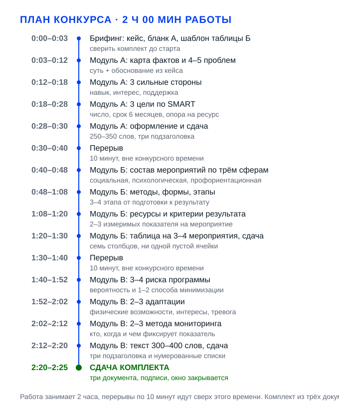
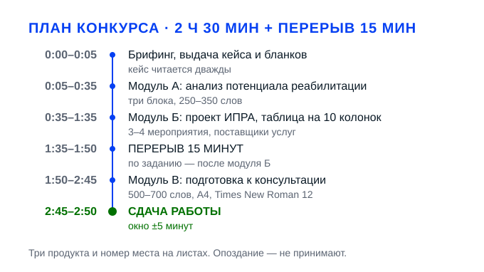
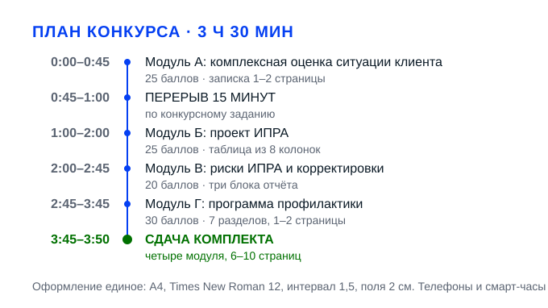

Специалист по социальной реабилитации (Р,О)
Задания ниже — официальные файлы «Абилимпикс» (источник: abilympics-russia.ru), разложенные по категориям. Решения написаны по тексту задания, регламенту и критериям оценки; в них указано, что именно проверяет эксперт.
Школьник
14–16 лет, базовый уровень заданияВыдержка из официального конкурсного задания: страницы, относящиеся к категории «Школьник» (стр. 8–12 источника).
Пошаговое решение
Задание категории «Школьники» — три модуля и три документа об одном клиенте. В модуле А за 30 минут нужно разобрать кейс и написать текст на 250–350 слов: 4–5 ключевых проблем с обоснованием, 3 сильные стороны и 3 цели по SMART на 6 месяцев. В модуле Б за 50 минут — таблица с 3–4 мероприятиями, закрывающими социальную, психологическую и профориентационную сферы, и для каждого указать связь с целью, методы, 3–4 этапа, ресурсы и критерии. В модуле В за 40 минут — текст на 300–400 слов: 3–4 риска с вероятностью и способами минимизации, 2–3 адаптации, 2–3 метода мониторинга. Всего 2 часа и перерывы по 10 минут, документы сдаются по модулям, и опоздание в первом съедает время второго. Ловушка — писать правильные слова про реабилитацию вместо конкретного клиента: эксперт смотрит, отвечает ли цель на названную проблему, а мероприятие — на цель. Ниже — три задачи, двенадцать действий, 48 шагов.

Задача 1. Провести диагностику и поставить три цели реабилитацииМодуль А · 30 минут · текст 250–350 слов
Первый модуль — самый короткий и самый влиятельный: за 30 минут нужно прочитать кейс, вытащить из него 4–5 ключевых проблем с обоснованием, найти 3 сильные стороны и поставить 3 цели по SMART на 6 месяцев. Всё, что вы напишете здесь, переезжает дальше: проблемы станут основанием для мероприятий модуля Б, цели — их адресатом, сильные стороны — графой «ресурсы». Ошибка в этом модуле не остаётся локальной: она размножается в двух следующих. Поэтому порядок жёсткий — сначала факты из кейса, потом проблемы, потом ресурсы, и только в конце цели.
Действие 1.1. Прочитать кейс и выписать факты
Шаг 1.1.1
Садимся за рабочее место и раскладываем перед собой всё выданное: текст кейса, бланк модуля А, шаблон таблицы модуля Б и два чистых листа на черновик. Сверяем, что на бланке есть место под три подзаголовка — «Ключевые проблемы», «Сильные стороны», «Цели реабилитации», — и записываем на полях время: модуль А длится 30 минут, после него перерыв 10 минут, и в перерыв дописывать уже нельзя. Первые две минуты уходят на то, чтобы положить перед собой часы и разложить 30 минут по блокам: около 8 минут на проблемы, 6 на сильные стороны, 10 на цели, остальное на оформление и проверку.
Модуль А задаёт рамку всей работы: 4–5 проблем, 3 сильные стороны и 3 цели переезжают в модуль Б как основание для мероприятий и в модуль В как предмет рисков. Если бланка нет или он не тот, вы теряете не баллы, а весь результат: текст на 250–350 слов, написанный на черновике, придётся переписывать, и минуты уйдут из модуля Б.
Перед вами лежат три вещи: кейс, бланк модуля А и часы. На полях бланка от руки написано распределение времени, и оно в сумме даёт 30 минут. Если какого-то бланка не хватает, руку поднимаем сразу, а не через десять минут.
Типичная ошибка — начать читать кейс, не проверив, куда писать: через двадцать минут выясняется, что бланк односторонний и вторая часть ответа не помещается. Вторая — не заметить, что в комплекте нет шаблона таблицы модуля Б: его отсутствие обнаруживается ровно тогда, когда модуль А уже сдан.
Эксперт проходит по рабочим местам в первые минуты и смотрит, разложены ли бланки и работает ли участник по времени; суетливые поиски ручки и листов читаются как неготовность к модулю.
Шаг 1.1.2
Читаем текст кейса дважды и с разной задачей. Первый проход — сквозной, три-четыре минуты, без ручки: нужно понять сюжет, кто клиент, что произошло и чего он хочет. Второй проход — с карандашом: подчёркиваем только то, что можно предъявить, — возраст, ограничение или диагноз, состав семьи, занятость, жилищные условия, доход, круг общения, слова самого клиента о желаниях. На полях ставим пометки «Ф» — факт и «Ц» — цитата, рядом сокращённо ось: здоровье, быт, окружение, запрос.
Кейс на этой категории читается один раз и навсегда: перечитывать его в конце модуля, когда осталось пять минут, бесполезно. Два прохода нужны потому, что первый даёт смысл, а второй — материал: обоснование каждой проблемы должно опираться на конкретную строчку кейса. Задание требует для каждой проблемы суть в одно предложение и обоснование в одно-два, и брать их неоткуда, кроме текста.
На полях не меньше десяти пометок «Ф» и хотя бы две «Ц». Проверьте себя вопросом: если эксперт спросит «откуда вы это взяли», вы можете показать строку. Если пометок меньше пяти, кейс прочитан поверхностно, и дальше пойдут общие слова.
Самая частая ошибка — прочитать кейс один раз и сразу писать: тогда проблемы получаются из головы, а не из текста, и в обосновании появляется «вероятно, клиент испытывает трудности». Вторая — увлечься медицинской частью и пропустить бытовую: именно там обычно лежит то, из чего вырастает реальная цель.
Эксперт в модуле А смотрит не на объём, а на привязку: у каждой проблемы должно быть обоснование из кейса. Он выборочно спрашивает «почему вы так решили» и по ответу видит, читал участник текст или сочинял.
Шаг 1.1.3
Чертим на черновике таблицу из четырёх строк и заполняем её пометками из кейса. Здоровье и ограничения: что именно ограничено и насколько, передвигается сам или с опорой, слышит, видит, удерживает ли внимание. Быт: с кем живёт, кто ухаживает, есть ли пандус и лифт, сколько времени проводит один. Социальное окружение: школа или работа, друзья, круг общения, конфликты. Запрос: что клиент сам называет проблемой и что хочет изменить. В каждой строке — не меньше двух записей.
Четыре оси — страховка от однобокости. Проблемы, выросшие только из медицинской строки, звучат как выписка из заключения, и эксперт видит, что социальная часть не проработана. Задание требует 4–5 проблем, и если брать их с четырёх разных осей, они автоматически перестают дублировать друг друга, а в модуле Б под них находится четыре разных мероприятия.
В таблице заполнены все четыре строки, в каждой минимум две записи. Если строка «социальное окружение» пустая, кейс прочитан как медицинский, и это надо исправить до того, как вы начнёте писать, а не после.
Ошибка — свести весь кейс к диагнозу: тогда все пять проблем окажутся про здоровье, а цели — про лечение, хотя социальная реабилитация ставит цели про участие в жизни. Вторая — пропустить запрос клиента и придумать его за него, потому что «специалисту виднее».
Эксперт проверяет широту охвата: проблемы из одной сферы читаются как неумение анализировать ситуацию, из трёх-четырёх — как понимание, что реабилитация здесь социальная, а не медицинская.
Шаг 1.1.4
Проходим по каждой записи и задаём один вопрос: это написано в кейсе или это я додумал. Всё, чего в тексте нет, вычёркиваем или помечаем как гипотезу. Гипотезу можно оставить, но переписать так, чтобы она опиралась на факт: не «клиент не хочет общаться», а «клиент не называет друзей и говорит, что после уроков идёт домой». Заодно отмечаем, чего в кейсе не хватает и что стоило бы уточнить у клиента, — это пригодится в модуле В, когда речь пойдёт о рисках.
Оценивают не эмпатию, а обоснованность: у эксперта тот же кейс, и придуманная деталь видна сразу. Разделение факта и гипотезы работает и на модуль В — там нужно оценивать вероятность риска, а оценивать её можно только от реальных условий. Придуманная деталь тянет за собой мероприятие, которого клиенту не нужно.
У каждой записи стоит пометка «факт» или «гипотеза», и гипотез не больше двух-трёх. Прочитайте обоснование вслух: если в нём есть «наверное» или «скорее всего» без опоры на кейс, это домысел и его надо переписать.
Ошибка — дописать клиенту то, чего в кейсе нет, потому что «так обычно бывает»: например, конфликт в семье, о котором не сказано ни слова. В модуле Б на этом рушится мероприятие: оно закрывает проблему, которой у клиента нет.
Эксперт сверяет формулировки с текстом кейса и отмечает расхождения; две-три придуманные детали стоят части баллов за анализ, но хуже то, что они тянут за собой всю программу модуля Б.
Действие 1.2. Сформулировать четыре-пять ключевых проблем
Шаг 1.2.1
Из карты фактов выбираем 4–5 трудностей, и правило простое: они должны задевать разные стороны жизни. Набор, который встречается в кейсах этой категории, выглядит так: ограничение передвижения по улице и в транспорте; отсутствие самостоятельного маршрута до места учёбы; узкий круг общения и страх разговора с незнакомыми; неопределённость с выбором профессии, когда до окончания девятого класса остался год; низкая информированность семьи о положенных услугах. Пять разных сфер — пять разных мероприятий, и ничего не дублируется.
Задание требует 4–5 проблем, и число здесь не формальность: четыре проблемы дают четыре направления работы, а пять — уже риск размывания, потому что на 250–350 слов приходится и обоснование, и сильные стороны, и цели. Три проблемы — недобор: программа получается узкой, и модуль Б нечем заполнить на три сферы.
Пять строк, и у каждой в скобках подписана сфера: передвижение, коммуникация, учёба, профессия, семья. Если две строки попадают в одну сферу, их объединяют или заменяют. Если сфер меньше четырёх, набор слишком узкий.
Ошибка — взять пять проблем, которые на самом деле одна: «не выходит из дома», «боится улицы», «не ездит в транспорте» — три формулировки одного ограничения, и эксперт видит это по обоснованиям, которые повторяют друг друга.
Эксперт считает проблемы и смотрит на их различимость: если из пяти пунктов читаются три, модуль А теряет вес, и вся программа дальше выглядит беднее, чем могла бы быть.
Шаг 1.2.2
Каждую трудность переписываем из языка диагноза в язык действия. Плохо: «у клиента ДЦП, спастическая диплегия». Хорошо: «клиент не может самостоятельно добраться до места учёбы: дорога занимает сорок минут, включает переход и две поездки, которые он не совершает без сопровождения». Плохо: «низкая самооценка». Хорошо: «клиент отказывается отвечать у доски и на вопросы незнакомых отвечает односложно, из-за чего учителя считают, что он не усвоил материал». Формула одна: что не получается, в каких обстоятельствах, с каким последствием.
Разница принципиальная: диагноз описывает состояние, а реабилитация работает с участием в жизни. Цель от ярлыка звучит как «улучшить состояние», её нельзя измерить и нельзя закрыть мероприятием. Цель от функциональной трудности измерима по определению — в ней уже есть обстоятельство и результат, а значит, и критерий для модуля Б.
В каждой формулировке есть три части: действие, обстоятельство, последствие. Если формулировка начинается с названия диагноза или с оценки личности, она ещё не переписана, и под неё не подберётся ни метод, ни критерий.
Частая ошибка — оставить медицинские термины, потому что они кажутся точнее: обоснование «у клиента спастика» не объясняет, почему человек не выходит из дома. Вторая — писать «нарушена коммуникация» без обстоятельств, и тогда в модуле Б не находится метода.
Эксперт читает первую строку каждой проблемы и по ней судит, работает участник в социальной модели или пересказывает медицинскую карту; термины без последствий он отмечает как слабый анализ.
Шаг 1.2.3
Каждую проблему оформляем предложениями разного назначения. Первое — суть, одна строка, только трудность: «Клиент не совершает самостоятельных поездок по городу». Второе и третье — обоснование, где указано, на чём это основано и почему это важно: «По кейсу, до школы его сопровождает мать, а поездка на кружок отменена после того, как он один проехал две остановки и вышел не на той. Из-за этого он пропускает занятия, которые ему нравятся». Обоснование сразу показывает и источник, и цену проблемы.
Задание задаёт формат буквально: суть в одно предложение и обоснование в одно-два. Это не придирка к стилю — так эксперт за минуту видит, отличается ли суть от обоснования или участник написал одно и то же дважды. Кроме того, обоснование с источником защищает от вопроса «откуда взяли», который задают чаще всего.
У каждой проблемы два-три предложения, и первое короче остальных. Если суть и обоснование говорят одно и то же разными словами, второе переписывается: в нём должны появиться факт из кейса и последствие для клиента.
Ошибка — написать обоснование в стиле «это мешает социализации»: фраза верна для любой проблемы и потому не значит ничего. Вторая — растянуть обоснование на полстраницы: пять проблем с длинными обоснованиями не помещаются в 250–350 слов, и тогда режутся цели, а это самые дорогие строки модуля.
Эксперт читает первые строки пунктов и по ним решает, есть ли анализ; обоснование он сверяет с кейсом выборочно, но именно по нему видно, работал участник с текстом или с шаблоном из интернета.
Шаг 1.2.4
Ставим проблемы в порядок и нумеруем: первая — та, что блокирует остальные, дальше по убыванию. В кейсе с ограничением передвижения первой почти всегда идёт транспортная доступность, потому что от неё зависят и учёба, и общение, и профессиональная проба. Заодно проверяем пары на пересечение: если вторая проблема целиком выводится из первой, её сужают или заменяют. Порядок в тексте задаёт, какая цель будет первой в модуле А и какое мероприятие первым в таблице.
Приоритет нужен потому, что цели ставятся на 6 месяцев: за это время реально сдвинуть одно-два ключевых ограничения и подтянуть остальные. Если все пять проблем объявлены равнозначными, цели получаются распылёнными, а в модуле В рисков оказывается столько же, сколько целей, и анализ теряет смысл.
Нумерация проставлена, и для первой проблемы вы можете одной фразой объяснить, почему она первая. Пересечения проверены: ни одна пара не описывает одно и то же с разных сторон. Порядок стоит перечитать перед переносом на бланк: если меняется первая проблема, меняется и первая цель.
Ошибка — расставить проблемы в том порядке, в котором они попались в кейсе. Тогда первая цель уходит в медицинскую часть, а профессиональная, ради которой клиент и пришёл, оказывается третьей и не получает ни времени, ни мероприятия.
Эксперт смотрит, совпадает ли порядок проблем с порядком целей и мероприятий; расхождение читается как отсутствие логики, даже если каждый пункт по отдельности написан хорошо.
Действие 1.3. Найти три сильные стороны клиента
Шаг 1.3.1
Выписываем всё, на что можно опереться, в три колонки. Навыки: что клиент умеет делать сам, пусть небольшое, — готовит, разбирается в телефоне, рисует, ведёт записи. Интересы: чем занимается по своей воле, что смотрит, во что играет, о чём говорит с удовольствием. Поддержка: кто рядом и что именно делает — мать, бабушка, один друг, учитель, тренер, социальный педагог. Из списка выбираем три самые сильные позиции, по одной из каждой колонки, чтобы не получилось три навыка и ни одной поддержки.
Три сильные стороны — обязательный элемент модуля А, и они не украшение: каждая цель должна на что-то опираться, иначе программа превращается в список услуг, которые клиенту предъявляют, а он в них не участвует. Кроме того, ресурсы снижают риски в модуле В: чем больше опор, тем ниже вероятность, что мероприятие сорвётся.
В списке не меньше шести позиций, и в нём есть хотя бы один навык, один интерес и одна поддержка. Три выбранные стороны отмечены, и у каждой написано, из какой колонки она взята. Набор из двух навыков и одной поддержки тоже допустим, а три навыка без поддержки — перекос.
Ошибка — написать сильные стороны из вежливости: «клиент добрый», «клиент старается». Это не ресурс, на него нельзя опереться в мероприятии. Вторая — назвать только поддержку матери и забыть про навыки клиента: программа получается про сопровождение, а не про самостоятельность.
Эксперт ищет в этом блоке то, что реально используется дальше в целях; если ни одна цель не опирается на названную сильную сторону, блок считается формальным, и это видно уже по модулю Б.
Шаг 1.3.2
Каждую из трёх сторон проверяем двумя вопросами: есть ли она в кейсе и кто её удерживает. «Умеет готовить» проверяемо, если в кейсе сказано, что он готовит дома. «Хочет учиться на повара» проверяемо, если это его слова, а не пожелание матери. Дальше смотрим на держателя: навык принадлежит клиенту и никуда не денется, а поддержка друга существует, пока друг рядом, и это надо честно назвать ограничением. Формулируем от факта: «по кейсу, клиент сам готовит ужин три раза в неделю».
Обоснованность сильных сторон проверяют так же, как обоснованность проблем: придуманный ресурс подводит в самый неподходящий момент — на защите, когда эксперт спрашивает, откуда он взялся. Ресурс с названным держателем, наоборот, становится опорой программы и снижает вероятность риска в модуле В.
У каждой стороны в черновике есть ссылка на строку кейса, а у поддержки ещё и имя того, кто её оказывает. Если напротив стороны стоит только ваша оценка, она пока не годится и её надо либо подтвердить фактом, либо заменить.
Ошибка — выдать желаемое за ресурс: «у клиента хорошие отношения с матерью» без единой строчки о матери. Вторая — назвать ресурсом интерес, который на самом деле навязан: в кейсе мать мечтает о медицинском колледже, а клиент об этом молчит.
Эксперт сверяет ресурсы с кейсом и особенно внимательно смотрит на интересы: именно они чаще всего оказываются приписанными, потому что звучат красиво и удобно ложатся в мероприятие.
Шаг 1.3.3
Для каждой стороны пишем в черновике, какую из пяти проблем она помогает снять. Навык готовить связывается с проблемой самостоятельного быта и с профессиональной пробой в сфере питания. Интерес к рисованию — с узким кругом общения: появляется тема, на которой строится разговор и общее занятие. Поддержка учителя — с проблемой ответов у доски: есть взрослый, который может дать безопасную роль на уроке. Если сторона ни с чем не связывается, её заменяют другой.
Связка делает модуль А цельным: задание требует, чтобы цели опирались на сильные стороны, а не существовали отдельно. Проверка простая и жёсткая — если ресурс не упоминается ни в одной цели, он был нужен только для количества, и эксперт увидит это в модуле Б, где ресурсы тоже указываются отдельной графой.
Три строки вида «сила — проблема — где используется». Все три ссылаются на разные проблемы, и хотя бы одна — на первую, приоритетную. Если две силы работают на одну проблему, одну лучше заменить. Если строка не складывается, ресурс не связан ни с одной проблемой и его место в формальном списке.
Ошибка — перечислить сильные стороны и не использовать их дальше: в цели они не попадают, и блок выглядит отдельным списком. Вторая — связать все три силы с одной проблемой, оставив остальные четыре без опоры.
Эксперт держит перед собой модуль А и модуль Б одновременно и ищет названные ресурсы в мероприятиях и в графе «необходимые ресурсы»; совпадение для него — признак продуманной работы.
Шаг 1.3.4
Каждую сторону оформляем двумя предложениями, как требует задание. Первое описывает, что это: «Клиент самостоятельно готовит ужин три-четыре раза в неделю, в кейсе перечислены блюда». Второе объясняет значимость для реабилитации: «Это готовый бытовой навык и одновременно основа профессиональной пробы, поэтому его можно предъявить мастеру уже на первом занятии». Описание — всегда факт, значимость — всегда ваш вывод, и в тексте они должны быть разделены.
Задание просит для каждой сильной стороны описание в одно предложение и пояснение значимости в одно. Такая пара показывает, умеет ли участник отличать наблюдение от интерпретации, — а это ровно то, что проверяют в социальной реабилитации, где выводы делаются от фактов, а не от симпатий к клиенту.
Три пары предложений, в каждой первое содержит проверяемую деталь, второе — слово «поэтому» или его смысл. Если значимость подходит к любой из трёх сторон, она написана слишком общо. Сравните значимости: если две начинаются одинаково, одна из сторон описана формально.
Ошибка — слить описание и значимость в одну фразу: «Клиент хорошо готовит, что важно для реабилитации». Вторая — объяснять значимость пользой для программы, а не для клиента: «это удобно использовать в мероприятии» звучит как оправдание и экспертом не засчитывается.
Эксперт читает вторые предложения: по ним видно, понимает ли участник, зачем ресурс нужен клиенту, а не только чем он удобен для заполнения таблицы. Описание без значимости он считает половиной пункта, а не полноценной сильной стороной.
Действие 1.4. Поставить три цели по SMART и сдать модуль
Шаг 1.4.1
Ставим три цели так, чтобы они не повторяли друг друга: социально-бытовая, коммуникативная и профориентационная. В кейсе с ограничением передвижения это выглядит так: самостоятельные поездки по знакомому маршруту; участие в групповом занятии с незнакомыми людьми не реже двух раз в месяц; прохождение профессиональной пробы и выбор направления обучения до конца учебного года. Три цели — три разные сферы, и каждая отвечает на свою проблему из первого блока.
Три цели на 6 месяцев — ровно тот объём, который можно довести до результата и потом отследить; задание требует три и не больше. Разные сферы нужны потому, что модуль Б требует мероприятий по социальной, психологической и профориентационной направленности: если цели все про одно, мероприятия приходится придумывать отдельно от целей, и связка «мероприятие — цель» становится натянутой.
Три цели, у каждой подписана сфера, и ни одна не повторяется. Каждая ссылается на номер проблемы из первого блока — эта ссылка потом перейдёт в таблицу модуля Б и там же будет проверена. Сферы подписывайте словами «быт», «общение», «профессия», чтобы при проверке не путаться в номерах.
Ошибка — поставить три цели вокруг одного: «научиться ездить», «научиться ездить в колледж», «научиться ездить на кружок». Вторая — взять цели из типового набора услуг, не глядя на кейс: «улучшить психоэмоциональное состояние» подходит кому угодно и потому не проверяется.
Эксперт сверяет цели с проблемами: если цель не отвечает ни одной из названных проблем, он фиксирует разрыв логики, и это стоит участнику части баллов сразу в двух модулях.
Шаг 1.4.2
Каждую цель прогоняем по пяти признакам и записываем так, чтобы все пять были видны в тексте. Конкретность: что именно изменится. Измеримость: в чём считаем — поездки, занятия, пробы, документы. Достижимость: опора на названную сильную сторону и реальные ресурсы территории. Значимость: связь с запросом клиента. Срок: шесть месяцев с разбивкой по месяцам. Пример полной формулировки: «К третьему месяцу клиент самостоятельно совершает поездку до центра реабилитации и обратно два раза в неделю, к шестому — до места учёбы по тому же маршруту без сопровождения».
SMART проверяют буквально: эксперт ищет в каждой цели число, срок и способ проверки. Цель без числа нельзя ни оценить, ни отследить, а модуль В требует методов мониторинга — если цель не измерима, мониторить нечего. Срок шесть месяцев задан в задании, и его отсутствие читается как невнимательность к самому тексту КЗ.
В каждой цели есть число, срок и действие клиента. Проверка простая: уберите число — если цель стала бессмысленной, число настоящее, а не приписанное. Шесть месяцев упомянуты явно или разложены по этапам.
Ошибка — «улучшить», «повысить», «сформировать» без числа: такие цели выглядят солидно и не проверяются. Вторая — поставить недостижимое за полгода: «трудоустройство на постоянную работу» для клиента, который ещё не выходит из дома, гарантирует провал и добавляет в модуль В риск, созданный самим участником.
Эксперт читает цели последними, уже зная проблемы и ресурсы, и оценивает сразу три вещи: измеримость, реалистичность за шесть месяцев и опору на сильные стороны клиента.
Шаг 1.4.3
Берём лист и чертим стрелки: от каждой цели к номеру проблемы, на которую она отвечает, и к номеру сильной стороны, на которую опирается. Дальше смотрим на результат: у каждой цели должно быть по стрелке туда и обратно, а у каждой проблемы — хотя бы одна цель. Если проблема осталась без цели, её либо снимают из списка, либо меняют цель; если цель висит без проблемы, она лишняя. На эту проверку уходит три-четыре минуты, и она спасает больше, чем правка формулировок.
Задание требует проверить логическую связность отдельным пунктом — цели должны отвечать на проблемы и использовать сильные стороны. Это единственная проверка в модуле А, которую эксперт делает механически, водя пальцем по тексту, поэтому разрыв виден сразу и обесценивает и блок проблем, и блок целей.
На черновике шесть пометок: три у целей, три у проблем, и все сходятся. Проблем без цели нет, целей без проблемы нет. Если хотя бы одна пометка не находится, текст ещё не готов к переносу на бланк. Проверку делайте карандашом на отдельном листе, а не на бланке: пометки на бланке выглядят как черновик.
Ошибка — проверить связность «в голове» и не отметить на бумаге: при пяти проблемах и трёх целях легко потерять одну, и именно её проверит эксперт. Вторая — подогнать проблему под готовую цель задним числом, дописав её в список для вида.
Эксперт проверяет связность именно так — по номерам и ссылкам; явные отсылки в тексте («цель 1 отвечает проблеме 1») он отмечает как сильную сторону работы.
Шаг 1.4.4
Переносим текст на бланк строго по трём подзаголовкам: «Ключевые проблемы», «Сильные стороны», «Цели реабилитации». Подзаголовки выделяем жирным, как требует задание, списки нумеруем, внутри проблем держим пару «суть — обоснование». Считаем слова: 250–350 — это примерно 1700–2400 знаков, чуть меньше страницы А4 двенадцатым кеглем через полтора интервала. Если получилось 400 слов, режем обоснования, а не цели. Затем откладываем ручку, перечитываем один раз целиком и сдаём модуль до объявления времени.
Объём и структура — формальные критерии, которые проверяются без обсуждения: текст на 400 слов при требовании 250–350 читается как неумение держать рамку, а отсутствие одного из трёх подзаголовков — как пропущенная часть задания. Сдавать надо до конца модуля, потому что после перерыва бланк не принимают, а модуль Б начинается с нуля.
Три подзаголовка на месте, списки пронумерованы, объём в пределах 250–350 слов. Всё написано на бланке, а не на черновике, бланк подписан, и до конца модуля осталось не меньше двух минут. Если объём выше 350 слов, сокращайте обоснования проблем, а не формулировки целей: цели несут числа и срок.
Ошибка — писать сразу на бланк и потом зачёркивать: исправленный бланк читается плохо и выглядит небрежно. Вторая — сдавать с недобором объёма, «потому что и так понятно»: 180 слов при норме 250 — это пропущенная часть анализа, а не краткость.
Эксперт получает бланк после модуля и первым делом смотрит структуру и объём; несоответствие формату он отмечает до чтения содержания, и это влияет на восприятие всего текста.
Задача 2. Составить программу реабилитации и заполнить таблицуМодуль Б · 50 минут · таблица на 3–4 мероприятия
Второй модуль — 50 минут на таблицу, в которой 3–4 мероприятия закрывают социальную, психологическую и профориентационную сферы. Семь столбцов задают семь вопросов к каждому мероприятию: как оно называется, на какую цель работает, какими методами и в какой форме проводится, из каких 3–4 этапов состоит, что для этого нужно, по каким критериям считается результат. Здесь важно не придумать красивых названий, а удержать одну линию: проблема — цель — мероприятие — критерий. Всё, что не привязано к цели из модуля А, экспертом читается как случайная строка, и именно на этих разрывах теряются баллы.
Действие 2.1. Спланировать состав программы
Шаг 2.1.1
Кладём перед собой шаблон из задания и пересчитываем столбцы: номер, название мероприятия, связь с целью, методы и формы работы, этапы реализации (3–4 шага), необходимые ресурсы, критерии результата. Семь столбцов — семь вопросов, на которые нужен ответ по каждому мероприятию. Сразу отводим под таблицу две страницы: при четырёх мероприятиях и четырёх этапах ячейка этапов занимает три-четыре строки. Если шаблон выдан узким, работаем на своём листе, но сохраняем тот же порядок столбцов.
Таблица модуля Б оценивается по столбцам: эксперт идёт по строке и проверяет, заполнена ли каждая графа содержательно, а не прочерком. Пропущенный столбец — не мелкая небрежность, а отсутствующий элемент программы: без критериев результат нельзя закрыть, без ресурсов мероприятие нельзя провести, без этапов оно остаётся намерением.
На черновике нарисована сетка с семью столбцами и четырьмя пустыми строками. Названия столбцов совпадают с шаблоном слово в слово. Если столбцов шесть или восемь, вы работаете не по шаблону и теряете баллы за формальную часть.
Ошибка — рисовать таблицу после того, как текст мероприятий уже написан: он не влезает в графы, и всё приходится переписывать. Вторая — оставить столбец «этапы» на конец: именно он занимает больше всего места, и на него не хватает времени.
Эксперт смотрит таблицу построчно и по диагонали: пустые или однотипные ячейки видны сразу, особенно в столбцах «ресурсы» и «критерии результата». Отдельно он проверяет, совпадает ли порядок столбцов с шаблоном: переставленные графы читаются как невнимательность.
Шаг 2.1.2
Планируем три-четыре мероприятия так, чтобы были закрыты социальная, психологическая и профориентационная сферы. Рабочий набор: социально-бытовой тренинг самостоятельных поездок; психологическое занятие по снижению тревоги в разговоре с незнакомыми; профориентационная проба в сфере питания с опорой на навык готовки; четвёртым, если остаётся время, — групповое занятие в клубе по интересам, где рисование становится поводом для общения. Четыре строки дают по одному мероприятию на сферу плюс усиливающее.
Требование про три сферы — проверяемая структура: эксперт смотрит, есть ли в таблице социальная, психологическая и профориентационная направленность, и если одна сфера отсутствует, часть задания не выполнена, сколько бы мероприятий ни было. Четыре строки лучше трёх, потому что позволяют связать между собой все цели, но и три принимаются, если каждая сфера закрыта.
Три или четыре строки, и в каждой в названии или отдельной пометке видна сфера. Проверьте набор по трём словам: социальная — есть, психологическая — есть, профориентационная — есть. Если сфера закрыта только названием, а метода под неё нет, строка не считается выполненной.
Ошибка — сделать четыре мероприятия, но все про общение: сферы формально названы, а по сути одна, и это видно по методам. Вторая — отдать профориентацию одной консультацией без пробы: консультация не меняет ситуацию, и критерий результата по ней получается пустым.
Эксперт проверяет охват сфер первым делом и отмечает в листе оценки, какие направления закрыты; отсутствие профориентации обычно стоит участнику части баллов за весь модуль.
Шаг 2.1.3
Для каждой строки пишем, на какую цель из модуля А она работает, и одной фразой объясняем как. Пример: «Мероприятие 1 отвечает цели 1: тренировка маршрута даёт навык самостоятельной поездки, который и есть измеримый результат цели». Если мероприятие отвечает двум целям, выбираем главную и указываем её, а вторую упоминаем в скобках. Правило: у каждой из трёх целей должно быть хотя бы одно мероприятие, иначе цель остаётся без программы.
Столбец «связь с целью» — единственное место, где видно, что программа выросла из диагностики, а не из списка услуг. Эксперт проверяет именно эту связку: мероприятие без цели читается как случайное, цель без мероприятия — как забытая, и то и другое снижает оценку сразу в двух модулях.
Три цели из модуля А упомянуты в таблице, и у каждой есть мероприятие. Ни одна строка не осталась без ссылки на цель, и объяснение в каждой ячейке — одно предложение с глаголом действия. Ссылки на цели должны стоять в каждой строке, а не только в первой: пропуск виден при построчном чтении.
Ошибка — написать «связано с целью 1» без объяснения: эксперту нужен механизм, а не ссылка. Вторая — привязать все мероприятия к первой цели, потому что она приоритетная: тогда вторая и третья остаются без работы, и в модуле В риски по ним нечем закрывать.
Эксперт сверяет номера целей с модулем А и проверяет, что объяснение связи содержательное: фраза «способствует достижению цели» без указания механизма не засчитывается.
Шаг 2.1.4
Расписываем 50 минут по операциям: 8 минут на выбор мероприятий и названий, 20 на методы, формы и этапы, 12 на ресурсы и критерии, 7 на перенос в таблицу, 3 на проверку. Работаем так: сначала заполняем всю таблицу короткими черновыми фразами по всем строкам, потом возвращаемся и дописываем. Такой порядок не даёт увязнуть в первом мероприятии: при построчном письме «до конца» на четвёртую строку времени не остаётся.
50 минут на таблицу из семи столбцов и четырёх строк — это примерно по полторы минуты на ячейку, и считать надо именно так. Модуль Б идёт сразу после перерыва, а модуль В начинается без паузы: если на таблицу уйдёт лишние десять минут, они заберутся из анализа рисков, где текст на 300–400 слов пишется в один заход.
На полях бланка написаны часы по операциям, и они в сумме дают 50 минут. К середине модуля, то есть через 25 минут, черновые фразы стоят во всех строках таблицы, а не только в первой. Если к 25-й минуте заполнены две строки вместо четырёх, план пересматривается сразу, а не в конце модуля.
Ошибка — начать с первой строки и доводить её до идеала: через двадцать минут готово одно мероприятие из четырёх. Вторая — оставить критерии результата на последние пять минут, хотя именно этот столбец требует самой точной формулировки.
Эксперт заходит в середине модуля и по состоянию таблицы видит темп: четыре черновые строки к 25-й минуте — норма, одна заполненная — сигнал, что участник не успеет.
Действие 2.2. Прописать методы, формы и этапы
Шаг 2.2.1
Для каждого мероприятия выбираем метод и называем его конкретно, а не «занятие». Для социальной сферы — тренинг с пошаговым освоением маршрута, разбор ситуаций и сопровождение с постепенным сокращением помощи. Для психологической — групповое занятие с ролевой игрой и дыхательными упражнениями, индивидуальная беседа с психологом. Для профориентационной — профессиональная проба на кухне под руководством мастера и экскурсия на производство. Возраст учитываем прямо: для шестнадцати лет ролевая игра работает, а лекция о профессиях — нет.
Столбец «методы и формы работы» оценивают на конкретность: эксперт ищет название метода и понимание, зачем он выбран. Метод, не связанный с проблемой, делает мероприятие бессмысленным — тренировка памяти при проблеме транспортной доступности ничего не сдвинет, и в модуле В это вылезет риском «мероприятие не даёт результата».
В каждой ячейке назван метод, а не направление: «тренинг маршрута», «ролевая игра», «профессиональная проба», «беседа». Возраст клиента и уровень его самостоятельности учтены в самой формулировке метода.
Ошибка — писать «психологическая помощь» и «консультация»: под такие слова нельзя подобрать ни этапы, ни критерий. Вторая — выбрать метод, который клиенту недоступен: групповая работа для человека, который пока не выходит из дома, сорвётся на первом же занятии.
Эксперт читает методы и сверяет их с проблемами: совпадение метода и проблемы он считает признаком профессионального мышления, несовпадение — формальным заполнением графы.
Шаг 2.2.2
К каждому методу дописываем форму: индивидуально или в группе, очно или дистанционно, сколько занятий и какой длительности. Пример: «индивидуально, очно, восемь занятий по сорок минут, два раза в неделю»; «группа из шести человек, очно, четыре встречи по часу». Дистанционный формат используем там, где он снимает барьер, — первая консультация психолога онлайн, пока клиент не готов идти в центр, — и честно называем это подготовительным этапом, а не заменой очной работы.
Форма — это то, из чего складывается ресурс времени и загрузка специалистов; без неё строка «этапы» превращается в перечень намерений. Задание требует обозначить форму проведения прямо, и её отсутствие читается как незаполненный элемент таблицы, а не как стилистическая вольность.
В каждой ячейке три параметра: индивидуально или группа, очно или онлайн, число и длительность занятий. Если хотя бы одного нет, форма не указана и ячейка считается незаполненной. Отдельно проверьте, что число занятий совпадает с тем, которое появится в критерии результата.
Ошибка — написать «групповая форма» и не указать размер группы: при шестнадцати участниках тренировка маршрута не проводится. Вторая — заменить всю очную работу онлайн-занятиями, потому что так проще: цель про самостоятельные поездки так не достигается.
Эксперт проверяет, соответствует ли форма цели: цель про поездки, закрытая вебинаром, для него очевидное противоречие, и он отмечает его в листе оценки.
Шаг 2.2.3
Каждое мероприятие раскладываем на три-четыре последовательных шага от подготовки к результату. Для тренировки маршрута: разбор дороги на карте вместе с сопровождающим; проезд с сопровождением и разбор того, что было трудно; самостоятельный проезд короткого участка с ожиданием сопровождающего на конечной точке; полный маршрут без сопровождения с контрольным звонком. Шаги пишем глаголами и с указанием, кто в них участвует.
Этапы — доказательство того, что мероприятие продумано как процесс, а не как разовое событие. Из них вырастают критерии результата: если шагов четыре, то и промежуточных результатов четыре, и в модуле В есть что отслеживать. Задание требует 3–4 шага, и больше не нужно — пятый обычно дублирует четвёртый.
В каждой ячейке три или четыре шага, каждый начинается с глагола, и между ними видна логика: подготовка, первая проба, самостоятельное выполнение, закрепление. Ни один шаг не повторяет предыдущий другими словами.
Ошибка — написать этапы как «провести занятие, провести занятие, провести занятие»: это не этапы, а расписание. Вторая — поставить результат в первый шаг: если клиент сразу делает маршрут сам, промежуточные шаги не нужны, и программа теряет смысл.
Эксперт читает этапы построчно и смотрит нарастание самостоятельности: если все шаги одинаковы по сложности, мероприятие не ведёт к цели, и это видно без пояснений.
Шаг 2.2.4
Проходим по столбцу этапов и задаём вопрос к каждому шагу: что стало возможно после него, чего не было до. Если ответа нет, шаг убираем или переформулируем. Заодно проверяем, что этапы разных мероприятий не копируют друг друга: тренировка маршрута и профориентационная проба могут обе включать выезд, но в первом осваивается дорога, а во втором рабочая операция, и это должно быть видно из формулировок.
Дублирующиеся этапы — самая частая причина, по которой таблица выглядит заполненной, но не читается как программа. Эксперт сравнивает строки между собой, и повторяющиеся формулировки в двух мероприятиях он отмечает как отсутствие дифференциации, то есть как непонимание, зачем нужны разные методы.
У каждого шага есть ответ «после него клиент может...». Ни в одной паре мероприятий этапы не совпадают по формулировкам. Столбец читается сверху вниз как история движения к цели, а не как список действий специалиста.
Ошибка — скопировать этапы из первого мероприятия во второе и заменить одно слово. Вторая — оставить шаг «беседа о важности», который ничего не меняет в навыке и существует только для объёма. Третья — оставить в этапах действие специалиста вместо действия клиента: «провести инструктаж» ничего не говорит о прогрессе.
Эксперт сравнивает этапы разных строк: одинаковые шаги в двух мероприятиях он считает копированием, и это снижает оценку за содержательность всей таблицы.
Действие 2.3. Указать ресурсы и критерии результата
Шаг 2.3.1
Для каждого мероприятия перечисляем три вида ресурсов: люди, место, материалы. Люди — психолог, социальный педагог, инструктор по труду, мастер производственного обучения, волонтёр-сопровождающий. Место — кабинет, тренировочная кухня, учебный маршрут, площадка центра социального обслуживания. Материалы — карточки-схемы маршрута, бланк дневника, продукты для пробы, спецодежда, транспортная карта. Пишем так, чтобы по строке было понятно, что именно нужно принести или забронировать.
Столбец ресурсов проверяется на реалистичность: если в программе указан специалист, которого в территории нет, мероприятие невыполнимо, и это уже риск для модуля В. Кроме того, ресурсы должны совпадать с сильными сторонами из модуля А: названный там навык клиента — тоже ресурс, и его стоит указать явно, иначе связка модулей рвётся.
В каждой ячейке есть хотя бы один человек, одно место и один материал. Все указанные специалисты существуют в системе: психолог и социальный педагог — в школе или центре, инструктор по труду — в центре занятости или реабилитационном центре.
Ошибка — написать «специалисты центра» без ролей: непонятно, кто ведёт занятие и кто отвечает за результат. Вторая — перечислить оборудование, которого нет, например интерактивную доску в кабинете, где её никогда не было.
Эксперт сверяет ресурсы с реальной сетью учреждений региона и отмечает, где участник назвал несуществующую услугу или перепутал ведомство. Отдельно он смотрит, указаны ли люди по ролям, а не общим словом «специалисты центра».
Шаг 2.3.2
Проверяем каждый ресурс вопросом: где это находится и как клиент туда попадёт. Центр социального обслуживания, школа, центр занятости, реабилитационный центр, библиотека, клуб по месту жительства — всё это называем не абстрактно, а с привязкой к маршруту: «тренировочная кухня центра социального обслуживания по месту жительства, дорога — одна поездка на автобусе». Если ресурс далеко, ищем ближайший аналог: длинная дорога для клиента с ограничением передвижения — дополнительный барьер.
В социальной реабилитации доступность не удобство, а условие: услуга, до которой нельзя добраться, для клиента не существует. Эксперт проверяет это первым делом, потому что именно здесь чаще всего рушится программа: мероприятия продуманы, а идти до них сорок минут пешком.
У каждого мероприятия указано место и способ добраться. Ни один ресурс не находится «в области» без пояснения, как клиент туда попадает. Если что-то далеко, рядом назван аналог. Проверьте время в пути: дорога больше часа в одну сторону — это отдельный риск, и его стоит назвать.
Ошибка — указать областной реабилитационный центр в другом городе, не объяснив, кто и как организует поездку. Вторая — рассчитывать на транспорт, которым клиент не пользуется, хотя в кейсе об этом сказано прямо.
Эксперт знает ресурсную карту территории и проверяет по ней: совпадение с реальными учреждениями он считает сильной стороной, вымышленные адреса — формальной работой.
Шаг 2.3.3
На каждое мероприятие пишем два-три измеримых критерия. Не «клиент стал увереннее», а «клиент самостоятельно совершил четыре поездки по маршруту, из них две в часы пик»; «клиент принял участие в трёх групповых занятиях и выступил с одним коротким сообщением»; «клиент выполнил три операции на кухне под наблюдением и получил оценку мастера не ниже удовлетворительной». В критерии держим три элемента: число, действие клиента, условие выполнения.
Критерии — это то, чем программа закрывается: без них нельзя сказать, достигнута цель или нет, и в модуле В нечего отслеживать. Задание требует 2–3 измеримых показателя на мероприятие, и это единственный столбец, где видно, умеет ли участник превращать замысел в проверяемый результат.
В каждой ячейке два или три критерия, и в каждом есть число. Уберите число — критерий должен потерять смысл. Критерии касаются действий клиента, а не стараний специалиста. Если критерий начинается со слова «проведено», он описывает работу специалиста, а не клиента.
Ошибка — писать критерии в терминах процесса: «проведено четыре занятия». Это показатель работы центра, а не результата клиента. Вторая — ставить критерий, который нельзя зафиксировать: «клиент почувствовал уверенность» без анкеты и без наблюдателя.
Эксперт читает критерии и проверяет измеримость; критерии в терминах процесса он отмечает как подмену результата и снижает оценку за весь модуль. Критерий, в котором есть число и условие выполнения, он считает сильной стороной и часто приводит как пример.
Шаг 2.3.4
Проходим по критериям и для каждого отвечаем на два вопроса: кто фиксирует и чем. Ответы коротко дописываем в скобках: «фиксирует социальный педагог в дневнике занятий», «фиксирует психолог по анкете до и после», «фиксирует мастер по оценочному листу». Если на вопрос «чем» ответить нечем, критерий переписываем: вместо «улучшилось настроение» ставим «по анкете самооценки тревоги результат снизился с 18 до 14 баллов».
Измеримость — это не только число, но и способ съёма. Критерий без способа фиксации в модуле В не превратится в метод мониторинга, а значит, участник теряет связку между двумя модулями, которую эксперт проверяет специально: он спрашивает, чем измеряли именно этот показатель.
У каждого критерия в скобках стоит инструмент фиксации: дневник, анкета, оценочный лист, протокол наблюдения. Ни одного критерия без инструмента не осталось, и все инструменты уже существуют, а не придуманы под случай.
Ошибка — оставить критерии без указания, кто их снимает: в модуле В тогда появляется мониторинг «по ощущениям». Вторая — придумать инструмент, которого нет: например стандартизированный тест, которым в школе не пользуются.
Эксперт проверяет пары «критерий — инструмент»: критерий без инструмента он считает недоизмеренным, а придуманный инструмент — незнанием реальной практики учреждений.
Действие 2.4. Заполнить таблицу и сдать модуль
Шаг 2.4.1
Переносим черновик в таблицу по строкам и столбцам, не меняя порядка: номер, название, связь с целью, методы и формы, этапы, ресурсы, критерии. Работаем карандашом или в электронном бланке, если он выдан, но так, чтобы правки не разрушали сетку. В каждой ячейке — одна мысль и, если нужно, перечисление через точку с запятой: длинные абзацы в таблице не читаются и мешают эксперту идти по столбцу.
Таблица — форма сдачи модуля Б, и её оценивают именно как таблицу: эксперту нужно сравнить четыре строки по одному столбцу, а это возможно, только если ячейки одинаковы по структуре. Связный текст внутри ячейки ломает сравнение и читается как неумение работать с шаблоном.
Все семь столбцов заполнены во всех строках, ни одной пустой или прочеркнутой ячейки. Ячейки одной строки не перетекают в соседние, сетка читается и не съезжает на вторую страницу. Проверьте, что сетка не съехала: столбцы идут в том же порядке, что и в шаблоне задания.
Ошибка — оставить столбец «ресурсы» пустым, решив, что он очевиден. Вторая — слить «методы» и «этапы» в одну ячейку: тогда эксперту нечего сравнивать, и оба элемента считаются невыполненными, хотя работа была сделана.
Эксперт читает таблицу по столбцам, а не по строкам: если структура ячеек разная, он вычитывает только первую строку и остальные просматривает поверхностно.
Шаг 2.4.2
Проходим по ячейкам и сокращаем всё, что длиннее двух строк. Из названия мероприятия убираем прилагательные: не «комплексное социально-психологическое мероприятие по развитию навыков самостоятельного передвижения», а «тренировка самостоятельного маршрута». В методах оставляем название метода и число занятий, в этапах — глагол и участника, в критериях — число и действие. Сокращение идёт за счёт слов, а не содержания.
Читаемость таблицы прямо влияет на оценку: эксперт просматривает четыре строки по семь столбцов, и если каждая ячейка — абзац, он читает выборочно. Короткая точная формулировка гарантирует, что нужный элемент будет найден, длинная — что он утонет в словах, и балл за него не поставят.
Каждая ячейка умещается в две-три строки. Названия мероприятий короче десяти слов. Все числа, методы и критерии при сокращении сохранились, ничего не потерялось по смыслу. Если после сокращения ячейка стала непонятной без контекста, верните одно уточняющее слово.
Ошибка — сокращать вместе с содержанием: из критерия убирают число, и он перестаёт быть критерием. Вторая — оставить в таблице вводные фразы вроде «в рамках данного мероприятия предполагается», которые занимают место и ничего не сообщают.
Эксперт оценивает плотность таблицы: короткие ячейки с числами он читает целиком, а многословные просматривает по первым словам и часто не находит нужного элемента.
Шаг 2.4.3
Проверяем таблицу по трём направлениям. Первое: каждая цель из модуля А имеет мероприятие. Второе: у каждого мероприятия есть критерий, который измеряет результат именно этой цели, а не что-то соседнее. Третье: ресурсы, названные в модуле А как сильные стороны клиента, присутствуют в графе ресурсов хотя бы одного мероприятия. Три прохода занимают пять минут и ловят почти все разрывы.
Модули оценивают отдельно, но читают вместе: эксперт держит перед собой и текст модуля А, и таблицу. Разрыв между ними — самая заметная ошибка этой категории, потому что проблемы, цели и мероприятия должны составлять одну линию, а не три параллельных списка.
Три галочки напротив трёх проверок. Каждая цель закрыта, каждый критерий привязан к цели, сильные стороны использованы. Если какая-то проверка не проходит, правится таблица, а не текст модуля А. Отмечайте проверки прямо на черновике: третья из них забывается чаще всего.
Ошибка — проверять только заполненность ячеек, не сверяя с модулем А. Вторая — «подправить» цель в голове, чтобы она совпала с мероприятием, вместо того чтобы поправить мероприятие: цель уже сдана, изменить её нельзя.
Эксперт проверяет стык модулей выборочно, но целенаправленно: он берёт одну цель и ищет её в таблице, и результат этой проверки влияет на оценку обоих модулей.
Шаг 2.4.4
Перед сдачей проверяем формальную часть: подписан ли бланк, все ли страницы таблицы на месте, не потерялась ли четвёртая строка при переходе на вторую страницу. Сдаём до объявления конца модуля, потому что после перерыва бланк не принимают. Если какое-то мероприятие не успели дописать, дописываем коротко, но дописываем: пустая ячейка стоит дороже краткой формулировки.
Сдача по модулям — жёсткое правило: каждый документ принимается в своё окно, и незакрытый модуль Б нельзя донести вместе с модулем В. Незаполненная строка читается как пропущенный элемент программы, тогда как краткая формулировка читается как осознанное решение.
Бланк подписан, страниц столько, сколько нужно, все четыре строки на месте, время до конца модуля — не меньше двух минут. Четвёртая строка не осталась на обороте, о котором вы забыли. Проверьте также, что бланк подписан один раз и дата стоит одна, а не две.
Ошибка — оставить четвёртую строку на второй странице, забыв перевернуть лист: эксперт видит три мероприятия вместо четырёх. Вторая — сдавать с пустой ячейкой, рассчитывая дописать после перерыва, которого для этого не будет.
Эксперт принимает бланк и сразу пересчитывает строки и страницы; потерянная строка или отсутствующая подпись фиксируются как формальное нарушение до чтения содержания.
Задача 3. Проанализировать риски, адаптировать программу и выбрать мониторингМодуль В · 40 минут · текст 300–400 слов
Третий модуль — 40 минут и текст на 300–400 слов под тремя подзаголовками: «Потенциальные риски», «Адаптации программы», «Методы мониторинга прогресса». Нужны 3–4 риска с вероятностью и способами минимизации, 2–3 адаптации под особенности клиента и 2–3 метода отслеживания прогресса с обоснованием. Модуль пишется последним, и это его главный риск: если на таблицу ушло лишнее время, здесь останется двадцать минут на текст, который требует продумывания. Поэтому риски берутся не из общего списка, а из собственной программы, адаптации — из ограничений клиента, мониторинг — из критериев.
Действие 3.1. Выделить три-четыре риска программы
Шаг 3.1.1
Берём таблицу модуля Б и идём по строкам: для каждого мероприятия спрашиваем, что может помешать именно ему. Из ответов выбираем три-четыре риска, и они должны быть про конкретные мероприятия, а не про жизнь вообще. Рабочий набор: клиент пропускает занятия из-за обострения состояния; сопровождающий не может выделить время на поездки; группа набирается меньше трёх человек и занятие отменяется; семья не поддерживает профессиональную пробу и настаивает на другом варианте. Каждый риск привязан к строке таблицы.
Задание требует 3–4 риска реализации программы, а не списка общих опасностей. Риск, не связанный с мероприятием, нельзя ни оценить по вероятности, ни закрыть способом минимизации, и эксперт видит в нём формальную строку. Привязка к мероприятию делает модуль В продолжением модуля Б, а не отдельным сочинением на тему реабилитации.
Три-четыре риска, и напротив каждого в черновике написан номер мероприятия. Ни один риск не сформулирован как «нехватка финансирования» без пояснения, какое мероприятие от этого страдает и как именно.
Ошибка — переписать общий список рисков из учебника: «низкая мотивация клиента», «недостаток кадров», «отсутствие транспорта». Вторая — взять риск, который невозможно проверить: «непредвиденные обстоятельства», под который нельзя подобрать ни вероятность, ни способ.
Эксперт ищет в рисках названия мероприятий: риск без привязки к строке таблицы он считает заимствованным из общего списка и не засчитывает как анализ собственной программы.
Шаг 3.1.2
Каждому риску ставим вероятность — высокая, средняя или низкая — и объясняем одним предложением, на чём основана оценка. Высокая: в кейсе сказано, что клиент уже пропускал занятия из-за состояния, значит повторение вероятно. Средняя: группа набирается по факту, и практика центра показывает, что набор бывает неполным. Низкая: сопровождающий — близкий родственник, который уже возит клиента в школу. Оценка опирается на факт из кейса или на известную практику.
Вероятность — это то, что отличает анализ от перечисления: она заставляет взвесить риск и решить, какой закрывать первым. Задание прямо требует указать вероятность для каждого риска, и без обоснования оценка читается как случайное слово, поставленное для заполнения графы.
У каждого риска стоит слово «высокая», «средняя» или «низкая» и рядом объяснение в одно предложение. Хотя бы один риск оценён как высокий: программа без высоких рисков выглядит непродуманной, потому что в реальной работе они есть всегда.
Ошибка — поставить всем рискам среднюю вероятность, чтобы не ошибиться: это читается как отказ от оценки. Вторая — занизить риск, который в кейсе уже случался, и тем самым показать, что участник не связал историю клиента с собственной программой.
Эксперт сверяет вероятности с текстом кейса: если риск уже реализовывался, а участник поставил низкую вероятность, он отмечает это как ошибку оценки. Он также смотрит, различаются ли оценки между рисками: три одинаковые читаются как формальность.
Шаг 3.1.3
Для каждого риска пишем один-два конкретных способа, и способ должен быть действием, а не пожеланием. Против пропусков из-за состояния — гибкий график с переносом занятия и короткие домашние задания на пропущенную тему. Против занятости сопровождающего — второй сопровождающий из числа волонтёров и отработка маршрута в выходной. Против неполного набора — малая группа из двух человек и присоединение к другому потоку. Против позиции семьи — отдельная встреча с родственниками.
Способ минимизации делает анализ рисков рабочим документом: по нему видно, готов ли участник управлять программой или только описывать опасности. Эксперт оценивает конкретность: «усилить мотивацию» не считается способом, «перенести занятие и дать домашнее задание» считается.
У каждого риска один-два способа, и каждый начинается с глагола действия. Способ выполним теми ресурсами, которые уже названы в модуле Б: если для него нужен новый специалист, это надо указать прямо. Если для способа нужен новый специалист, допишите, кто его привлекает и на каком основании.
Ошибка — писать «провести беседу» как универсальный ответ на все риски: эксперт видит, что способы не различаются. Вторая — предлагать способ, который противоречит программе: отказаться от очных занятий ради снижения риска пропусков, хотя цель требует очных поездок.
Эксперт проверяет, реализуем ли способ теми силами, что названы в программе; способ, требующий новых ресурсов, он считает недоработкой планирования. Отдельно он смотрит, указано ли, кто выполняет способ и в какой срок.
Шаг 3.1.4
Перечитываем список и вычёркиваем риски, которые не меняют результат: «клиент может заболеть», «специалист может уволиться» — это условия жизни, а не риски программы, и минимизировать их нечем. Оставляем те, у которых есть вероятность, привязка к мероприятию и хотя бы один реальный способ. Если после чистки осталось два риска, добавляем третий из другого мероприятия, но только тот, который действительно может сорвать цель.
Три-четыре риска в задании — не квота, а требование отобрать значимые. Список из шести общих опасностей размывает анализ, и эксперт не находит в нём ни одной связи с программой. Кроме того, каждый лишний риск требует вероятности и способа, а объём текста ограничен 300–400 словами.
Осталось три или четыре риска, у каждого есть вероятность, привязка и способ. Вычеркнутые риски не унесли с собой ничего важного: если сомневаетесь, оставьте тот, что бьёт по приоритетной цели. Если после чистки остался один риск, добавьте второй из другого мероприятия, а не придумывайте новый.
Ошибка — оставить риск, который невозможно закрыть, и придумать для него формальный способ. Вторая — вычеркнуть риск, который кажется неприятным, например сопротивление семьи, хотя именно оно чаще всего и срывает профориентационную часть программы.
Эксперт смотрит на состав списка: риски про организацию и про самого клиента он считает зрелыми, а риски про погоду и финансирование — заполнением объёма.
Действие 3.2. Предложить две-три адаптации программы
Шаг 3.2.1
Берём мероприятия, где есть физическая нагрузка или дорога, и меняем условия, а не цель. Тренировка маршрута идёт по участку без лестниц, с остановками для отдыха, в прохладное время дня; при необходимости маршрут сокращается до одной остановки, но проходится самостоятельно. Проба на кухне — с рабочей поверхностью на нужной высоте, с сиденьем и с распределением операций так, чтобы тяжёлое не поднималось. Формулируем: что именно изменено и почему это позволяет участвовать.
Задание требует 2–3 адаптации под особенности клиента, и первая — под физические возможности, потому что это самый частый барьер в кейсах категории. Адаптация, изменяющая цель, не считается адаптацией: если из-за ограничения цель снижена, это уже другая программа, и эксперт видит подмену.
Адаптация сформулирована как изменение условия: высота, время, длина маршрута, вес, темп. Цель и критерий остались прежними. Проверка простая: если убрать адаптацию, клиент не сможет выполнить мероприятие — значит, она действительно нужна.
Ошибка — написать «учесть физические возможности» без конкретики: эксперту нечего проверить. Вторая — снизить критерий: «клиент прошёл половину маршрута» вместо полного, хотя цель этого не предполагает, и тогда адаптация превращается в отказ от цели.
Эксперт ищет в адаптации изменённое условие и проверяет, сохранён ли критерий; снижение критерия под видом адаптации он отмечает как подмену результата.
Шаг 3.2.2
Ищем в мероприятиях точку, куда встраивается интерес клиента, и меняем не содержание, а вход в него. Если клиент рисует, тренировка маршрута сопровождается фотофиксацией дороги и зарисовкой схемы; группа по общению собирается вокруг подготовки небольшой выставки; профессиональная проба проверяется ещё и в направлении, где нужен навык рисования, — оформление витрины, подача блюд. Интерес становится носителем действия, а не отдельным развлечением в конце.
Опора на интересы — самая рабочая адаптация в подростковом возрасте: она снижает сопротивление и удерживает в программе, не меняя целей. Задание требует адаптации под интересы прямо, и эксперту важно увидеть, что участник умеет использовать ресурс клиента как инструмент, а не как поощрение за хорошее поведение.
В формулировке назван конкретный интерес из модуля А и конкретное место в мероприятии, куда он встроен. После адаптации критерий результата остался тем же, а способ его достижения изменился. Если интерес встроен, но критерий пришлось изменить, адаптация сломала программу, и её надо переписать.
Ошибка — добавить в конец мероприятия «рисование для настроения»: это не адаптация, а дополнение, и оно не помогает выполнить цель. Вторая — подменить цель интересом: вместо поездки устроить выставку рисунков, хотя цель была про самостоятельное передвижение.
Эксперт проверяет, где именно встроен интерес: если он стоит отдельным пунктом после мероприятия, адаптация не засчитывается как работа с мотивацией. Отдельно он смотрит, назван ли интерес из модуля А, а не придуман под мероприятие.
Шаг 3.2.3
Смотрим на тревогу и на опыт неудач из кейса и меняем нагрузку на психику: сокращаем первое занятие до двадцати минут, начинаем с индивидуальной встречи, а не с группы, даём право выйти из упражнения без объяснений, заранее показываем помещение и людей. Отдельно планируем, что делать при срыве: короткий перерыв, возвращение к более простому шагу, разбор без оценок. Формулировка показывает и профилактику, и реакцию на срыв.
Психоэмоциональное состояние — третья обязательная адаптация, и она чаще всего влияет на посещаемость: тревожный клиент бросает программу после первой неудачи. Если в программе нет запасного шага, любой срыв превращается в отказ от занятий, а это уже риск с высокой вероятностью, который участник сам не закрыл.
В адаптации два элемента: снижение нагрузки на входе и план действий при срыве. Проверьте, что оба записаны в текст, а не подразумеваются: эксперту нужны слова, а не намерение. Если плана на срыв нет, адаптация не защищает от отказа от занятий и работает только на бумаге.
Ошибка — ограничиться фразой «создать комфортную атмосферу»: она ничего не меняет в расписании и в действиях специалиста. Вторая — поставить психологическую адаптацию только в одно мероприятие, хотя тревога проявляется во всех.
Эксперт ищет в этом пункте план на случай срыва: адаптация без него читается как общее пожелание, а не как продуманное условие проведения. Отдельно он смотрит, снижена ли нагрузка на первом занятии и записано ли это в текст.
Шаг 3.2.4
Каждую адаптацию проверяем на конфликт с критерием: если после изменения клиент выполняет действие в других условиях, критерий должен остаться достижимым. Поездка по укороченному маршруту засчитывается, если в критерии указано «самостоятельно», а не «сорок минут». Проба на кухне с сиденьем засчитывается, если критерий про операции, а не про время. Если адаптация делает критерий невыполнимым, меняется адаптация или критерий, но не цель.
Конфликт адаптации и критерия — логическая ошибка, которую эксперт ищет специально: адаптации существуют, чтобы человек мог выполнить то же самое, а не чтобы требования стали мягче. Кроме того, этот конфликт ломает модуль целиком: мониторинг в третьем блоке опирается на те же критерии, и если они размыты, отслеживать нечего.
По каждой адаптации пройдена пара «адаптация — критерий», и ни в одной паре нет противоречия. Критерии после адаптаций читаются так же, как до них, и число в них не изменилось. Если число в критерии пришлось уменьшить, значит адаптация изменила цель, а не условие.
Ошибка — снизить критерий и назвать это адаптацией: «клиент прошёл маршрут с сопровождением» вместо самостоятельного прохода. Вторая — не заметить, что адаптация сделала мероприятие неотличимым от того, что клиент уже умеет, и оно перестало чему-то учить.
Эксперт сопоставляет адаптации с критериями из модуля Б и фиксирует расхождение; это одна из немногих проверок, где он переходит от текста к таблице и обратно.
Действие 3.3. Выбрать методы мониторинга прогресса
Шаг 3.3.1
Выбираем два-три метода отслеживания прогресса и называем их так, чтобы было понятно, что именно делается. Анкета самооценки тревоги до начала и после каждого этапа — десять вопросов, заполняется вместе с психологом. Дневник самостоятельных поездок: клиент отмечает дату, маршрут и то, что было трудно. Экспертная оценка мастера по оценочному листу на профессиональной пробе. Для группы — протокол наблюдения за участием: сколько раз высказался, сколько раз задал вопрос.
Мониторинг — третья обязательная часть модуля В, и он проверяется на связь с критериями: метод без показателя бесполезен, показатель без метода не снимается. Два-три метода — оптимум, потому что каждый требует регулярности, а программа идёт полгода, и перегруженный мониторинг сам становится риском.
Два или три метода, у каждого указано, что именно фиксируется. Каждый привязан хотя бы к одному критерию из таблицы модуля Б. Ни один не требует оборудования, которого нет в учреждении. Проверьте, что каждый метод можно повторить через месяц в тех же условиях и получить сравнимые данные.
Ошибка — написать «наблюдение за динамикой» без указания, что наблюдают: такой метод невозможно применить дважды одинаково. Вторая — выбрать пять методов «для полноты»: в реальности ни один не будет применяться регулярно, и эксперту это очевидно.
Эксперт сверяет методы с критериями таблицы: метод, который не измеряет ни одного критерия, он считает посторонним, а критерий без метода — неизмеряемым.
Шаг 3.3.2
К каждому методу дописываем исполнителя и точку съёма. Анкету заполняет психолог на первом занятии и на каждом четвёртом; дневник клиент ведёт ежедневно, а социальный педагог просматривает раз в неделю; оценочный лист мастер заполняет по итогам каждой пробы; протокол наблюдения ведёт ведущий группы. Точки съёма привязываем к этапам: до начала, третий месяц, шестой месяц. У каждого показателя появляется дата.
Мониторинг без исполнителя и без даты не существует, он остаётся намерением. Задание требует обосновать методы, и обоснование в том числе в том, что показатель снимается регулярно и одним и тем же способом: иначе сравнить срезы нельзя, и динамика окажется впечатлением специалиста.
У каждого метода есть исполнитель, периодичность и хотя бы две точки съёма — до начала и на шестом месяце. Даты совпадают с этапами мероприятий из модуля Б, а не живут отдельным графиком. Если у метода нет исполнителя, он не будет применяться, и показатель останется только на бумаге.
Ошибка — оставить съём «по мере необходимости»: тогда данные появятся только тогда, когда что-то пойдёт не так, и сравнить будет не с чем. Вторая — поручить один показатель двум людям без согласования инструмента.
Эксперт ищет в тексте сроки: мониторинг без точек съёма он читает как общее пожелание, а совпадение дат с этапами программы отмечает как сильную сторону.
Шаг 3.3.3
Для каждого метода пишем одно предложение, почему он подходит именно этому клиенту. Анкета — потому что клиент отвечает письменно и не боится говорить вслух. Дневник — потому что он ведёт записи в телефоне и это не требует отдельных встреч. Оценочный лист — потому что результат пробы и так фиксируется мастером, и отдельного визита не нужно. Обоснование должно быть про клиента и его условия, а не про удобство специалиста.
Задание прямо требует обосновать методы мониторинга, и обоснование — единственное место, где видно, что участник думал о клиенте, а не о форме отчёта. Метод, удобный специалисту и неудобный клиенту, не даст данных: подросток, которому трудно говорить, не раскроется в устном опросе, а анкету заполнит.
У каждого метода есть обоснование в одно предложение, и в нём упомянуто условие клиента: письменная форма, телефон, присутствие мастера. Ни одно обоснование не сводится к «так принято в учреждении». Если обоснование подходит к любому клиенту, оно написано общими словами и не считается обоснованием.
Ошибка — обосновывать метод удобством: «анкета проще в обработке». Вторая — выбрать метод, который клиенту недоступен: онлайн-форму для человека, у которого нет стабильного интернета, или тест на сорок минут для того, кто удерживает внимание десять.
Эксперт читает обоснования и проверяет, связано ли оно с особенностями клиента; обоснование через удобство специалиста он не засчитывает. Отдельно он проверяет, что метод не требует от клиента того, чего тот объективно не может.
Шаг 3.3.4
Проверяем мониторинг на нагрузку: сколько времени он отнимает у клиента и не превращается ли программа в череду заполнений. Если анкета на сорок вопросов, её сокращают до десяти; если дневник требует ежедневных записей на страницу, оставляют три строки. Отдельно проверяем, не дублируют ли методы друг друга: анкета и устный опрос об одном и том же — лишняя работа, лучше оставить тот, который точнее.
Мониторинг — часть программы, а не надстройка: если он тяжелее самих занятий, клиент бросит сначала его, потом занятия. Для школьника это особенно важно, потому что учебная нагрузка и так высокая, и лишние двадцать минут записей в день воспринимаются как наказание, а не как помощь.
Суммарное время на мониторинг не превышает десяти минут в день и одной встречи в месяц. Ни один показатель не снимается двумя методами одновременно. Клиент физически способен выполнить то, что от него требуется в дневнике.
Ошибка — включить три анкеты, дневник и тест: данных много, а использовать их никто не будет, и в тексте это выглядит как непонимание нагрузки. Вторая — оставить ежедневный дневник для клиента, который ведёт его две недели и бросает.
Эксперт оценивает соразмерность: мониторинг, сопоставимый по объёму с программой, он считает нереализуемым и снижает оценку за практичность. Отдельно он смотрит, не дублируют ли методы друг друга и не тяжелее ли мониторинг самих занятий.
Действие 3.4. Собрать документ и сдать комплект
Шаг 3.4.1
Собираем документ под тремя подзаголовками: «Потенциальные риски», «Адаптации программы», «Методы мониторинга прогресса». В первом — нумерованный список, где каждый пункт содержит суть риска, вероятность и один-два способа минимизации. Во втором — 2–3 адаптации с пояснением, как именно они реализуются. В третьем — 2–3 метода с обоснованием. Порядок блоков не меняем: он соответствует логике задания, и эксперту так проще сверять.
Структура модуля В проверяется буквально: три подзаголовка и внутри каждого список с пояснениями. Если блоки смешаны — например, адаптации оказались внутри рисков, — эксперт ищет элемент и не находит, а на перечитывание уходит время, которого у него нет.
Три подзаголовка на месте и названы так, как в задании. В каждом блоке нужное число пунктов: рисков 3–4, адаптаций 2–3, методов 2–3. Внутри пунктов пояснения, а не только названия. Проверьте также, что подзаголовки выделены и стоят отдельными строками, а не внутри абзаца.
Ошибка — оформить всё связным текстом без подзаголовков: содержание может быть верным, но структура не проверяется, и часть баллов уходит. Вторая — перепутать блоки местами, поставив мониторинг перед рисками.
Эксперт идёт по подзаголовкам, а не по тексту целиком: отсутствие одного из трёх он фиксирует сразу, ещё до чтения содержания. Отдельно он отмечает, есть ли внутри блоков нумерация: без неё он не может сослаться на пункт.
Шаг 3.4.2
Считаем объём: 300–400 слов — это примерно 2000–2700 знаков, или страница А4 двенадцатым кеглем через полтора интервала. При трёх-четырёх рисках, двух-трёх адаптациях и двух-трёх методах это в среднем тридцать слов на пункт, то есть два-три коротких предложения. Если не влезаете, сокращайте пояснения, а не число пунктов: четыре риска без способов минимизации хуже, чем три с конкретными способами.
Объём ограничен заданием, и ограничение работает против соблазна написать много: при 500 словах эксперт видит неумение держать рамку, а время, потраченное на лишние абзацы, отнимается от проверки связности. Кроме того, 300–400 слов означает, что каждый пункт должен быть сжат до сути, а не пересказан.
Объём в пределах 300–400 слов. Каждый пункт занимает два-три предложения. При сокращении ни один элемент — вероятность, способ, обоснование — не потерялся. Если объём выше 400 слов, режьте пояснения, а не пункты: число пунктов задано в задании.
Ошибка — уложиться в объём, выбросив способы минимизации: тогда риски описаны, но не закрыты, и весь первый блок теряет смысл. Вторая — растянуть текст до 450 слов за счёт вступлений, которые не проверяются.
Эксперт смотрит на плотность: пункт, в котором есть суть, вероятность и способ, он считает полным даже в двух предложениях, а длинное вступление — потерей объёма.
Шаг 3.4.3
Раскладываем три сданных документа рядом и проверяем линию: проблема из модуля А — цель — мероприятие в модуле Б — критерий — риск и метод мониторинга в модуле В. Для каждой из трёх целей должно находиться продолжение в двух других документах. Отдельно смотрим числа: если в цели восемь занятий, а в критерии четыре поездки, это не ошибка, но объяснение должно быть; если цель на шесть месяцев, а в мониторинге только первый срез, это разрыв.
Три модуля читаются как одна работа, и связность между ними отличает сильное решение от трёх аккуратных документов. Эксперт задаёт вопросы именно на стыках: почему в программе нет мероприятия по этой цели, чем вы измеряли этот критерий. Готовые ответы на эти вопросы и есть результат проверки.
Каждая из трёх целей прослеживается до мероприятия, критерия и метода мониторинга. Все числа согласованы или объяснены. На каждый вероятный вопрос эксперта о стыке у вас есть ответ в тексте, а не в голове.
Ошибка — проверять документы по отдельности: каждый выглядит хорошо, а вместе они не сходятся. Вторая — оставить цель, по которой нет ни мероприятия, ни мониторинга: это первое, что заметит эксперт, потому что такие цели он ищет целенаправленно.
Эксперт проверяет связку выборочно, но обязательно: он берёт одну цель и ищет её след в таблице и в мониторинге, и результат этой проверки влияет на оценку всех трёх модулей.
Шаг 3.4.4
Перед сдачей собираем все три документа в комплект в порядке модулей, проверяем подписи на каждом бланке и отсутствие черновиков среди листов. Сдаём в окно, объявленное организаторами, и не позже: работа принимается комплектом, а не по частям. Если остаётся время, лучше потратить его на проверку подписей и нумерации, чем на дописывание последнего предложения.
Регламент сдачи — формальное, но жёсткое условие: незакрытый комплект или отсутствующая подпись могут обнулить часть работы независимо от содержания. Спокойная сдача без спешки в последние секунды — это то, что видит эксперт, и это влияет на впечатление от всей работы.
Три документа в комплекте, все подписаны, черновиков среди листов нет, время до закрытия окна — не меньше двух минут. Нумерация страниц совпадает с порядком модулей. Проверьте, что черновики не подшиты к комплекту: они читаются как небрежность при сдаче.
Ошибка — сдавать по одному документу по мере готовности, теряя комплектность: принимают комплект, и часть работы может остаться непринятой. Вторая — оставить подпись на потом и вспомнить о ней, когда окно уже закрыто.
Эксперт принимает комплект и проверяет подписи и число листов; небрежность на сдаче он переносит на оценку всей работы, даже если содержание сильное. Отдельно он отмечает, сданы ли документы одновременно, а не по одному по мере готовности.
Студент
учащиеся колледжей и техникумовВыдержка из официального конкурсного задания: страницы, относящиеся к категории «Студент» (стр. 8–9, 12–13 источника).
Пошаговое решение
Задание категории «Студенты» — три модуля и два с половиной часа работы: анализ потенциала социальной реабилитации гражданина (30 минут), проект индивидуальной программы реабилитации с распределением ответственности между поставщиками услуг (60 минут) и подготовка к консультации по реализации этой программы (60 минут), между вторым и третьим модулями перерыв 15 минут. На выходе три разных продукта: документ из трёх блоков объёмом 250–350 слов, таблица из десяти колонок с тремя-четырьмя мероприятиями и текст ответов на аналитические вопросы объёмом 500–700 слов. Отличие от категории «Школьники» здесь не в объёме, а в ответственности: эксперт смотрит, умеете ли вы развести зоны между поставщиками услуг и сослаться на норму, а не только описать проблему. Времени на переписывание нет, поэтому текст пишется сразу в чистовик, а минуты распределяются по модулям с запасом пять минут на сверку.

Задача 1. Проанализировать потенциал социальной реабилитации клиентаМодуль А · 30 минут
За тридцать минут нужно получить документ из трёх блоков — «Ключевые проблемы», «Сильные стороны и ресурсы», «Цели реабилитации» — объёмом 250–350 слов, внутри каждого блока нумерованный список. Это не эссе о тяжёлой жизни, а рабочая карточка, по которой строится программа: из неё берутся цели для таблицы модуля Б и трудности для модуля В. Поэтому главный навык здесь — отбор: из описания клиента надо вытащить 4–5 проблем, 3 ресурса и 3 измеримые цели, а не пересказывать кейс. Минуты распределяются так: пять на чтение кейса, семь на проблемы, шесть на ресурсы, восемь на цели и четыре на сборку.
Действие 1.1. Прочитать кейс и выписать факты
Шаг 1.1.1
Берём выданное описание клиента и читаем его дважды: первый раз целиком, не останавливаясь, второй — с карандашом, подчёркивая только то, что можно проверить. На втором проходе выписываем на черновик пять строк: возраст, состояние здоровья и ограничения, социальный контекст (семья, жильё, доход, занятость или учёба), личный запрос клиента и то, что в кейсе явно отсутствует. Каждую выписку делаем короткой, до десяти слов, чтобы потом было удобно переносить в документ.
Задание требует изучить описание клиента и выделить ключевые факты, и это первый критерий модуля: если факты перепутаны, дальше рассыпается всё — проблемы не соответствуют ограничениям, цели не соответствуют проблемам, и видно, что документ написан не про этого человека. Двойное чтение нужно потому, что при первом проходе внимание цепляется за диагноз и пропускает бытовые детали вроде пятого этажа без лифта, а именно они дают половину проблем.
Проверьте себя по пяти строкам: возраст и ограничения записаны словами кейса, а не пересказом; социальный контекст содержит хотя бы жильё и доход; запрос клиента выписан отдельной строкой. Если какая-то строка пустая — вернитесь к тексту, а не заполняйте её догадкой.
Самая частая ошибка — сразу начать писать проблемы, не выписав факты: тогда в документ попадают формулировки из головы, а не из кейса, и первый же вопрос эксперта «откуда это следует» обнуляет блок. Вторая — переписать кейс целиком, потратив на это десять минут из тридцати и оставив на цели три минуты.
Эксперт сверяет документ с кейсом построчно, поэтому любая деталь, которой в кейсе нет, читается как выдумка. Смотрит он на это в первые минуты проверки, до чтения целей.
Шаг 1.1.2
Отделяем в выписках три разных вещи: объективный факт, оценку самого клиента и его запрос. Факт — это «передвигается с тростью, прошёл 40 метров без остановки»; оценка — «чувствует себя обузой»; запрос — «хочу снова ходить в магазин сам». Запрос выписываем дословно, в кавычках, потому что дальше он станет основой одной из целей, а пересказ своими словами незаметно подменяет желание клиента желанием специалиста.
Разделение нужно для двух вещей сразу: цели по SMART строятся из запроса и фактов, а не из оценок, и в модуле В придётся объяснять, какую потребность закрывает каждое мероприятие. Если смешать факт с оценкой, цель получится неизмеримой — «повысить самооценку» вместо «к 1 июня клиент сам звонит и записывается на приём». Кроме того, дословный запрос показывает эксперту, что вы работаете с человеком, а не с диагнозом.
В черновике у запроса должны стоять кавычки, у факта — число или измеримая деталь, у оценки — пометка «мнение клиента». Проверьте, что ни в одной строке не смешаны два типа: если в предложении есть и «не может», и «боится», разделите его на два.
Ошибка — записать запрос своими словами: «клиент хочет социализироваться» вместо «хочу ходить в магазин сам». Другая — принять оценку за факт и построить на ней цель, которую невозможно проверить, а значит, и оценить результат мероприятия.
Эксперт ищет в блоке целей след запроса клиента: если все три цели сформулированы только из дефицитов, документ выглядит как приговор, а не как программа.
Шаг 1.1.3
Отдельно выписываем, чего в кейсе нет: не указан доход, неясно, есть ли пандус в подъезде, не сказано, работает ли клиент. Напротив каждого пробела ставим пометку «уточнить» и в документе пишем не догадку, а осторожную формулировку: «данные о доходах не указаны, требуют уточнения на консультации». Это занимает две минуты, но снимает половину претензий на проверке.
Кейсы на чемпионате всегда неполные, и это часть задания: проверяется не умение домыслить, а умение видеть границу информации. Пробел, названный прямо, читается как профессиональная честность и одновременно подсказывает, какой вопрос задать клиенту в модуле В. Догадка же, вписанная как факт, при сверке с кейсом превращается в ошибку, которая тянет за собой весь блок проблем.
Проверьте: количество пометок «уточнить» совпадает с числом пробелов, которые вы нашли при втором чтении, и ни одна из них не превратилась в утверждение в чистовике. Если пометок больше пяти, вы перестраховываетесь и теряете время.
Ошибка — заполнить пробел «по логике»: дописать доход, которого нет, или предположить наличие семьи. Вторая — наоборот, промолчать о пробеле и построить на нём мероприятие, которое потом нечем обосновать.
Эксперт проверяет, совпадают ли факты документа с кейсом; аккуратная пометка о недостающих данных не снижает оценку, а вот выдуманный факт снижает: в кейсе такие вещи проверяются построчно, и выдумка видна сразу.
Действие 1.2. Сформулировать ключевые проблемы
Шаг 1.2.1
Из выписанных фактов собираем длинный список всего, что мешает клиенту жить самостоятельно, и безжалостно сокращаем его до пяти пунктов. Критерий отбора один: насколько проблема блокирует самостоятельность и участие в жизни вне дома. Формулируем каждую по одной схеме — в чём проявляется и как влияет на жизнь: «не выходит из дома без сопровождения, поэтому не может самостоятельно получать лекарства и продукты». Пять пунктов — это предел, заданный заданием (4–5 главных трудностей), и одновременно предел читаемости.
Оценивается умение выделить главное, а не перечислить всё: в критериях модуля стоит именно список из 4–5 проблем с кратким обоснованием. Длинный список из десяти пунктов выглядит как инвентаризация жалоб и не даёт строить программу — в модуле Б всего три-четыре мероприятия, и они физически не могут закрыть десять проблем. Схема «проявление — влияние» нужна потому, что она сразу показывает, зачем проблему решать, и из неё потом вырастает цель.
Проверьте каждый пункт вопросом: можно ли по этой формулировке понять, что человек не может делать и как это отражается на его дне. Если в пункте только диагноз или только эмоция — переписывайте. В списке не должно быть двух пунктов про одно и то же разными словами: «не выходит из дома» и «боится улицы» — это одна проблема, а не две.
Ошибка — писать диагноз вместо ограничения жизнедеятельности: «ДЦП, спастическая диплегия» ничего не говорит о том, что человек не может. Вторая — оставить в списке проблемы, которые клиент сам не считает проблемой: они не дадут ни цели, ни мотивации, и эксперт увидит расхождение с запросом.
Эксперт читает блок проблем первым и по нему решает, понял ли участник кейс; формулировки типа «трудная жизненная ситуация» без конкретики он отмечает как общие слова.
Шаг 1.2.2
Каждую проблему проверяем на три вещи: она про этого клиента, она проявляется в конкретной ситуации и она решаема средствами социальной реабилитации. Первое отсекает шаблоны, которые подходят любому: «низкая самооценка», «социальная изоляция» без привязки к фактам. Второе требует детали: не «трудности с передвижением», а «до поликлиники две пересадки на транспорте, поездка занимает полтора часа и невозможна без сопровождения». Третье убирает медицинские задачи, которые решает не социальная служба.
Границы компетенции — это то, что отличает студенческую категорию от школьной: эксперт смотрит, понимает ли участник, где заканчивается реабилитация социальная и начинается лечение. Проблема, которую нельзя закрыть услугами поставщиков, не даст мероприятия в модуле Б и повиснет в документе без продолжения. Конкретная ситуация нужна ещё и потому, что из неё напрямую считается показатель результата.
Проверьте: в каждом пункте есть место, время или число — расстояние, частота, продолжительность, количество. Если деталей нет, добавьте одну, но только из кейса. И проверьте, что проблема не медицинская: если её решает врач, а не социальный работник, пункт надо переформулировать в социальное следствие.
Частая ошибка — подменить социальную проблему медицинской: «нужна операция» вместо «после операции три месяца не выходит из дома, нужна помощь в быту». Другая — оставить формулировку без деталей, из-за чего потом невозможно придумать измеримый критерий.
Эксперт проверяет, попали ли в список проблемы, которые действительно решаются социальными средствами; медицинские задачи в блоке проблем он отмечает как выход за рамки компетенции.
Шаг 1.2.3
Оформляем блок под подзаголовком «Ключевые проблемы» строго нумерованным списком, по два предложения на пункт: первое — проявление, второе — влияние на жизнь. Никаких вводных абзацев про актуальность, никаких подпунктов и маркеров: задание требует нумерованный список, а эксперт читает его по диагонали, поэтому начало каждого пункта должно быть информативным. После записи считаем слова во всём документе — блок проблем обычно занимает 90–120 слов из 250–350.
Формат здесь оценивается наравне с содержанием: три блока с заданными подзаголовками и нумерованные списки внутри — прямое требование задания, и отклонение от него видно с первого взгляда. Ограничение по объёму заставляет писать плотно: 250–350 слов на три блока означает, что на проблему приходится около двадцати слов, и это ровно два предложения. Вводные абзацы в таком объёме съедают место, которого потом не хватит целям.
Проверьте: подзаголовок написан буквально как в задании, нумерация идёт без пропусков, в каждом пункте два предложения, а не одно длинное и не пять коротких. Пересчитайте слова в блоке и прикиньте остаток: если блок проблем занял больше 130 слов, сокращайте его, а не блок целей.
Ошибка — оформить проблемы маркированным списком или сплошным текстом: формально это несоответствие заданию, и часть баллов уходит до чтения содержания. Вторая — растянуть блок до половины объёма, после чего цели приходится писать телеграфно и они теряют SMART.
Эксперт сверяет оформление с шаблоном задания: подзаголовки, нумерация, объём. Это проверяется механически, в начале оценки, и спорить с этим бессмысленно: формат описан в задании буквально.
Действие 1.3. Выделить сильные стороны и ресурсы
Шаг 1.3.1
Ищем три внутренних ресурса — навык, интерес, черту характера — и для каждого находим подтверждение в кейсе. Формулируем не «добрый и отзывчивый», а так, чтобы ресурс можно было использовать в программе: «умеет работать с инструментом, до травмы делал ремонт в квартире», «ведёт дневник, дисциплинирован при приёме препаратов», «есть опыт наставничества — помогал соседу с компьютером». Каждый ресурс подписываем одной строкой: чем он полезен для реабилитации.
Блок ресурсов — это то, на чём держится вся программа: мероприятие, у которого нет опоры на ресурс, выглядит как навязанная услуга и плохо защищается. Задание требует именно трёх внутренних ресурсов и объяснения, почему каждый важен, то есть проверяется не список хороших качеств, а связка «ресурс — возможность». Опора на ресурс ещё и меняет тон документа: клиент перестаёт быть объектом помощи.
Проверьте: у каждого ресурса есть подтверждение из кейса и указание, для какой задачи он годится. Если ресурс звучит как комплимент («жизнерадостный») и не превращается в действие, замените его. Три ресурса должны быть разного типа: навык, интерес и черта, а не три черты характера.
Ошибка — перечислить абстрактные качества: «сильная воля», «оптимизм». Вторая — придумать ресурс, которого в кейсе нет: эксперт сверяет блок с описанием и видит, что поддержка семьи приписана, хотя в кейсе сказано, что клиент живёт один.
Эксперт ищет в этом блоке ресурсы, на которые реально опирается программа в модуле Б; если связки нет, блок считается формальным и оценивается как пересказ кейса, а не как анализ.
Шаг 1.3.2
К трём внутренним ресурсам добавляем внешние: поддержку семьи и окружения, доступные услуги, льготы и выплаты, транспортную доступность, наличие оборудования. Для каждого внешнего ресурса уточняем, он «есть» или он «доступен»: дочь живёт в другом городе — ресурс есть, но помощь по будням недоступна; поликлиника в двух остановках — доступна, а реабилитационный центр в райцентре — только с сопровождением. Разницу записываем прямо в формулировке.
Задание говорит о внутренних и внешних ресурсах через «и/или», и на практике именно внешние ресурсы дают поставщиков услуг для модуля Б. Разделение «есть — доступно» защищает от типичной ошибки: в программу попадает услуга, до которой клиент физически не доберётся, и мероприятие срывается на первом же этапе. Кроме того, это готовый материал для модуля В, где нужно описывать формы взаимодействия — очно, дистанционно, на дому.
Проверьте: у каждого внешнего ресурса указано, как им пользуются — кто именно помогает, как часто, что для этого нужно. Если написать «поддержка семьи» без имени и частоты, на проверке это не зачтётся как ресурс, потому что из него нельзя спланировать этап.
Ошибка — считать ресурсом любую формально существующую службу, не проверяя доступность: в программе появляется «занятия в центре реабилитации», хотя дорога занимает два часа и требует сопровождения. Вторая — не заметить очевидный внешний ресурс: льготу, бесплатный проезд, помощь соседей.
Эксперт проверяет, соответствуют ли заявленные внешние ресурсы социальному контексту кейса; ресурс, противоречащий условиям жизни клиента, он считает ошибкой анализа.
Шаг 1.3.3
Оформляем блок «Сильные стороны и ресурсы» нумерованным списком и в каждом пункте показываем связку с проблемой: «навык работы с инструментом — позволяет вернуться к надомной подработке, то есть закрывает проблему потери дохода». Такая связка занимает одну строку, но именно она превращает список качеств в рабочий инструмент. Блок обычно занимает 80–110 слов, и на него уходит около шести минут.
Связка «ресурс — проблема» нужна потому, что в модуле Б придётся объяснять, как мероприятие помогает достичь цели, и проще всего это делать через ресурс. Задание требует для каждого ресурса указать, почему он важен для реабилитации, — без связки с проблемой этот пункт превращается в общее рассуждение. Кроме того, блок ресурсов уравновешивает документ: эксперт видит не список дефицитов, а основу для программы.
Проверьте: у каждого из трёх-пяти пунктов есть вторая половина — «зачем». Если пункт заканчивается описанием ресурса и не говорит, что он даёт, допишите. И проверьте, что каждый ресурс отсылает к конкретной проблеме из первого блока, а не к абстрактной цели «улучшить качество жизни».
Ошибка — дать список ресурсов без связи с проблемами: тогда блок читается как характеристика, а не как анализ. Вторая — повторять в ресурсах то, что уже сказано в проблемах, только с плюсом: «может ходить с тростью» вместо конкретного навыка.
Эксперт сопоставляет блоки между собой: если ресурсы не пересекаются с проблемами, документ распадается на три независимых списка, и оценка за анализ снижается.
Действие 1.4. Поставить три цели по SMART
Шаг 1.4.1
Формулируем три цели на период до шести месяцев, каждую по одной конструкции: что клиент сможет делать, к какому сроку и по какому признаку это будет видно. Например: «к 1 июня 2026 года клиент самостоятельно, без сопровождения, совершает покупки в магазине шаговой доступности не реже двух раз в неделю». Три цели распределяем по разным сферам — социально-бытовой, социально-психологической и профессиональной, — чтобы они не дублировали друг друга и дали опору для трёх мероприятий.
Цели — стержень всего задания: в модуле Б каждое мероприятие привязывается к цели, в модуле В каждая трудность соотносится с мероприятиями ИПРА. Задание требует трёх целей по SMART на срок до шести месяцев, и это ровно то количество, которое закрывается тремя-четырьмя мероприятиями. Разные сферы нужны ещё и потому, что таблица модуля Б обязательно должна охватывать социальную, психологическую и профориентационную направленность.
Проверьте: в каждой цели есть глагол действия, срок и признак измерения. Если из формулировки нельзя ответить на вопрос «как мы узнаем через полгода, что цель достигнута», она не годится. И проверьте, что цели не противоречат друг другу: бытовая автономия и выход на работу должны быть согласованы по времени.
Ошибка — писать цели-состояния: «улучшить социальную адаптацию», «повысить самооценку». Вторая — ставить все три цели в одну сферу, например только бытовую, из-за чего в модуле Б нечем закрыть психологическую и профориентационную направленность.
Эксперт проверяет цели на измеримость в первую очередь: цель без срока и признака он отмечает как не соответствующую SMART и дальше читает документ уже с поправкой на это.
Шаг 1.4.2
Прогоняем каждую цель по пяти признакам SMART и правим то, что не проходит. Конкретность: понятно, какое именно действие осваивается. Измеримость: есть число — разы в неделю, минуты, метры, количество занятий. Достижимость: цель опирается на ресурс из второго блока и на полгода, а не на чудо. Значимость: она отвечает на запрос клиента, выписанный дословно. Ограниченность во времени: стоит дата, а не «в течение реабилитации». Размытую формулировку переписываем тут же, на черновике, пока виден весь документ.
Именно проверка по буквам отделяет цель от пожелания, и задание называет критерий SMART прямо. Обычно две цели из трёх проходят проверку, а третья разваливается на измеримости — её и надо править в первую очередь, потому что из неизмеримой цели невозможно вывести показатель результата в таблице модуля Б. Достижимость важна и этически: цель, до которой клиент не дойдёт за полгода, выглядит как обещание, которое специалист не выполнит.
Проверьте по очереди: подчеркните в каждой цели глагол, число и дату. Если одного из трёх элементов нет — дописывайте. Затем прочитайте цель вслух: если она звучит как лозунг из отчёта, переписывайте до состояния рабочей задачи.
Ошибка — формально дописать срок «в течение 6 месяцев» к размытой формулировке и считать, что SMART соблюдён. Вторая — поставить недостижимую цель: «трудоустройство на открытом рынке» для клиента, который пока не выходит из дома, вместо промежуточного шага.
Эксперт разбирает одну-две цели подробно, проверяя все пять признаков; чаще всего снимают баллы за отсутствие измеримого показателя и срока, а также за цель, не связанную с запросом клиента.
Шаг 1.4.3
Собираем три блока в один документ: подзаголовок, нумерованный список, пустая строка, следующий подзаголовок. Проверяем порядок блоков как в задании — проблемы, ресурсы, цели — и сквозную нумерацию внутри каждого раздела, начиная с единицы. Считаем слова: считаем вручную по абзацам или через статистику текстового редактора, целимся в 300 слов, чтобы остаться в коридоре 250–350. Затем читаем документ целиком, сверяя, что каждая цель выросла из проблемы и опирается на ресурс.
Объём 250–350 слов — жёсткое требование, и оно проверяется легко: недобор читается как незавершённость, перебор — как неумение отбирать. Сквозная сверка блоков нужна потому, что документ оценивают как единое целое: цель без опоры на проблему выглядит придуманной, а ресурс без применения — лишним. Пять минут, оставленные на сборку, как раз уходят на эту сверку и подсчёт.
Проверьте три вещи: все три подзаголовка на месте и названы буквально как в задании; число слов в коридоре 250–350; каждая цель ссылается на проблему, которую вы сформулировали выше. Если слов меньше 250, добавьте по одному предложению влияния в блок проблем, а не воды в цели.
Ошибка — сдать документ без подсчёта слов, обнаружив на проверке 210 или 400. Вторая — потерять подзаголовки при копировании в чистовик и получить сплошной текст, который формально не соответствует заданию.
Эксперт проверяет объём и структуру механически, до содержательной оценки, поэтому несоответствие формату снимает баллы сразу по всему модулю, независимо от качества формулировок.
Задача 2. Разработать проект индивидуальной программы реабилитацииМодуль Б · 60 минут
Час на таблицу, которая должна читаться как рабочая программа, а не как перечень добрых пожеланий: три-четыре мероприятия по разным сферам, у каждого — связь с целью из модуля А, методы и формы работы, три-четыре этапа с продолжительностью, ресурсы, поставщики услуг с условиями предоставления, критерии результата и ответственный за оценку. Десять колонок — десять вопросов, на которые нужен ответ в каждой строке, и главный из них седьмой: кто отвечает за услугу. Здесь категория «Студенты» отличается от школьной: не «мероприятие проведено», а «проведено силами конкретного поставщика».
Действие 2.1. Определить задачи программы и начертить каркас таблицы
Шаг 2.1.1
Перечитываем кейс и свой документ из модуля А, но теперь смотрим не на проблемы вообще, а на то, что реально можно сделать за шесть месяцев силами доступных служб. Формулируем две-три задачи программы — короткие, по одной строке: «восстановить самостоятельные покупки и походы в поликлинику», «снять тревогу перед выходом из дома», «определиться с надомной занятостью». Каждую задачу проверяем вопросом: есть ли в территории услуга, которая её закрывает, и есть ли у клиента ресурс, чтобы в ней участвовать.
Задание требует выделить 2–3 ключевые задачи с учётом возможностей среды, и это ограничение спасает от главной ошибки — написать программу из десяти прекрасных мероприятий, которых в районе не существует. Задачи — это фильтр: всё, что не попадает ни в одну из них, в таблицу не идёт, и таблица остаётся читаемой. Кроме того, задачи задают сферы, а сферы обязаны быть разными по требованию к направленности.
Проверьте: задач не больше трёх, каждая начинается с глагола действия, и напротив каждой можно назвать хотя бы одну службу, которая это делает. Если задача требует услуги, которой нет, переформулируйте её под то, что доступно, а не наоборот.
Ошибка — перенести в задачи все пять проблем из модуля А: тогда на три-четыре мероприятия приходится пять задач и ни одна не закрывается полностью. Вторая — написать задачу «улучшить качество жизни», под которую нельзя подобрать услугу.
Эксперт сверяет задачи с проблемами и целями предыдущего модуля: если задачи появились из ниоткуда, программа читается как отдельный документ, не связанный с анализом.
Шаг 2.1.2
Чертим таблицу на десять колонок в том порядке, в котором они перечислены в задании: номер, название мероприятия, направленность, связь с целью, методы и формы работы, этапы реализации, необходимые ресурсы, поставщики услуг, критерии результата, ответственный за оценку. Лист кладём горизонтально, шрифт оставляем читаемым, а не уменьшаем до шестого кегля: ширину колонок распределяем так, чтобы самые длинные — этапы, поставщики и критерии — получили больше места. Строк пока ровно столько, сколько мероприятий: три или четыре.
Десять колонок — прямое требование задания, и их порядок тоже: эксперт ищет ответ в конкретном месте строки и не должен искать его по всей таблице. Горизонтальный лист нужен потому, что вертикальный А4 с десятью колонками превращается в нечитаемую сетку, а нечитаемая таблица теряет баллы даже при верном содержании. Пустые строки «на запас» вредны: они выглядят как незаполненные графы.
Проверьте: десять заголовков на месте, порядок совпадает с заданием, строки под мероприятия размечены, ни одна ячейка не осталась без границы. Распечатайте или посмотрите в режиме предпросмотра: текст в ячейках не должен обрезаться.
Ошибка — сократить число колонок, объединив, например, ресурсы и поставщиков: формально это минус по критерию полноты, а содержательно — потеря главного смысла модуля. Вторая — сделать таблицу вертикальной и ужать шрифт до нечитаемого.
Эксперт проверяет таблицу на соответствие шаблону задания до чтения содержания; несовпадение числа колонок фиксируется сразу, и дальше содержание оценивается уже с этой поправкой.
Шаг 2.1.3
Распределяем мероприятия по сферам так, чтобы были закрыты социальная, психологическая и профориентационная направленность, и проверяем, что каждое мероприятие работает на свою цель, а не на все сразу. Удобно набросать на черновике матрицу: слева три цели из модуля А, сверху четыре мероприятия, в клетках — плюсы. Если у цели нет ни одного плюса, цель в программе не поддержана; если у мероприятия нет плюсов, оно лишнее. После матрицы названия мероприятий переписываем в первую колонку таблицы.
Требование к охвату сфер задано в задании, и оно же защищает от однообразия: четыре мероприятия одного типа, например четыре тренинга, читаются как отсутствие программы. Матрица «цели — мероприятия» нужна потому, что дальше в каждой строке придётся объяснять связь с целью, и лучше обнаружить пустую клетку на черновике, чем писать обоснование задним числом.
Проверьте: все три сферы присутствуют хотя бы по одному разу, у каждой цели есть минимум одно мероприятие, у каждого мероприятия — хотя бы одна цель. Если мероприятие закрывает сразу две цели, это нормально, но обоснование должно называть обе.
Ошибка — сделать все мероприятия социальными, потому что кейс про быт: психологическая и профориентационная направленность остаются пустыми. Вторая — придумать мероприятие «для галочки», которое не связано ни с одной целью.
Эксперт смотрит на охват направлений и на связку с целями; разрыв между блоками он отмечает как отсутствие логики программы и проверяет, не подменены ли сферы одной, самой удобной.
Действие 2.2. Прописать связь с целью, методы и формы работы
Шаг 2.2.1
В колонке «Связь с целью реабилитации» пишем номер цели из модуля А и одно-два предложения о том, как именно мероприятие к ней ведёт: «цель 1 — самостоятельные покупки; практикум даёт навык планирования маршрута и тренировку в реальном магазине с сопровождением, которое снимается на третьем занятии». Номер цели обязателен: он показывает, что программа выросла из анализа, а не написана заново. Формулировка — не «способствует достижению», а через механизм: что тренируется, что снимается, что появляется.
Связь с целью — тот пункт, по которому видно, понимает ли участник, зачем нужно мероприятие: задание требует краткого обоснования в одну-две фразы, и в этих фразах должен быть механизм, а не общая польза. Оценка за модуль держится на сквозной логике: проблема, цель, мероприятие, показатель. Как только связь пропадает, вся цепочка рассыпается, и эксперт видит набор услуг вместо программы.
Проверьте: в каждой строке стоит номер цели, и этот номер существует в модуле А; обоснование объясняет механизм, а не повторяет название мероприятия. Если убрать название цели, из обоснования всё равно должно быть понятно, к чему ведёт мероприятие.
Ошибка — писать «мероприятие направлено на социальную реабилитацию клиента»: это не обоснование, а пересказ заголовка. Вторая — ссылаться на цель, которой в модуле А нет, или менять нумерацию целей между модулями.
Эксперт сверяет номера целей между модулями А и Б: расхождение нумерации читается как небрежность и снижает оценку за связность всей работы, а не только этого модуля.
Шаг 2.2.2
Выбираем метод и форму для каждого мероприятия и записываем их одной строкой: «практикум с элементами сопровождения, индивидуально, очно и на дому»; «групповой тренинг коммуникации, очно, группа 6–8 человек»; «профориентационная беседа и профессиональная проба, индивидуально, очно». К методу добавляем одно-два пояснения, почему он подходит именно этому клиенту: «группа исключена на первом этапе из-за тревоги при скоплении людей, поэтому начинаем индивидуально». Форма указывается по двум осям — индивидуальная или групповая, очная, дистанционная или на дому.
Задание требует и метода, и формы, и объяснения, почему метод подходит клиенту: эксперт проверяет не знание списка методов, а умение подобрать метод под состояние человека. Это место, где видно разницу между шаблоном и работой: групповой тренинг хорош для одного клиента и вреден для другого, и обоснование показывает, что вы это учитываете. Форма «на дому» часто единственно возможна — это тоже нужно написать, а не оставить на догадку.
Проверьте: у каждого мероприятия назван метод, указана форма по обеим осям и есть пояснение, привязанное к особенностям клиента. Если пояснение подходит любому человеку («метод эффективен»), оно не считается обоснованием.
Ошибка — везде указать «групповой тренинг, очно», не соотнося с ограничениями клиента: до центра он не добирается, а группа его тревожит. Вторая — назвать метод, но забыть форму, из-за чего строка остаётся неполной.
Эксперт проверяет обоснованность выбора метода: шаблонное «тренинг» без привязки к клиенту он отмечает как формальный ответ, а форму без второй оси — как неполное заполнение.
Шаг 2.2.3
Раскладываем каждое мероприятие на три-четыре последовательных этапа и подписываем примерную продолжительность: «1) диагностическая беседа — 30 минут; 2) отработка маршрута на карте — 40 минут; 3) выход в магазин с сопровождением — 60 минут; 4) самостоятельный выход с наблюдением — 40 минут». Этапы ставим в логике нарастания самостоятельности: сначала разбор, потом тренировка в безопасных условиях, потом реальная ситуация, потом снятие поддержки. В скобках к этапу можно указать, кто его проводит, если проводят разные специалисты.
Задание требует 3–4 этапа с примерной продолжительностью, и эта разбивка нужна не для красоты: по ней считается объём услуги и видно, реалистично ли мероприятие за шесть месяцев. Последовательность «разбор — тренировка — реальная ситуация — снятие поддержки» показывает, что вы понимаете механизм формирования навыка, а не просто перечисляете действия. Продолжительность в минутах и занятиях — язык, на котором разговаривают с поставщиком.
Проверьте: этапов не меньше трёх и не больше четырёх, у каждого есть время или количество занятий, и вместе они складываются в понятную длительность — например, четыре занятия по часу в течение месяца. Этапы не должны дублировать друг друга.
Ошибка — написать «этап 1: подготовка, этап 2: проведение, этап 3: анализ»: это не этапы мероприятия, а общие слова, из которых нельзя посчитать услугу. Вторая — забыть продолжительность, хотя она прямо требуется заданием.
Эксперт смотрит на реалистичность этапов и их последовательность; отсутствие времени у этапов он отмечает как неполное заполнение колонки, а одинаковые этапы у разных мероприятий — как копирование.
Действие 2.3. Прописать ресурсы и распределить поставщиков услуг
Шаг 2.3.1
В колонке ресурсов перечисляем то, без чего мероприятие не состоится: специалист с нужной квалификацией (психолог, специалист по социальной работе, инструктор по адаптивной физкультуре), помещение, материалы и оборудование, при необходимости транспорт и сопровождающий. Каждый ресурс пишем отдельной позицией и напротив каждой сразу намечаем, у кого он есть: «помещение для групповых занятий — зал комплексного центра», «раздаточные материалы — печать силами центра», «сопровождение на маршруте — социальный работник отделения на дому».
Ресурсы — это мост к следующей колонке: без них нельзя назвать поставщика, а без поставщика программа остаётся намерением. Задание требует списка ресурсов с указанием конкретного поставщика для каждого, поэтому ресурсы лучше писать в паре с ним, а не отдельным абзацем. Кроме того, честный список ресурсов сразу показывает, где программа упирается в отсутствие транспорта или специалиста.
Проверьте: у каждого ресурса есть поставщик, и это не абстрактное «учреждение социального обслуживания», а конкретный тип организации с функцией. Если ресурс негде взять, мероприятие надо менять, а не надеяться, что решится само.
Ошибка — писать «специалисты, помещения, материалы» без привязки к тому, кто их даёт: колонка заполнена, а ответственности нет. Вторая — забыть про транспорт и сопровождение, из-за чего весь план разваливается на первом же выходе из дома.
Эксперт проверяет полноту списка ресурсов и их связь с поставщиками: ресурс без поставщика он считает незакрытым, а список из трёх слов — формальным ответом.
Шаг 2.3.2
В колонке поставщиков для каждой строки указываем тип организации и условия предоставления: «комплексный центр социального обслуживания населения по месту жительства — услуга в рамках индивидуальной программы предоставления социальных услуг, бесплатно, по графику отделения»; «центр занятости населения — государственная услуга по профессиональной ориентации, бесплатно, по предварительной записи»; «бюро медико-социальной экспертизы — разработка ИПРА, по направлению». Тип организации, условие доступа и форма предоставления — три обязательных элемента.
Условия предоставления — это то, что отличает проект от списка пожеланий: эксперт понимает, платная услуга или бесплатная, нужна ли очередь, требуется ли направление или заключение. Именно на этом месте чаще всего выясняется, что мероприятие нереализуемо: услуга есть, но только для другой категории или только в стационаре. Задание прямо требует указывать тип организации и условия предоставления, поэтому сокращать до названия учреждения нельзя.
Проверьте: в каждой ячейке есть тип организации, условие доступа и форма (очно, дистанционно, на дому). Если условие неизвестно, пишите «уточняется при направлении», но не оставляйте пусто. И проверьте, что поставщик оказывает именно эту услугу, а не похожую по названию.
Ошибка — написать «органы социальной защиты» вместо конкретного типа учреждения: непонятно, кто выполняет работу. Вторая — указать услугу как бесплатную, хотя она предоставляется платно или только при определённом статусе.
Эксперт проверяет, различает ли участник поставщиков по типу и условиям: обезличенные формулировки он отмечает как слабое место модуля, а указание только названия учреждения — как неполный ответ.
Шаг 2.3.3
Распределяем ответственность так, чтобы разные мероприятия не оказались у одного и того же поставщика по умолчанию. В каждой строке выбираем основного исполнителя и, если нужно, партнёра: занятость — центр занятости, психологическая поддержка — психолог комплексного центра или НКО с профильной программой, бытовые навыки — отделение социального обслуживания на дому, технические средства — уполномоченная организация по ИПРА. В соседней колонке сразу ставим ответственного за оценку результата — должность и организацию, а не «специалист».
Распределение ответственности между поставщиками услуг — суть студенческой категории, это прямо написано в описании задания. Программа, где всё делает один центр, выглядит как отсутствие межведомственного понимания, и эксперт видит, что участник не различает зоны компетенции. Разделение ещё и практично: у каждой службы свой график и свои условия, и клиент должен знать, куда идти за чем.
Проверьте: у каждой строки есть основной поставщик, ответственный за оценку и, где уместно, партнёр. Проверьте, что ни одна организация не отвечает за всё сразу, и что зоны не пересекаются: за одно и то же не должны отвечать двое.
Ошибка — оставить поставщиком везде «комплексный центр социального обслуживания»: тогда распределение ответственности отсутствует. Вторая — указать ответственным за оценку самого клиента или «эксперта», что противоречит смыслу колонки.
Эксперт смотрит именно на разделение зон: совпадение исполнителя во всех строках он читает как непонимание межведомственного устройства и снижает оценку за распределение ответственности.
Действие 2.4. Задать критерии результата и способ фиксации
Шаг 2.4.1
Для каждого мероприятия формулируем два-три измеримых показателя, по образцу из задания: «клиент самостоятельно совершил три покупки в магазине», «посетил четыре занятия из четырёх», «удерживает тревогу на уровне не выше 4 баллов по шкале до и после выхода», «подготовил резюме и откликнулся на пять вакансий». Показатель должен быть проверяемым без вашего участия: число действий, частота, доля выполненных этапов, результат теста. Формулируем так, чтобы через полгода можно было ответить «да» или «нет».
Критерии результата — это то, чем программа отличается от плана мероприятий: задание требует двух-трёх конкретных показателей на каждое мероприятие и способа фиксации. Без показателей невозможно ни оценить работу поставщика, ни доказать продвижение клиента. Кроме того, показатели связаны с целями: если цель измеряется двумя покупками в неделю, показатель мероприятия должен считаться теми же покупками, иначе документ рассыпается.
Проверьте: в показателе есть число и объект — сколько раз, за какой срок, что именно сделано. Если формулировка начинается со слова «улучшилось», это не показатель. И проверьте, что показатели разных мероприятий не дублируют друг друга.
Ошибка — писать «клиент стал более самостоятельным»: это не измеряется и не фиксируется. Вторая — придумать показатель, который нельзя собрать в реальных условиях, например анкетирование, на которое нет времени у поставщика.
Эксперт ищет в этой колонке числа и проверяет, соотносятся ли они с целью; качественные формулировки считаются невыполненным пунктом задания, и весь модуль теряет баллы на измеримости.
Шаг 2.4.2
К каждому показателю добавляем способ фиксации: наблюдение с записью в дневник сопровождения, опрос клиента по короткому опроснику, тестирование до и после, отметка о посещении в журнале группы, акт о выполненных работах. Способ выбираем по типу показателя: количество посещений фиксируется журналом, уровень тревоги — шкалой, самостоятельность — структурированным наблюдением. В той же ячейке или в соседней колонке называем ответственного за оценку: «психолог отделения», «специалист по социальной работе, ведущий случай».
Задание требует указать, как будет фиксироваться результат, и это не формальность: без способа фиксации показатель существует только на бумаге. Разные способы нужны потому, что эксперт проверяет соответствие: журнал не годится для измерения тревоги, а тест не покажет, сходил ли человек в магазин. Ответственный за оценку замыкает цепочку ответственности, которая начинается в колонке поставщиков.
Проверьте: у каждого показателя есть способ фиксации и ответственный, и способ соответствует типу показателя. Если для показателя нельзя назвать документ или процедуру, которыми он подтверждается, показатель надо переписать.
Ошибка — указать способом фиксации «наблюдение» без указания, кто и где его записывает: такая оценка не воспроизводима и не проверяется. Вторая — поставить ответственным человека, который к мероприятию не относится, например участкового врача из кейса.
Эксперт проверяет связку «показатель — способ фиксации — ответственный»: разрыв в этой цепочке он отмечает как незавершённость программы и возвращается к ней при разборе.
Шаг 2.4.3
Проходим таблицу построчно и проверяем, что ни одна из десяти колонок не осталась с прочерком или общими словами: у мероприятия есть направленность, связь с целью, метод и форма, этапы с временем, ресурсы, поставщик с условиями, два-три показателя с фиксацией и ответственный. Затем читаем строку целиком, как читал бы её другой специалист: понятно ли, что делать, кто делает и как поймут, что получилось. На сверку уходит пять минут из часа, и они экономят больше, чем дают.
Сверка нужна потому, что таблицу пишут по ячейкам, а оценивают по строкам: внутри строки легко получить несогласованность — показатель про магазин, а мероприятие про резюме. Задание перечисляет десять колонок как обязательные, и любая пустая ячейка читается как невыполненный пункт. Чтение вслух строки выявляет такие несоответствия быстрее, чем повторная проверка по колонкам.
Проверьте: пустых ячеек нет, в каждой строке три-четыре этапа, у каждого мероприятия минимум два показателя, поставщик назван типом организации, а не фамилией. И проверьте, что мероприятий три или четыре — не два и не шесть.
Ошибка — оставить одну-две ячейки «на потом» и забыть: на проверке это первое, что бросается в глаза. Вторая — сдать таблицу, не прочитав строки целиком, с рассогласованием между мероприятием и показателем.
Эксперт читает таблицу построчно и отмечает незаполненные ячейки; полнота десяти колонок — базовое условие оценки модуля, ниже которого содержание уже не спасает.
Действие 2.5. Свести программу в единую логику
Шаг 2.5.1
Проверяем сквозную цепочку по каждой строке: проблема из модуля А — цель — мероприятие — показатель — ответственный. Удобно пройтись карандашом по полям и подписать рядом с каждой строкой номер проблемы и номер цели: если между ними нет соответствия, строка выпадает из логики. Отдельно проверяем, что все три цели из модуля А поддержаны хотя бы одним мероприятием, а все ключевые проблемы затронуты программой.
Сквозная логика — главный критерий связности, по которому эксперт отличает программу от набора услуг: он держит перед собой оба документа и сверяет номера. Задание строит модули последовательно, и разрыв между ними читается как непонимание структуры реабилитационного процесса. Проверка занимает несколько минут, но именно она превращает три продукта в одну работу.
Проверьте: у каждой строки подписаны номера проблемы и цели, все три цели закрыты, и ни одно мероприятие не ссылается на цель, которой нет. Если какая-то проблема осталась без мероприятия, допишите её в обоснование или честно отметьте, что она решается вне программы.
Ошибка — проверять только таблицу, не открывая документ модуля А: тогда нумерация расходится и связь не читается, а эксперт видит два несвязанных документа. Вторая — оставить цель без мероприятия и не заметить этого до сдачи.
Эксперт держит оба продукта рядом и сверяет номера целей и проблем; несовпадение он отмечает как нарушение логики программы, а полное отсутствие ссылок — как самостоятельный документ.
Шаг 2.5.2
Проверяем сроки и нагрузку: шесть месяцев, этапы занимают недели, а не абстрактное «постоянно», и мероприятия не накладываются друг на друга по времени так, что клиент физически не успевает. Прикидываем календарь: первый месяц — диагностика и подготовка, второй и третий — основные занятия, четвёртый и пятый — тренировка в реальных условиях, шестой — закрепление и оценка результата. Если мероприятий четыре, они могут идти параллельно, но нагрузка в неделю должна оставаться выполнимой.
Реалистичность сроков — то, что отличает проект от пожелания: программа на шесть месяцев с шестьюдесятью занятиями не выполняется, и эксперт это видит по этапам. Календарная привязка нужна ещё и потому, что в модуле В придётся описывать консультацию по реализации, а консультировать можно только по плану, у которого есть сроки.
Проверьте: у каждого мероприятия есть общая длительность в неделях или месяцах, этапы складываются в эту длительность, а суммарная нагрузка не превышает двух-трёх занятий в неделю. Проверьте, что итог укладывается в шесть месяцев.
Ошибка — не указывать общую длительность, оставив только время отдельных этапов: непонятно, когда программа заканчивается. Вторая — запланировать все четыре мероприятия одновременно на первые две недели.
Эксперт оценивает реалистичность: перегруженный план он отмечает как невыполнимый, а план без сроков — как незавершённый, и в обоих случаях снимает баллы за проработку.
Шаг 2.5.3
Переносим таблицу в чистовик: горизонтальная ориентация листа, единый шрифт, одинаковые отступы, номера мероприятий от первого до последнего без пропусков, заголовки колонок в формулировках задания. Проверяем, что при печати таблица не разъезжается: строки не рвутся между страницами, заголовок повторяется на второй странице, поля не обрезаны. В шапке листа указываем номер рабочего места и модуль, чтобы листы не перепутались при сдаче.
Оформление оценивается наравне с содержанием: таблица, которую невозможно прочитать, теряет баллы независимо от качества замысла. Разрывы строк и повторяющиеся заголовки — не придирка, а условие читаемости: эксперт работает с распечаткой. Единый шрифт и нумерация без пропусков показывают, что документ доведён до конца, а не собран в спешке.
Проверьте распечатку или предпросмотр: таблица целиком помещается по ширине, текст в ячейках не обрезан, номера идут подряд, заголовки совпадают с формулировками задания. Убедитесь, что на листе есть номер рабочего места.
Ошибка — сдать файл, который на экране выглядит хорошо, а при печати разваливается на три страницы с обрезанными колонками. Вторая — забыть номер рабочего места, из-за чего лист приходится идентифицировать по содержанию.
Эксперт получает распечатку и оценивает читаемость: обрезанные колонки и разорванные строки затрудняют проверку и снижают оценку за оформление, даже если содержание верное.
Задача 3. Подготовить консультацию по реализации программыМодуль В · 60 минут
Час на текст из 500–700 слов: первоочередные трудности клиента, нормативная база, актуальные виды реабилитации, поставщики услуг и межведомственные связи, способы привлечения НКО, перечень ключевых мероприятий ИПРА. Это модуль про устройство системы: эксперт ищет ссылки на нормы, различение типов учреждений и механизм передачи клиента между ведомствами. Оформление задано жёстко — А4, Times New Roman двенадцатого кегля, интервал полтора. План: восемь минут на трудности, пятнадцать на нормы, десять на виды реабилитации, пятнадцать на поставщиков, семь на мероприятия и пять на сверку.
Действие 3.1. Выделить трудности, требующие первоочередного решения
Шаг 3.1.1
Берём список проблем из модуля А и отбираем из него три-четыре, которые блокируют самостоятельность прямо сейчас: без их решения остальные услуги не имеют смысла. Критерий простой — если трудность не снята, клиент не дойдёт до следующего мероприятия. Обычно это невозможность выходить из дома без сопровождения, отсутствие навыка самостоятельного обращения в службы, потеря дохода и тревога, из-за которой человек отказывается от групповых форм. Отобранное выписываем отдельным списком с теми же номерами, что в модуле А.
Задание говорит именно о трудностях, требующих первоочередного решения в рамках ИПРА, и это фильтр приоритета, а не повторение анализа. Очерёдность нужна потому, что ИПРА реализуется во времени: сначала снимаются барьеры доступа, потом развиваются навыки. Если первым пунктом поставить профориентацию, эксперт увидит, что программа не учитывает состояние клиента, и весь модуль будет читаться как переписанный список проблем.
Проверьте: пунктов три или четыре, каждый начинается с невозможности («не может», «не имеет»), и у каждого есть объяснение, почему он первый. Если трудность можно отложить на четвёртый месяц без последствий, она не первоочередная.
Ошибка — перенести в модуль В все пять проблем без отбора: тогда непонятно, что решается в первую очередь и за что браться на консультации. Вторая — включить медицинскую задачу, которую не решает ни один поставщик социальных услуг, и тем самым вывести ответ за пределы компетенции.
Эксперт проверяет обоснованность приоритета: список, совпадающий с модулем А один к одному, он читает как отсутствие анализа очерёдности, а отсутствие объяснения «почему первым» — как неумение выделять главное.
Шаг 3.1.2
Для каждой трудности пишем два предложения: в чём она проявляется конкретно и как влияет на качество жизни и социальную адаптацию. Проявление — это факт из кейса с деталью: «не выходит из дома одна с марта, за продуктами ходит соседка два раза в неделю». Влияние — последствия, которые видит сам человек и его окружение: «перестала бывать в поликлинике, пропустила плановый осмотр, сократила общение до двух человек». Формулировки держим в одной логике, чтобы текст читался как анализ, а не как жалоба.
Задание требует для каждой проблемы указать проявление и влияние на качество жизни — без этого трудность остаётся ярлыком, из которого нельзя вывести мероприятие. Влияние важно ещё и потому, что на консультации именно с него начинается разговор с клиентом: человек охотнее соглашается на услугу, когда слышит про свои последствия, а не про свой диагноз. Кроме того, из влияния вырастают показатели результата.
Проверьте: в каждом пункте есть деталь проявления (когда, как часто, при каких обстоятельствах) и хотя бы одно последствие, выраженное в действии — перестал, отказался, потерял, не может. Если второе предложение повторяет первое другими словами, его надо переписать.
Ошибка — писать влияние общими словами: «снизилось качество жизни» не говорит ничего и не даёт показателя. Вторая — описывать проявление без деталей, из-за чего текст годится для любого клиента с похожим диагнозом и не проверяется по кейсу.
Эксперт ищет в этом месте связь с кейсом: детали проявления он сверяет с описанием клиента, и расхождение читается как выдумка; влияние же он проверяет на конкретность — перестал, отказался, потерял.
Шаг 3.1.3
Сверяем нумерацию и формулировки с модулями А и Б: трудность в модуле В должна называться так же, как проблема в модуле А, и перекликаться с мероприятиями таблицы. Если формулировку пришлось уточнить, уточняем в одном месте и держим единый текст во всех трёх продуктах. Отдельно проверяем, что каждая из первоочередных трудностей закрывается хотя бы одним мероприятием из модуля Б, иначе программа и консультация рассказывают разные истории.
Единая терминология — это то, что делает три продукта одной работой: эксперт читает их подряд и сверяет. Расхождение формулировок воспринимается как небрежность и мешает увидеть логику, даже если она есть. Сверка занимает три минуты, но защищает сразу два модуля: анализ и программу.
Проверьте: названия трудностей совпадают дословно или почти дословно, номера не перепутаны, и напротив каждой трудности можно назвать мероприятие из таблицы. Если соответствия нет, добавьте мероприятие или переформулируйте трудность.
Ошибка — писать модуль В как самостоятельный текст, заново придумывая проблемы: тогда появляются новые формулировки, и сверка с модулями А и Б не проходит. Вторая — менять нумерацию по ходу работы, из-за чего ссылки в тексте перестают находить адресата.
Эксперт сверяет все три продукта: расхождение в названиях он отмечает как несогласованность работы, а совпадение номеров целей и проблем — как признак того, что документы писались как единое целое.
Действие 3.2. Подобрать нормативную базу
Шаг 3.2.1
Называем два-три ключевых документа, которые регулируют реабилитацию именно этого клиента. Базовая тройка: Федеральный закон от 24 ноября 1995 года № 181-ФЗ «О социальной защите инвалидов в Российской Федерации» (статья 9 — понятия реабилитации и абилитации, статья 11 — ИПРА); Федеральный закон от 28 декабря 2013 года № 442-ФЗ «Об основах социального обслуживания граждан в Российской Федерации», который задаёт индивидуальную программу предоставления социальных услуг и требования к поставщикам; приказ Минтруда России от 13 июня 2017 года № 486н о порядке разработки и реализации ИПРА.
Задание требует 2–3 документа с пояснением, какой аспект каждый регулирует, и проверяется именно точность: различает ли участник ИПРА и индивидуальную программу предоставления социальных услуг — это разные документы, которые часто путают. Тройка «181-ФЗ, 442-ФЗ, приказ 486н» закрывает три слоя: права и гарантии, социальное обслуживание и порядок разработки программы.
Проверьте реквизиты: номер, дата, название. Проверьте, что вы не смешали ИПРА и ИПСУ и не назвали приказ постановлением. Если сомневаетесь в дате, лучше написать название закона и номер без даты, чем ошибиться в дате.
Ошибка — сослаться на закон без номера или с неверным номером: такая ссылка не работает и читается как заучивание без понимания. Вторая — перечислить пять документов, не объяснив ни один, и тем самым не ответить на вопрос о регулировании.
Эксперт проверяет точность реквизитов и уместность выбора: документ, не относящийся к ситуации клиента, снижает доверие ко всему ответу, а верная ссылка с пояснением работает как доказательство.
Шаг 3.2.2
К каждому документу добавляем одно-два предложения о том, какой аспект процесса он регулирует, и сразу привязываем к ситуации клиента: «181-ФЗ закрепляет право на реабилитацию и бесплатное предоставление рекомендованных ИПРА средств — значит, трость и кресло-коляска клиенту не покупаются, а выдаются»; «442-ФЗ задаёт формы обслуживания на дому, в полустационаре и стационаре, поэтому помощь в быту оформляется через индивидуальную программу предоставления социальных услуг».
Привязка к клиенту — то, что отличает понимание от цитирования: задание требует пояснить аспект регулирования, и эксперт ищет не пересказ закона, а понимание, что из него следует для этого человека. Именно здесь видно, знает ли участник, что ИПРА разрабатывает бюро медико-социальной экспертизы, а услуги по ней предоставляют организации социального обслуживания. Без привязки ответ превращается в список названий.
Проверьте: у каждого документа есть функция — порядок разработки, перечень услуг, критерии доступности, гарантии предоставления. И у каждого есть фраза, начинающаяся со «значит» или «поэтому», связывающая норму с клиентом.
Ошибка — ограничиться названием и общим описанием закона, не показав, что он меняет в жизни клиента. Вторая — приписать закону то, чего в нём нет, например обязанность работодателя трудоустроить конкретного человека.
Эксперт проверяет понимание: вопрос «что из этого следует для клиента» задаётся почти всегда, и ответ должен быть готов в тексте, а не в голове участника; цитата без вывода его не удовлетворяет.
Шаг 3.2.3
Проверяем список на достаточность и на лишнее: два-три документа — это требование задания, четвёртый и пятый только размывают текст. Убираем ссылки, которые не относятся к делу, даже если они звучат солидно: Конвенция о правах инвалидов уместна как рамка, но не заменяет конкретный порядок разработки ИПРА. Затем перечитываем пояснения и убираем повторы: если два документа описаны одинаковыми словами, значит, различие не понято.
Нормативная часть — самая проверяемая в модуле: эксперт знает эти документы и быстро видит, где участник плавает. Точность здесь стоит дороже объёма, поэтому лучше три документа с ясными функциями, чем шесть названий. Кроме того, каждая лишняя ссылка отнимает слова из лимита 500–700, а лимит в этом модуле жёсткий.
Проверьте: документов не больше трёх, у каждого своя функция без пересечений, реквизиты совпадают с официальными. Прочитайте пояснения подряд: они должны отличаться по смыслу, а не по формулировке, иначе различие между документами не понято.
Ошибка — перечислить документы, которые не применяются к ситуации: например, закон о занятости для клиента, который не собирается работать. Вторая — продублировать одну и ту же функцию двумя законами.
Эксперт проверяет, различает ли участник уровни регулирования: закон, порядок, перечень услуг. Смешение уровней он отмечает как неточность, а ссылку на документ с пояснением функции — как признак владения материалом.
Действие 3.3. Перечислить актуальные виды реабилитации
Шаг 3.3.1
Выбираем три-четыре вида реабилитации, которые действительно нужны этому клиенту, и называем их так, как они звучат в документах: социально-средовая адаптация, социально-бытовая адаптация, социально-психологическая реабилитация, социокультурная реабилитация, профессиональная реабилитация. Выбор делаем от проблем: если человек не выходит из дома — социально-средовая; если не обслуживает себя — социально-бытовая; если тревога мешает контактам — социально-психологическая; если потерял работу — профессиональная.
Задание требует 3–4 вида с указанием целевой направленности и примера мероприятия, и отбор здесь важнее полноты: перечень всех видов подряд читается как выписанный из учебника. Привязка вида к проблеме показывает, что участник понимает структуру реабилитации, а не запомнил список. Кроме того, виды реабилитации — это язык, на котором оформляются услуги у поставщиков.
Проверьте: видов не больше четырёх, каждый опирается на конкретную трудность из первого раздела, и ни один не дублирует другой по смыслу. Если вид не связан ни с одной проблемой, он лишний и только размывает приоритет.
Ошибка — перечислить пять-шесть видов, включая медицинскую и трудовую реабилитацию, и не объяснить, зачем они клиенту. Вторая — подменить виды реабилитации перечнем услуг, назвав вместо социально-бытовой адаптации «помощь социального работника».
Эксперт проверяет соответствие видов проблемам клиента: список из учебника без привязки он отмечает как формальный, а точный выбор двух-трёх видов — как понимание структуры реабилитации.
Шаг 3.3.2
Для каждого вида пишем две вещи: чего он позволяет достичь и какое конкретное мероприятие за ним стоит. Например: социально-бытовая адаптация — «восстановить навыки приготовления пищи и уборки, чтобы человек мог оставаться один в течение дня», мероприятие — «практикум по безопасному приготовлению пищи на дому, четыре занятия по 60 минут»; социально-психологическая реабилитация — «снизить тревогу при выходе из дома», мероприятие — «индивидуальные консультации психолога с тренировкой выхода в сопровождении специалиста».
Целевая направленность и пример мероприятия — два обязательных элемента по заданию, и вместе они показывают, что вид реабилитации не абстракция, а конкретная услуга. Это же место связывает модуль В с таблицей модуля Б: примеры мероприятий должны совпадать с тем, что уже написано в программе. Если пример придуман заново, эксперт увидит рассогласование.
Проверьте: у каждого вида есть формулировка «чего позволяет достичь» и пример с указанием формы и объёма — занятия, консультации, часы. Проверьте, что пример совпадает с мероприятием из таблицы или прямо его продолжает.
Ошибка — написать пример мероприятия без объёма: «занятия с психологом» не показывает, что именно произойдёт и сколько это займёт. Вторая — придумать пример, которого нет в программе модуля Б, из-за чего два документа начинают противоречить друг другу.
Эксперт сверяет примеры с таблицей: расхождение между модулями он читает как отсутствие единого плана, а совпадение формулировок — как признак того, что программа и консультация писались из одного замысла.
Шаг 3.3.3
Убираем из списка всё, что не подтверждается проблемами клиента, даже если это звучит правильно: профессиональная реабилитация не нужна, если человек не ставит такой задачи и ему ещё рано выходить на рынок труда. Проверяем формулировки на соответствие терминологии документов: «социально-средовая адаптация», а не «адаптация среды»; «социально-бытовая адаптация», а не «бытовые навыки». После сокращения перечитываем раздел целиком: он должен читаться как обоснованный выбор, а не как оглавление учебника.
Отбор — это и есть анализ: эксперт отличает работу, где выбраны нужные виды, от работы, где перечислены все. Кроме того, каждый лишний вид отнимает слова из лимита и размывает приоритеты. Терминология тоже оценивается: задание оперирует видами реабилитации, и подмена их бытовыми словами снижает точность ответа.
Проверьте: в разделе не больше четырёх видов, каждый связан с проблемой и с мероприятием, термины совпадают с формулировками документов. Если сомневаетесь в виде, спросите себя, какую услугу он оплачивает.
Ошибка — оставить вид «для полноты картины», не имея под него мероприятия: он занимает слова и не отвечает на вопрос о направленности. Вторая — использовать бытовые названия вместо терминов, из-за чего ответ звучит непрофессионально и теряет точность.
Эксперт проверяет терминологию и обоснованность отбора: лишние виды он отмечает как неумение выделять приоритет, а подмену терминов бытовыми словами — как слабое владение понятийным аппаратом.
Действие 3.4. Описать поставщиков и межведомственное взаимодействие
Шаг 3.4.1
Называем три-четыре типа организаций, которые могут оказать клиенту нужные услуги: комплексный центр социального обслуживания населения (отделение социального обслуживания на дому и отделение срочного социального обслуживания), бюро медико-социальной экспертизы, центр занятости населения, медицинская организация с отделением медицинской реабилитации, а также социально ориентированная НКО с профильной программой. Для каждого типа сразу указываем профиль деятельности — что именно эта организация делает и по какому нормативному основанию работает.
Задание требует 3–4 типа организаций с профилем, зоной ответственности и формой взаимодействия, и это ядро модуля: здесь проверяется понимание межведомственного устройства. Разные типы нужны потому, что ни одна организация не закрывает весь набор услуг, и программа, где всё делает один центр, нереализуема. Профиль нужен, чтобы было видно, почему выбран именно этот поставщик.
Проверьте: типов три или четыре, профиль каждого описан одной фразой без общих слов, и ни один тип не повторяет другой. Проверьте, что все названные организации действительно существуют как тип, а не придуманы для красоты.
Ошибка — ограничиться «учреждениями социального обслуживания» как общим понятием: тогда непонятно, кто и что делает. Вторая — включить организацию, которая не оказывает услуг этого профиля, например школу.
Эксперт проверяет знание типов учреждений: обобщённые формулировки он отмечает как отсутствие представления о системе, а точное указание профиля и основания работы — как готовность к межведомственному разговору.
Шаг 3.4.2
Для каждого поставщика описываем зону ответственности в рамках ИПРА и форму взаимодействия. Комплексный центр — социально-бытовые услуги, сопровождение, досуг; форма очная и на дому. Бюро медико-социальной экспертизы — разработка и корректировка ИПРА, очно, по направлению медицинской организации. Центр занятости — профориентация и помощь в трудоустройстве, очно и дистанционно. Медицинская организация — лечение и медицинская реабилитация, очно, в том числе на дому.
Зона ответственности и форма взаимодействия — два пункта задания, которые показывают, что участник понимает: у каждой организации свой мандат и свой формат контакта. Форма «на дому» критична для клиента, который не выходит из дома, и её отсутствие в описании читается как неучтённое ограничение. Разграничение зон защищает и от типичной ошибки — записать в ИПРА услугу, которую никто не обязан оказывать.
Проверьте: у каждого поставщика есть зона, форма и условие доступа. Проверьте, что зоны не пересекаются и что хотя бы у одного поставщика указана форма «на дому» или «дистанционно», если клиент маломобилен.
Ошибка — перечислять поставщиков без зон ответственности: тогда непонятно, кто за что отвечает и куда идти клиенту. Вторая — указать только очную форму для человека, который не выходит из дома, и тем самым сделать программу невыполнимой с первого шага.
Эксперт проверяет разграничение зон: совпадение зон у двух организаций он читает как непонимание мандатов, а указание формы «на дому» — как учёт ограничений клиента.
Шаг 3.4.3
Описываем, как клиент и документы движутся между ведомствами: медицинская организация направляет на медико-социальную экспертизу, бюро разрабатывает ИПРА, организация социального обслуживания заключает договор и составляет индивидуальную программу предоставления социальных услуг, центр занятости подключается по направлению. Указываем, чем подтверждается каждый шаг — направление, заключение, заявление, договор — и где чаще всего рвётся связка: человек не знает, что нужно заявление, или направление оформлено в одном районе, а услуга оказывается в другом.
Механизмы межведомственного взаимодействия — прямое требование к ответу, и именно здесь видно понимание структуры реабилитационного процесса. Описание передачи нужно ещё и для консультации: клиенту придётся объяснять последовательность шагов, и без понимания, какой документ открывает следующую дверь, консультация превращается в перечень адресов. Указание слабого звена показывает, что участник думает о реальной практике, а не о схеме на бумаге.
Проверьте: у каждого перехода есть инициирующий документ и ответственный. Проверьте, что цепочка не имеет разрывов: от направления до фактического получения услуги каждый шаг назван. И проверьте, что вы указали хотя бы одно узкое место с объяснением.
Ошибка — описать взаимодействие как «организации обмениваются информацией»: это не механизм. Вторая — построить цепочку, в которой клиент сам должен догадаться о следующем шаге, хотя это задача специалиста по социальной работе.
Эксперт проверяет знание последовательности: разрыв в цепочке он отмечает как непонимание процесса реализации ИПРА, а названное узкое место — как понимание того, где система работает медленно.
Действие 3.5. Описать привлечение НКО и собрать список мероприятий
Шаг 3.5.1
Описываем два-три способа привлечь социально ориентированные НКО и фонды к реализации ИПРА и для каждого указываем потребность клиента и тип ресурса. Первый — соглашение с НКО, у которой есть профильная программа: потребность в регулярных занятиях, ресурс кадровый, занятия ведут волонтёры-психологи. Второй — участие фонда в оплате услуг, не входящих в перечень: ресурс материальный. Третий — помощь волонтёров в оформлении документов: ресурс информационный.
Задание требует именно такой связки: способ — потребность — тип ресурса, и без неё привлечение НКО выглядит как общее пожелание. Различение ресурсов (материальный, кадровый, информационный) показывает, что участник понимает возможности третьего сектора: фонд не заменяет государственную услугу, но закрывает то, чего в перечне нет. Это же место отвечает на вопрос, что делать, когда услуга клиенту нужна, а в ИПРА её нет.
Проверьте: способов два или три, у каждого названа потребность клиента из первого раздела и тип ресурса. Проверьте, что способы разные по механизму, а не три варианта «обратиться в фонд», и что ни один не подменяет государственную услугу.
Ошибка — написать «привлечь волонтёров» без указания, какую задачу они решают и кто их координирует. Вторая — рассчитывать на НКО в том, что является государственной гарантией: подмена обязательных услуг благотворительностью читается как ошибка.
Эксперт проверяет реалистичность: способ привлечения без указания организации или механизма он считает декларацией, а связку «потребность — ресурс» — рабочим ответом на вопрос.
Шаг 3.5.2
Составляем список из четырёх-пяти мероприятий ИПРА и для каждого указываем цель, форму и ожидаемый результат с измерением. Например: «навыки самообслуживания — практикум на дому, индивидуально, четыре занятия; результат — готовит горячее блюдо три раза в неделю»; «снижение тревоги при выходе — консультации психолога с тренировкой выхода, очно; результат — два самостоятельных выхода в неделю к третьему месяцу»; «профориентация — консультация центра занятости, дистанционно; результат — план профессиональной пробы».
Список мероприятий — итог всего текста, и он должен быть согласован с таблицей модуля Б: те же направления, те же поставщики, те же показатели. Задание требует для каждого мероприятия цель, форму и измеряемый результат, поэтому формулировки пишем по одной схеме. Именно этот список эксперт читает последним и по нему судит, получилась ли программа целостной.
Проверьте: мероприятий четыре или пять, у каждого есть цель, форма по обеим осям и результат с числом. Проверьте, что список не противоречит таблице модуля Б и что все первоочередные трудности в нём закрыты.
Ошибка — дать список мероприятий без результатов: тогда непонятно, как оценивать реализацию ИПРА и что считать успехом. Вторая — включить мероприятие, которого нет в программе, из-за чего два продукта расходятся и эксперт видит две разные программы.
Эксперт сверяет список с таблицей модуля Б: расхождение по мероприятиям и поставщикам он отмечает как несогласованность, а совпадение — как завершённость работы над программой.
Шаг 3.5.3
Собираем текст и проверяем его по вопросам задания: трудности, нормативные документы, виды реабилитации, типы организаций, способы привлечения НКО, список мероприятий — каждый пункт должен быть закрыт явно, а не подразумеваться. Считаем слова: целимся в 600, чтобы остаться в коридоре 500–700. Оформляем по требованию: А4, Times New Roman двенадцатого кегля, межстрочный интервал полтора, поля стандартные, страницы пронумерованы, номер рабочего места в шапке. Затем читаем вслух один абзац — так видны длинные, запутанные предложения, которых в аналитическом тексте быть не должно.
Формат и объём в этом модуле заданы буквально, и проверяются они механически: другой шрифт или интервал читается как невыполнение требований, даже если содержание сильное. Сверка по вопросам нужна потому, что текст пишется по частям и легко потерять один из тринадцати пунктов. Подсчёт слов обязателен: 480 слов при требовании 500 — это формальный недобор.
Проверьте: все пункты задания закрыты, слов 500–700, шрифт, кегль и интервал соответствуют, номер рабочего места на месте. Проверьте, что в тексте нет сокращений, которые эксперт не обязан расшифровывать.
Ошибка — сдать текст на 450 слов, посчитав, что «примерно столько»: недобор объёма фиксируется механически. Вторая — оформить в другом шрифте или с одинарным интервалом, потому что так больше текста влезает на страницу.
Эксперт проверяет оформление и объём до чтения содержания; несоответствие требованиям фиксируется в протоколе, и вернуть эти баллы содержанием уже нельзя.
Задача 4. Сверить комплект и сдать работуМодули А–В · итоговая сдача
К концу второго с половиной часа на столе должно лежать три продукта: документ из трёх блоков на 250–350 слов, таблица программы на десять колонок и текст ответов на 500–700 слов в заданном оформлении. Эта задача не добавляет содержания — она про то, чтобы сделанное дошло до эксперта целиком и в срок: с правильным числом слов, с подзаголовками, с читаемой печатью и с номером рабочего места. Пять минут, оставленные на сверку, обычно стоят дороже, чем пять минут, потраченные на ещё один абзац.
Действие 4.1. Проверить комплект и оформление
Шаг 4.1.1
Раскладываем на столе три продукта в порядке модулей и проходим по чек-листу требований задания. В модуле А проверяем три подзаголовка, нумерованные списки и объём 250–350 слов; в модуле Б — десять колонок в заданном порядке, три-четыре мероприятия, этапы с продолжительностью, поставщиков с условиями и ответственных за оценку; в модуле В — 500–700 слов и наличие ответов на все вопросы, включая нормативные документы, виды реабилитации, НКО и список мероприятий. Каждый пункт отмечаем карандашом, рядом пишем, чего не хватает.
Требования к объёму, структуре и оформлению заданы в задании буквально, и именно на них теряются баллы, уже заработанные содержанием. Чек-лист нужен потому, что к концу работы внимание рассеяно и забывается самое простое — подзаголовок, число слов, ответ на один из вопросов модуля В. Кроме того, сверка выявляет рассогласование между продуктами, которое по отдельности незаметно.
Проверьте: отмечены все три продукта и ни один пункт не остался с пометкой «потом». Проверьте число слов в модулях А и В — оно должно быть внутри коридора, а не «примерно». Если чего-то не хватает, решите сразу, что дописываете, а что исключаете.
Ошибка — проверять только содержание и забыть про объём: 240 слов в модуле А или 480 в модуле В читаются как недобор. Вторая — обнаружить отсутствие ответа на вопрос модуля В за две минуты до сдачи и начать переписывать весь текст.
Эксперт принимает работу по описи и проверяет комплектность, поэтому неполный набор виден в первом же протоколе, до содержательной оценки, и объяснить пропуск уже не получится.
Шаг 4.1.2
Проверяем печать и оформление: таблица не разъезжается по ширине, строки не рвутся между страницами, заголовки колонок повторяются на второй странице, текст модуля В набран Times New Roman двенадцатого кегля с полуторным интервалом, поля стандартные. В шапке каждого листа ставим номер рабочего места и модуль. Складываем листы по порядку и скрепляем так, чтобы они не перепутались при передаче: степлер или скрепка в левом верхнем углу.
Оформление проверяется механически и раньше содержания: другой шрифт или одинарный интервал читаются как невыполнение требований, даже если текст сильный. Разорванные строки таблицы затрудняют проверку и снижают оценку за читаемость. Номер рабочего места нужен, чтобы листы не потерялись при сортировке: работ на конкурсе много, и обезличенный лист может не дойти до своего участника.
Проверьте распечатку глазами: таблица целиком по ширине, ни одна колонка не обрезана, шрифт и интервал соответствуют требованию, номер рабочего места есть на каждом листе. Убедитесь, что страницы пронумерованы и порядок не нарушен.
Ошибка — отправить на печать файл, который на экране выглядит хорошо, и получить три страницы с обрезанными колонками. Вторая — забыть номер рабочего места, из-за чего лист приходится идентифицировать по содержанию.
Эксперт оценивает читаемость и соответствие требованиям оформления; это первые баллы, которые начисляются или снимаются, и вернуть их содержанием работы потом нельзя.
Действие 4.2. Сдать работу и объяснить решение
Шаг 4.2.1
Сдаём в пределах окна, назвав состав комплекта: три продукта, число листов и модули. Если по регламенту работа сдаётся в электронном виде, проверяем, что файл открывается, назван по правилам и сохранён в нужном формате. Перед сдачей убираем черновики со стола, оставляя только чистовик: лишние листы путают приём и создают вопрос, какая версия основная. После сдачи работа не дорабатывается, поэтому последняя минута уходит на проверку комплектности, а не на правки.
Сдача в срок — формальное, но жёсткое условие: опоздание обычно означает, что работу не принимают, и никакое содержание этого не компенсирует. Точное называние состава комплекта показывает организацию и снимает риск, что лист затеряется. Чистый стол и отсутствие черновиков — часть того же требования: эксперт должен видеть один вариант.
Проверьте: время сдачи в пределах окна, комплект назван полностью, на столе нет черновиков, электронный файл открывается и называется по правилам. Убедитесь, что вам назвали или подтвердили факт приёма.
Ошибка — доделывать последний абзац до последней секунды и опоздать на две минуты: работа не принимается. Вторая — сдать неполный комплект, не назвав состав, и обнаружить пропажу листа уже после окончания конкурса.
Эксперт фиксирует время и комплектность при приёме; эти данные попадают в протокол раньше оценки содержания, и опоздание почти всегда означает отказ в приёме.
Шаг 4.2.2
Готовим короткое объяснение на тридцать-сорок секунд по каждому продукту: что за клиент, какие три цели поставлены, какие мероприятия и поставщики выбраны и почему, какие нормы применены. Строим ответ одной фразой на продукт и одной фразой на обоснование: «цели поставлены от запроса клиента — самостоятельные покупки, снижение тревоги, профориентация; мероприятия распределены между комплексным центром, центром занятости и НКО, потому что ни одна организация не закрывает весь набор услуг». На вопросы отвечаем ссылкой на норму или на кейс, а не оценкой своей работы.
Защита проверяет, понимаете ли вы то, что написали: эксперт задаёт один-два вопроса и по ответу видит, стоит ли за текстом знание или шаблон. Короткое объяснение по схеме «клиент — цели — мероприятия — поставщики — нормы» показывает структуру мышления и экономит время. Ссылка на кейс и норму вместо оценки работы звучит профессионально и снимает спорные вопросы.
Проверьте: на каждый продукт у вас есть по две фразы, и в каждой есть конкретика — номер цели, тип поставщика, название документа. Если на вопрос «почему этот поставщик» вы отвечаете «так удобнее», ответ надо переписать до сдачи.
Ошибка — пересказывать текст целиком, тратя время и не отвечая на вопрос, который задал эксперт. Вторая — оправдываться за недоделанное вместо того, чтобы назвать, что именно сделано и на каком основании.
Эксперт задаёт вопросы по слабым местам работы: чаще всего про связь цели с мероприятием и про нормативное основание услуги, и по ответу видит, работал ли участник с документом или переписывал шаблон.
Специалист
работающие профессионалыВыдержка из официального конкурсного задания: страницы, относящиеся к категории «Специалист» (стр. 8–10, 13–19 источника).
Пошаговое решение
Разбор конкурсного задания регионального чемпионата «Абилимпикс» 2026 по компетенции «Специалист по социальной реабилитации» для категории «Специалисты». На всё задание отводится 3 часа 30 минут и 100 баллов: модуль А «Комплексная оценка ситуации клиента с учётом ресурсной карты территории» — 45 минут и 25 баллов, модуль Б «Проект ИПРА с распределением ответственности между поставщиками услуг» — 60 минут и 25 баллов, модуль В «Анализ рисков реализации ИПРА» — 45 минут и 20 баллов, модуль Г «Программа профилактического мероприятия» — 60 минут и 30 баллов, между Б и В перерыв 15 минут. Все четыре модуля — один непрерывный случай: клиент и ресурсная карта те же, поэтому решение из модуля А определяет, что вы напишете в ИПРА и какие риски увидите в модуле В. Ошибка в оценке ситуации размножается по всему комплекту, и именно так теряется больше всего баллов.

Задача 1. Войти в конкурсный день и настроить рабочее местоМодули А–Г · организационная часть
Организационная часть не приносит баллов напрямую, но она определяет, сколько чистого времени достанется четырём модулям и в каком состоянии вы к ним подойдёте. За 3 часа 30 минут нужно сдать комплект из четырёх документов объёмом 6–10 страниц, оформленных по единым требованиям: А4, Times New Roman 12, интервал 1,5, поля 2 см. Поэтому первая задача — не начать писать быстрее всех, а подготовить место, шаблоны и хронометраж так, чтобы дальше не отвлекаться на технические мелочи.
Действие 1.1. Пройти регистрацию и подготовить рабочее место
Шаг 1.1.1
Приходим на площадку за 30 минут до старта, показываем волонтёру паспорт и направление, находим своё место по номеру жеребьёвки. Телефон, смарт-часы и наушники сдаём в отведённое место до входа в аудиторию: особое указание по компетенции прямо запрещает проносить на площадку устройства с доступом в интернет, и часы на запястье — это не замечание, а удаление с конкурса. На стол кладём только разрешённое: ручку с синей пастой, простой карандаш, линейку и чистые листы для черновика.
Организационная часть не оценивается отдельным баллом, но она решает, сколько минут достанется модулю А, где на аналитическую записку отведено 45 минут и 25 баллов. Нарушение правила о средствах связи — единственная причина, по которой участника снимают до начала работы, независимо от уровня подготовки: технический эксперт фиксирует это в протоколе, и апелляция по такому пункту не принимается.
Проверьте три вещи до входа: в карманах нет телефона и наушников, на запястье нет часов, на столе нет ничего лишнего. Номер рабочего места совпадает с номером в протоколе жеребьёвки, бейдж виден и не закрыт одеждой.
Частая ошибка — оставить телефон в сумке, которую разрешили взять в аудиторию: формально устройство на площадке, и это фиксируется. Вторая — прийти в смарт-часах «чтобы следить за временем»: за это снимают с конкурса, а время лучше контролировать по обычным часам, которые стоят на столе.
Эксперт вместе с техническим экспертом обходит места до старта и отмечает в протоколе, что средства связи сданы. Отдельно фиксируется поведение в первые минуты: попытка достать что-то из сумки трактуется как нарушение.
Шаг 1.1.2
Включаем компьютер и сразу проверяем то, что нельзя исправить быстро: открывается ли текстовый редактор, стоит ли Times New Roman, держит ли сеть принтер. Создаём четыре файла с именами «Модуль А», «Модуль Б», «Модуль В», «Модуль Г» и в каждом заранее выставляем формат А4, поля 2 см со всех сторон, шрифт 12, интервал 1,5 — это ровно те требования, которые перечислены в конце конкурсного задания.
Каждый модуль по заданию оформляется отдельным файлом или разделом, и объём комплекта — 6–10 страниц. Если настраивать оформление в конце, на это уйдёт время из модуля Г, а при спешке легко получить 11 кегль или интервал 1,0, за которые снимают баллы по критерию оформления во всех четырёх модулях сразу.
Откройте любой файл и посмотрите на линейку: поля должны быть по 2 см, а на странице при 12 кегле и полуторном интервале помещается около 28–30 строк. Наберите контрольный абзац и убедитесь, что он выглядит именно так, а не мельче.
Писать весь комплект одним файлом «потом разделю»: при разделении поедут нумерация страниц и заголовки, а время на переделку никто не вернёт. Вторая ошибка — оставить настройки по умолчанию: интервал 1,15 и поля 1,25 см видны эксперту сразу и читаются как небрежность.
Оформление проверяют при сдаче каждого модуля, но шаблон виден уже на первом экране: эксперт смотрит поля, кегль и интервал. Кривая шапка настораживает раньше, чем он начнёт читать текст.
Шаг 1.1.3
Кладём перед собой лист с хронометражем и подписываем его от руки: 0:00–0:45 модуль А, 0:45–1:00 перерыв 15 минут, 1:00–2:00 модуль Б, 2:00–2:45 модуль В, 2:45–3:45 модуль Г, в 3:45 сдача. Внутри каждого модуля отмечаем контрольную точку на середине: к 0:22 у вас должна быть готова половина записки, к 1:30 — цели и мероприятия ИПРА. Часы ставим на стол так, чтобы они попадали в поле зрения без поворота головы.
Четыре модуля идут подряд, и главный риск здесь не сложность задания, а неравномерное распределение времени: участники застревают в модуле А на разборе проблем и потом пишут ИПРА за 25 минут вместо 60. Баллы распределены так, что модуль Г весит больше всех — 30 из 100, и оставлять на него 20 минут нельзя.
К середине модуля должно быть сделано примерно половина объёма. Если на 0:22 в записке заполнены только два раздела из четырёх — сокращайте обоснования, но переходите дальше: недописанный раздел стоит дороже, чем краткий.
Считать время по ощущениям и спохватываться за 10 минут до сдачи модуля. Вторая ошибка — потратить перерыв на работу: 15 минут между Б и В даны, чтобы разгрузить голову, и после них модуль В пишется заметно быстрее.
Эксперт оценивает результат по готовым файлам и видит, ровно ли распределено время: модуль, оборванный на середине структуры, узнаётся по объёму и по отсутствию последних разделов.
Действие 1.2. Прочитать кейс и разобраться в нормативной рамке
Шаг 1.2.1
Читаем кейс дважды. Первый раз — целиком, не останавливаясь, чтобы понять ситуацию человека. Второй раз — с карандашом, выписывая на черновик только факты в четыре столбца: состояние здоровья и ограничения, состав семьи и жилищные условия, доход и занятость, что уже сделано по реабилитации. В столбцы попадают возраст, диагноз и его последствия, группа инвалидности, этаж и наличие лифта, наличие автомобиля, профессия и стаж, кто ухаживает.
Модуль А требует аналитическую записку с разделами «Проблемы и ограничения», «Ресурсы клиента и семьи», «Приоритетные направления», «Поставщики услуг и межведомственные связи», и все четыре раздела растут из этих фактов. Если пропустить, например, что человек живёт на четвёртом этаже без лифта, то в ИПРА появятся мероприятия, до которых он физически не доберётся, и это заберёт баллы и в модуле Б, и в модуле В.
Проверьте, что в выписке есть ответы на пять вопросов: что человек не может делать сам, кто ему помогает, на что он живёт, где он живёт и чего он хочет сам. Если хотя бы один ответ не найден в тексте кейса, его нужно взять из ресурсной карты или сформулировать как открытый вопрос для уточнения.
Читать кейс один раз и сразу начинать писать: возвращаться к тексту придётся трижды, и каждый возврат — потерянные минуты. Вторая ошибка — выписывать диагноз медицинскими терминами, не переводя его в ограничения жизнедеятельности: «левосторонний гемипарез» сам по себе не проблема, проблема — невозможность застегнуть пуговицы и держать ложку.
В модуле А эксперт читает раздел «Проблемы и ограничения» первым и смотрит, различает ли участник диагноз и социальное ограничение. Это видно по первым двум строкам.
Шаг 1.2.2
Выписываем на отдельный лист нормативную рамку и напротив каждого документа — одну строку о том, что он регулирует. Федеральный закон № 181-ФЗ «О социальной защите инвалидов» задаёт понятие ИПРА и обязанность её исполнять, № 442-ФЗ — социальное обслуживание и индивидуальную программу предоставления социальных услуг, № 323-ФЗ — медицинскую реабилитацию, № 419-ФЗ — доступность объектов и услуг, приказ Минтруда № 486н — порядок разработки и реализации ИПРА.
В модуле В есть отдельный критерий на понимание нормативно-правовой базы, и там оценивают не количество названных законов, а точность привязки: какой документ регулирует порядок разработки ИПРА, какой — перечень услуг, какой — критерии доступности среды. Перепутанные документы читаются как заученный список без понимания, и балл снижается.
Проверьте себя вопросом: если эксперт спросит «чем ИПРА отличается от ИППСУ», у вас должен быть готовый ответ в одно предложение. ИПРА разрабатывает бюро медико-социальной экспертизы по 181-ФЗ, ИППСУ — орган социальной защиты по 442-ФЗ, и это два разных документа с разными поставщиками.
Сваливать всё в один список «нормативная база» без привязки: на защите такой список рассыпается от первого уточняющего вопроса. Вторая ошибка — ссылаться на документ, который не регулирует этот вопрос, например называть 442-ФЗ основанием для разработки ИПРА.
В модуле В есть вопросы по нормативной базе, и эксперт оценивает точность привязки документа к вопросу, а не длину списка. Перепутанный закон читается как заученная заготовка.
Шаг 1.2.3
Берём ресурсную карту территории, которую выдали вместе с кейсом, и проходим по ней карандашом. Отмечаем поставщиков, которые реально работают с этим профилем клиента: учреждение социального обслуживания, медицинскую организацию, службу занятости, организацию дополнительного образования или переобучения, отделение общественной организации инвалидов или НКО. Для каждого сразу смотрим три графы: профиль, зона ответственности, условия доступа — они понадобятся в модуле А дословно.
Карта ресурсов — фактическая основа модуля А: по заданию нужно перечислить 4–5 ключевых поставщиков с профилем, зоной ответственности и условиями доступа, а в модуле Б — указать для каждого мероприятия основного поставщика с обоснованием. Придуманные организации и выдуманные телефоны эксперт видит мгновенно, потому что сверяет ответ с той же картой.
Проверьте, что на руках не меньше пяти поставщиков разных типов: государственное учреждение социальной защиты, медицинская организация, служба занятости, НКО или общественная организация, при возможности — коммерческая организация. Если в карте только государственные учреждения, добавьте НКО из того же перечня: критерий требует разнообразия типов.
Брать первых поставщиков из списка, не читая условий доступа: потом выясняется, что организация принимает только по направлению бюро МСЭ или только жителей определённого района. Вторая ошибка — записывать поставщика, которого нет в выданной карте.
Эксперт сверяет названия поставщиков с выданной ресурсной картой: расхождение понимается как выдумка и бьёт сразу по двум модулям — А и Б. Отдельно он смотрит, указаны ли условия доступа, потому что именно из них в модуле В вырастают риски.
Задача 2. Модуль А — комплексная оценка ситуации клиентаМодуль А · 25 баллов · 45 минут
Первый модуль — самый короткий по времени и самый важный по последствиям: 45 минут и 25 баллов, а результат — аналитическая записка на 1–2 страницы с четырьмя разделами. Здесь вы не пишете программу, а описываете ситуацию так, чтобы из неё логично выросли цели ИПРА. Оценка ведётся по тому, различаете ли вы нарушения функций, ограничения жизнедеятельности и социальные последствия, видите ли ресурсы, а не только дефициты, и умеете ли привязать потребности клиента к конкретным поставщикам услуг с их зонами ответственности.
Действие 2.1. Разобрать проблемы и ограничения клиента
Шаг 2.1.1
Работаем по логике международной классификации функционирования: сначала нарушение функции, потом ограничение активности, потом ограничение участия. Для типового кейса это выглядит так: нарушение — снижение силы и объёма движений в левой руке и ноге, ограничение активности — не может застегнуть одежду, подняться по лестнице на четвёртый этаж без остановки, ограничение участия — перестал выходить из дома и встречаться с коллегами. Три уровня записываем в три разные строки.
Именно это разделение даёт баллы в разделе «Проблемы и ограничения»: критерий проверяет, видит ли участник разницу между тем, что человек не может физически, и тем, что он перестал делать в обществе. Если все проблемы записаны одним уровнем, эксперт не может оценить глубину анализа, и часть из 25 баллов модуля А теряется.
Проверьте каждую строку вопросом «это про тело, про действие или про жизнь среди людей». Если строка отвечает сразу на два вопроса, разделите её на две. В итоговом списке должно быть не меньше двух ограничений участия — они показывают, что вы видите социальную, а не только медицинскую сторону.
Писать только медицинские последствия: «гемипарез, атаксия, нарушение походки» — такая записка читается как выписка из амбулаторной карты, а не как оценка ситуации. Вторая ошибка — уйти в бытовые жалобы без привязки к функции, тогда непонятно, на что направлять мероприятия.
Эксперт в модуле А читает раздел «Проблемы и ограничения» первым и оценивает структуру: различены ли три уровня — функция, активность, участие. Смешанный список виден за минуту и снижает балл за анализ.
Шаг 2.1.2
Формулируем 4–6 проблем, и каждую записываем в двух частях: суть в одном предложении и обоснование в одном-двух предложениях с опорой на факт из кейса. Например: «передвижение вне квартиры возможно только с сопровождением» — обоснование: «проживает на четвёртом этаже дома без лифта, при подъёме по лестнице останавливается через 8–10 ступеней, на улице боится падения». Такая запись сразу подсказывает мероприятие и поставщика.
Критерий требует обоснования каждой проблемы, а не только её названия, и это логично: ИПРА строится на доказанных потребностях. Обоснование берётся из кейса, а не из общих соображений о инвалидности, и эксперт различает эти два вида текста без усилий.
Проверьте, что под каждой проблемой есть конкретный факт: цифра, этаж, расстояние, частота, отсутствие предмета. Если обоснование можно переставить к другой проблеме без потери смысла, значит оно общее и не годится.
Писать общие фразы вроде «снижено качество жизни» или «нуждается в реабилитации»: они подходят к любому кейсу и не несут информации. Вторая ошибка — поставить шесть проблем, из которых четыре об одном и том же разными словами.
Эксперт проверяет каждую пару «проблема — обоснование» и ищет факт, из которого проблема следует. Обоснование без факта считается недоказанным, и строка не засчитывается.
Шаг 2.1.3
Отдельным блоком выписываем барьеры реабилитации, разложив их по группам: средовые (лестница без лифта, узкий дверной проём, отсутствие пандуса у поликлиники), информационные (не знает о праве на ТСР и о порядке обращения в бюро МСЭ), мотивационные (после инсульта снижен фон настроения, отказывается от занятий), финансовые (пенсия и доход семьи не покрывают платные занятия), транспортные (нет социального такси по адресу, общественный транспорт недоступен).
В задании барьеры названы отдельным пунктом, и это тот раздел, из которого потом вырастают риски модуля В. Если барьер не назван в модуле А, соответствующий риск в модуле В появится как будто из ниоткуда, и связность комплекта, за которую дают баллы, рассыпется.
Проверьте, что барьеры не повторяют проблемы: проблема — «не выходит из дома», барьер — «в подъезде нет поручней, а у входа три ступени без пандуса». Барьер всегда объясняет, почему проблема не решается сама, и указывает на то, что можно изменить.
Смешивать барьеры с проблемами и получать два одинаковых списка. Вторая ошибка — указывать только внешние барьеры и забывать про мотивационные и информационные, хотя именно они чаще всего срывают выполнение ИПРА.
Эксперт ищет в записке хотя бы по одному барьеру каждой группы и смотрит, различает ли участник препятствие и его причину. Именно барьеры он потом сверяет с рисками модуля В.
Действие 2.2. Описать ресурсы клиента и семьи
Шаг 2.2.1
Выписываем личные ресурсы клиента, начиная с сохранных функций и навыков, а не с дефицита: правая рука работает полностью, речь и память сохранены, есть профессия водителя и 18 лет стажа, есть водительские права, человек сам готов заниматься и задаёт вопросы о работе. К каждому ресурсу добавляем одну строку о том, как его можно использовать в программе — например, сохранная правая рука позволяет осваивать компьютерную профессию, а опыт вождения — вернуться на предприятие в должности, не требующей разгрузки.
Раздел «Ресурсы клиента и семьи» оценивается отдельно, потому что реабилитация строится на сильных сторонах: программа, которая состоит только из компенсации дефицитов, выполняется плохо и демотивирует клиента. Кроме того, ресурсы — это то, чем можно закрыть часть мероприятий без дополнительных поставщиков, и эксперт видит, умеет ли участник считать ресурсы, а не только потребности.
Проверьте, что личных ресурсов не меньше трёх и что каждый подтверждён фактом из кейса. Ресурс «мотивация» допустим, но только если в кейсе есть его признак: сам спрашивает о работе, сам начал ходить на занятия, ведёт дневник.
Писать «мотивирован на реабилитацию» без опоры на кейс — самая частая пустая строка в этом разделе. Вторая ошибка — перечислять ресурсы, которые не имеют отношения к целям: умение играть в шахматы важно только тогда, когда вы собираетесь его использовать.
Эксперт прослеживает каждый названный ресурс до конкретного мероприятия в модуле Б. Ресурс, который больше нигде не появился, считается формальным и не даёт балла за анализ.
Шаг 2.2.2
Переходим к семейным и средовым ресурсам: жена работает и является основным человеком сопровождения, дочь-подросток помогает с покупками и телефоном, есть автомобиль, есть дача в пригороде, есть соседи, готовые помочь с подъёмом по лестнице. Отдельно фиксируем то, что семья уже делает: возит в поликлинику, контролирует приём препаратов, оформила пенсию. Это и есть фактическая база программы.
Семейные ресурсы нужны для двух вещей: они закрывают часть потребностей без поставщиков и они же являются источником риска, потому что вся нагрузка лежит на одном человеке. В модуле В этот факт превращается в риск «выгорание ухаживающего» с высокой вероятностью, и за его обнаружение дают баллы.
Проверьте, что по каждому члену семьи указано, что именно он делает и сколько времени это занимает. Если про жену написано только «поддерживает», ресурс не считается описанным: непонятно, что она сможет взять на себя ещё.
Ограничиться фразой «семья поддерживает» и не показать распределение нагрузки. Вторая ошибка — не заметить, что ухаживающий работает полный день: тогда все дневные мероприятия программы окажутся невыполнимыми.
Эксперт проверяет, видит ли участник пределы семейного ресурса: семья, работающая полный день, не может быть основным исполнителем дневных занятий. Эта оговорка ценится отдельно.
Шаг 2.2.3
Сводим ресурсы в короткую таблицу из трёх колонок: ресурс, чем подтверждён, где используется. Заполняем её на черновике, а в записку переносим вывод в два-три предложения, потому что формат записки — связный текст на 1–2 страницы, а не набор таблиц. В выводе прямо называем, какие мероприятия можно построить на собственных ресурсах семьи, а какие требуют внешнего поставщика.
Такая сверка нужна для модуля Б: каждое мероприятие ИПРА должно опираться либо на ресурс, либо на поставщика, и лучше, чтобы опора была указана явно. Эксперт видит, что участник не выдумывает программу с нуля, а собирает её из того, что есть у клиента и территории.
Проверьте, что в выводе есть хотя бы одно мероприятие, закрываемое своими силами, и хотя бы одно, требующее внешней организации. Это признак того, что оценка сбалансирована и не превращает семью в единственного исполнителя ИПРА.
Переносить в записку всю черновую таблицу: она съедает объём, а записка ограничена 1–2 страницами, и раздел «Приоритетные направления» остаётся без места. Вторая ошибка — наоборот, не сделать вывод и оставить читателя с догадками о том, на что опирается программа.
Эксперт смотрит на конец раздела: есть ли вывод о том, на что можно опереться. Раздел, который заканчивается перечислением без вывода, оценивается ниже, даже если ресурсы найдены верно.
Действие 2.3. Составить карту ресурсов территории
Шаг 2.3.1
Отбираем из выданной карты 4–5 поставщиков так, чтобы они закрывали разные потребности и относились к разным типам. Рабочий набор для типового кейса: комплексный центр социального обслуживания населения по месту жительства, городская поликлиника или центр медицинской реабилитации, центр занятости населения, организация дополнительного профессионального образования, отделение общественной организации инвалидов или социально ориентированная НКО. Пятым при возможности берём коммерческую организацию — например, центр адаптивной физической культуры.
Критерий модуля А прямо требует 4–5 ключевых поставщиков с указанием типов: государственные учреждения, НКО, коммерческие организации. Если все пять окажутся государственными, часть баллов уйдёт, потому что карта ресурсов не показывает реальную территорию, где часть услуг оказывают негосударственные организации.
Проверьте, что типы не повторяются: одно учреждение социальной защиты, одна медицинская организация, одна служба занятости, одна образовательная или негосударственная организация. Если два поставщика закрывают одну и ту же потребность, оставьте того, у кого проще условия доступа, а второго перенесите в резерв для модуля В.
Выбирать поставщиков по принципу «первый в списке» и получать пять однотипных учреждений социальной защиты. Вторая ошибка — включать организацию, которая не работает с этим профилем: детский реабилитационный центр для клиента 47 лет не подходит.
Эксперт сверяет состав карты с критерием разнообразия типов и с профилем клиента. Пять учреждений социальной защиты подряд читаются как отсутствие анализа территории.
Шаг 2.3.2
По каждому поставщику заполняем три графы. Профиль — что организация делает по существу: социальное обслуживание на дому, восстановительное лечение, профессиональная ориентация и переобучение, психологическая поддержка, прокат технических средств. Зона ответственности — что именно она обязана сделать в рамках ИПРА и чего не делает: центр занятости не оказывает медицинскую реабилитацию, поликлиника не подбирает профессию. Условия доступа — по какому документу принимают, есть ли очередь, платно или бесплатно, как добраться.
Эти три графы — ядро критерия: без них карта превращается в список названий. Условия доступа особенно важны, потому что именно из них вырастают риски модуля В: очередь на социальное такси, приём только по направлению, плата за занятие, недоступный вход без пандуса.
Проверьте, что по каждому поставщику указан хотя бы один документ или условие доступа: направление, справка, заявление, полис, заключение бюро МСЭ. Если условие не найдено в карте, напишите «уточнить при обращении» — это честнее, чем выдуманное правило.
Писать в графе условий «обратиться в учреждение»: это не условие, а отсутствие информации. Вторая ошибка — приписывать поставщику услуги, которых он не оказывает, например требовать от службы занятости восстановительного лечения.
Эксперт проверяет, различает ли участник профиль и зону ответственности поставщика. Смешение этих граф видно в первой строке и снижает балл за весь раздел.
Шаг 2.3.3
Отмечаем точки межведомственного взаимодействия: где один поставщик передаёт другому документ или информацию и в какой срок. Для типового кейса таких точек три: бюро медико-социальной экспертизы передаёт ИПРА в орган социальной защиты, поликлиника направляет выписку в центр занятости для подбора профессии с учётом ограничений, центр занятости согласует с образовательной организацией программу переобучения. Каждую точку записываем как «кто — что — кому — когда».
Раздел записки называется «Поставщики услуг и межведомственные связи», и связи здесь не менее важны, чем сами организации: задание специалистов построено вокруг межведомственного взаимодействия, и в модуле В риски оцениваются именно в этом контексте. Без точек передачи документов модуль В писать будет не из чего.
Проверьте, что каждая связь имеет направление и срок: «поликлиника направляет выписку в центр занятости в течение 5 рабочих дней после обращения». Связь без срока и без ответственного не считается описанной.
Рисовать связи «все со всеми» стрелками без указания, что именно передаётся: схема выглядит полной и ничего не регулирует. Вторая ошибка — забыть бюро медико-социальной экспертизы, хотя именно оно разрабатывает ИПРА, и тогда вся цепочка передачи документов начинается с пустого места.
Эксперт ищет не меньше трёх связей с указанием предмета передачи и срока. Фраза «осуществляется взаимодействие» без предмета и срока баллов не приносит.
Действие 2.4. Собрать аналитическую записку
Шаг 2.4.1
Собираем документ из четырёх разделов в том порядке, в каком они названы в задании: «Проблемы и ограничения», «Ресурсы клиента и семьи», «Приоритетные направления», «Поставщики услуг и межведомственные связи». Держим объём 1–2 страницы: это примерно 400–700 слов при 12 кегле и полуторном интервале. Заголовки делаем теми же словами, что в задании, — эксперт ищет разделы по названиям, а не по смыслу.
Формат записки задан жёстко, и проверяют именно наличие четырёх разделов с правильными названиями. Красиво написанный текст без заголовков теряет баллы формально, хотя содержит всё необходимое, — это самая обидная потеря в модуле. По этим же заголовкам эксперт сверяет записку с требованиями задания построчно.
Проверьте, что все четыре заголовка на месте и что под каждым есть текст, а не только таблица. Если объём вышел за две страницы, сокращайте обоснования, но не убирайте разделы: целостность структуры дороже детализации.
Писать сплошным текстом без заголовков, рассчитывая, что эксперт разберётся. Вторая ошибка — превысить две страницы и получить срезанный при печати текст: перед сдачей проверяйте, сколько страниц занимает файл.
Эксперт проверяет записку по формальным признакам: четыре раздела с заданными названиями и объём в пределах 1–2 страниц. Это первое, что он смотрит, до чтения содержания.
Шаг 2.4.2
Формулируем 3–4 приоритетных направления и для каждого пишем одну строку обоснования, почему оно первое. Для типового кейса это восстановление самостоятельного передвижения и самообслуживания, психологическая поддержка и работа с фоном настроения, профессиональная реабилитация с переобучением под сохранные функции, обеспечение техническими средствами реабилитации и адаптация жилья. Обоснование всегда ссылается на проблему из первого раздела и на ресурс из второго.
Приоритетные направления — мост между оценкой и программой: в модуле Б из них вырастут цели и мероприятия, и если направления не упорядочены, ИПРА получится плоским списком. Критерий оценивает именно обоснованность приоритета: почему именно это направление первое, а не любое другое.
Проверьте, что приоритеты не противоречат друг другу и что первый из них решает проблему, без которой остальные невозможны. Если клиент не выходит из дома, профессиональная реабилитация не может стоять первой: до работы нужно сначала добраться.
Ставить на первое место то, что проще организовать, а не то, что нужнее клиенту: программа получается удобной для учреждений и бесполезной для человека. Вторая ошибка — назвать четыре направления без обоснования, тогда раздел превращается в оглавление и балл за анализ не начисляется.
Эксперт проверяет логику порядка приоритетов: связано ли первое направление с самой тяжёлой проблемой и видна ли эта связь в тексте. Порядок без обоснования не засчитывается.
Шаг 2.4.3
Вычитываем записку по чек-листу за 5 минут до конца модуля: четыре раздела на месте, в первом есть три уровня ограничений, во втором не меньше трёх личных ресурсов, в третьем 3–4 направления с обоснованием, в четвёртом 4–5 поставщиков с профилем, зоной ответственности и условиями доступа плюс точки взаимодействия. Отдельно проверяем, что нигде не осталось заготовок вроде «вписать фамилию» и незакрытых скобок.
Модуль А сдаётся первым, и его нельзя переписать позже: следующий модуль опирается на эти формулировки. Пять минут вычитки возвращают больше баллов, чем пять минут дописывания, потому что типовые потери здесь — не отсутствие мысли, а незакрытые пункты структуры.
Пройдите по чек-листу пальцем, отмечая каждый пункт: количество разделов, количество проблем, ресурсов, направлений, поставщиков и связей. Если хотя бы один пункт не выполнен, допишите его коротко, а не переписывайте раздел целиком.
Сдавать сразу после того, как поставлена последняя точка, без проверки: пропущенный раздел стоит четверти баллов модуля, а обнаруживается за десять секунд чтения. Вторая ошибка — править текст в последние минуты и потерять уже написанное обоснование, которое было засчитано.
Эксперт проходит по записке чек-листом: разделы, количество проблем, ресурсов, направлений, поставщиков. Вычитанный текст узнаётся по отсутствию обрывов и повторов.
Задача 3. Модуль Б — составить проект ИПРАМодуль Б · 25 баллов · 60 минут
Самый объёмный модуль по числу графов: 60 минут и 25 баллов, результат — проект ИПРА в виде таблицы из восьми колонок. Здесь проверяют не красоту формулировок, а работоспособность конструкции: цель должна быть измеримой, мероприятие — выполнимым, поставщик — реальным, критерий — проверяемым, а координация — описанной так, чтобы два ведомства не перекладывали ответственность друг на друга. Именно в этой таблице видно, понял ли участник разницу между ИПРА и перечнем пожеланий.
Действие 3.1. Сформулировать цели по SMART
Шаг 3.1.1
Берём 3–4 приоритетных направления из модуля А и превращаем каждое в цель с глаголом результата: не «заниматься лечебной физкультурой», а «самостоятельно подниматься на четвёртый этаж без остановки к декабрю». Формулировка должна начинаться с того, что человек будет делать сам, а не с того, что с ним будут делать: ИПРА описывает результат для клиента, а не план занятий специалиста.
Критерий модуля Б требует 3–4 цели по принципу SMART, и первое, что проверяют, — есть ли в цели результат, а не процесс. Цель-процесс невозможно оценить, значит, и критерий результата к ней не подберёшь, а это уже минус в двух колонках сразу. Кроме того, цели-процессы плохо согласуются с клиентом: человек не понимает, что именно изменится.
Проверьте каждую цель вопросом: «что человек сможет делать, чего не может сейчас». Если ответа нет или он звучит как название услуги, цель переписана неверно. В таблице должно быть ровно столько целей, сколько приоритетных направлений в записке модуля А.
Писать цели вида «улучшить состояние здоровья» или «повысить качество жизни»: они не проверяемы и не связаны с мероприятиями. Вторая ошибка — поставить цель, которая требует недоступного поставщика, например курс в федеральном центре, которого нет в ресурсной карте территории.
Эксперт читает колонку целей первой и смотрит, сформулирован результат для клиента или перечислены услуги. Цель-процесс не даёт поставить критерий, и это видно сразу.
Шаг 3.1.2
К каждой цели добавляем измеримую часть: показатель, по которому видно достижение, исходное значение и целевое, срок. Например: подъём на четвёртый этаж без остановки — сейчас останавливается через 8–10 ступеней, цель — 90 ступеней без остановки за 6 месяцев; самообслуживание — сейчас не застёгивает пуговицы левой рукой, цель — застёгивает за 2 минуты к 4 месяцам. Показатель должен быть таким, чтобы его можно было назвать числом или однозначным «да/нет».
Измеримость — вторая буква SMART, и именно она отличает проект ИПРА от пожелания. Кроме того, измеримая цель автоматически даёт содержание колонке «критерии результата»: показатель, который вы назвали в цели, переносится туда без переписывания, и таблица становится связной.
Проверьте, что по каждой цели есть исходное значение и целевое, а не только целевое: без исходного невозможно доказать динамику, а значит, и оценить эффективность программы в модуле В. Если исходное значение в кейсе не указано, зафиксируйте его как результат первого замера.
Указывать только целевое значение и забывать исходное: тогда критерий результата не с чем сравнить. Вторая ошибка — выбирать показатель, который измеряет не клиент, а специалист, например «количество проведённых занятий».
Эксперт проверяет у каждой цели пару «исходное — целевое значение» и наличие срока. Цель без исходного значения считается неизмеримой, даже если число в ней есть.
Шаг 3.1.3
Проверяем достижимость каждой цели по трём признакам: есть ли поставщик, который это делает, есть ли у клиента время и силы на такой режим, согласен ли он сам. Если цель требует четырёх занятий в неделю, а человек передвигается с сопровождением и живёт на четвёртом этаже без лифта, её нужно переформулировать или разбить на этапы: сначала занятия на дому, потом в центре. Согласие клиента фиксируем словами «по согласованию с клиентом» в описании цели.
Достижимость и реалистичность — те буквы SMART, на которых чаще всего рушится программа: формально красивая цель не выполняется, потому что до неё нельзя добраться. В модуле В это превращается в риск с высокой вероятностью, а в реальной работе — в невыполненную ИПРА, за которую отвечает специалист.
Проверьте каждую цель вопросом «кто и где будет это делать в понедельник в 10 утра». Если ответ требует транспорта, которого нет, или специалиста, которого не выдали в карте, цель нужно менять, а не надеяться на лучшее.
Планировать цели без учёта дороги и режима дня: они выглядят правильно и не выполняются. Вторая ошибка — ставить цели за клиента, не проверив, готов ли он к такому объёму: отказ клиента — самый частый срыв программы.
Эксперт ищет признак согласования с клиентом и привязку к поставщикам из карты ресурсов. Это отличает продуманный проект от шаблона, перенесённого из методички.
Действие 3.2. Подобрать мероприятия и методы
Шаг 3.2.1
Строим 4–5 мероприятий так, чтобы они покрывали разные направления, названные в задании: социальное, психологическое, профессиональное, физкультурно-оздоровительное и обеспечение техническими средствами. Для типового кейса это занятия по восстановлению бытовых навыков на дому, курс психологической поддержки, профессиональная ориентация и переобучение, адаптивная физическая культура в группе, обеспечение тростью и поручнями в ванной. Каждое мероприятие подписываем к цели, из которой оно выросло.
Критерий требует мероприятий по различным направлениям, и это не формальность: программа, состоящая из пяти медицинских процедур, не решает задачу социальной реабилитации. Кроме того, разные направления — это разные ведомства, а модуль специалистов целиком построен вокруг распределения ответственности между ними.
Проверьте, что направления не дублируются: два психологических мероприятия подряд лучше заменить одним, но добавить недостающее направление. В таблице должно читаться, что каждое мероприятие закрывает свою часть проблемы, а не повторяет предыдущее другими словами.
Собирать пять мероприятий одного направления, чаще всего медицинского, потому что о нём больше знают. Вторая ошибка — не привязать мероприятие к цели: строка повисает, и колонка «цель» остаётся пустой.
Эксперт проверяет охват направлений и связку «цель — мероприятие»: каждая строка должна вести к одной из целей. Строка без цели в таблице не засчитывается.
Шаг 3.2.2
Для каждого мероприятия указываем метод и форму: индивидуальное занятие или групповое, очное или дистанционное, на дому или в учреждении. Формулируем конкретно: «индивидуальные занятия с инструктором по адаптивной физической культуре, 2 раза в неделю по 40 минут, первые 8 занятий на дому, далее в группе в центре». Метод — это то, что делают с клиентом: тренировка бытовых навыков, когнитивно-поведенческая работа, профориентационная консультация, обучение пользованию ТСР.
Колонка «метод/форма» показывает, понимает ли участник, чем конкретно будет закрываться потребность. Без неё поставщик остаётся один на один с вопросом «а что делать», и такой проект ИПРА не принимается к исполнению. Кроме того, форма определяет доступность: дистанционные занятия решают проблему транспорта, а домашние — проблему лестницы.
Проверьте, что в каждой строке есть три элемента: метод, форма и режим. Если написано «занятия по реабилитации», этого мало: непонятно, кто, где и как часто. Режим должен быть реальным — два раза в неделю на дому выполняются, пять раз в неделю в центре — нет.
Указывать только название услуги без метода и формы: поставщик остаётся один на один с вопросом, что именно делать. Вторая ошибка — планировать всё в очной форме в учреждении, не учитывая, что клиент не добирается самостоятельно, и тогда половина мероприятий срывается по транспортной причине.
Эксперт оценивает конкретность колонки: метод, форма и режим должны быть названы прямо, а не подразумеваться. «Занятия по реабилитации» без режима считается незаполненным.
Шаг 3.2.3
Расставляем сроки и проверяем дозировку: у каждого мероприятия должен быть понятный период — 1 месяц, 3 месяца, 6 месяцев, и общая длительность, соответствующая цели. Курс из 20 занятий при двух занятиях в неделю занимает десять недель, и это нужно написать прямо, а не оставлять «в течение года». Порядок мероприятий выстраиваем по зависимости: бытовые навыки и ТСР раньше, переобучение позже, когда человек уже выходит из дома.
Срок — обязательная колонка таблицы ИПРА, и по нему эксперт видит, умеет ли участник считать. Кроме того, сроки задают календарь мониторинга в модуле В: если мероприятие рассчитано на три месяца, контрольная точка ставится на середину срока, а не «когда-нибудь».
Проверьте арифметику: количество занятий, делённое на число занятий в неделю, должно укладываться в заявленный срок с запасом на пропуски. Если курс рассчитан на 20 занятий, а срок — один месяц, значит, вы запланировали пять занятий в неделю, и это нужно признать осознанно или изменить.
Ставить всем мероприятиям срок «6 месяцев» без расчёта: таблица выглядит заполненной, но не выдерживает первого вопроса о дозировке. Вторая ошибка — запланировать переобучение первым пунктом, до восстановления мобильности.
Эксперт проверяет сроки арифметикой и порядок мероприятий по зависимостям. Срок, не сходящийся с дозировкой, читается как отсутствие расчёта, и балл за планирование снижается.
Действие 3.3. Распределить поставщиков и партнёров
Шаг 3.3.1
Для каждого мероприятия выбираем основного поставщика из ресурсной карты и обосновываем выбор одним предложением: профиль совпадает, услуга оказывается бесплатно по ИПРА, организация ближе всех к дому. Основной поставщик — тот, кто отвечает за результат, а не тот, кто просто упомянут: если занятие проводит инструктор центра, центр и есть основной поставщик, даже если направление выдала поликлиника.
Колонка «основной поставщик услуг» — центр всей таблицы: по заданию требуется чёткое распределение ответственности между поставщиками, и размытое «совместно» здесь не принимается. Эксперт проверяет, что за каждую строку отвечает ровно одна организация, иначе в реальной работе услугу не окажет никто.
Проверьте, что основной поставщик назван один и что его профиль соответствует мероприятию: центр социального обслуживания не проводит восстановительное лечение, а поликлиника не занимается трудоустройством. Если для мероприятия нужны две организации, одна из них основная, вторая — партнёр.
Писать «учреждения социальной защиты» вместо конкретной организации: ответственность размывается, и строка становится неисполнимой. Вторая ошибка — назначать основным поставщиком организацию, которая в карте ресурсов числится только как партнёр или консультант.
Эксперт сверяет поставщиков с картой ресурсов и смотрит, обоснован ли выбор. Название организации вместо обоснования оставляет вопрос открытым и снижает балл.
Шаг 3.3.2
Заполняем колонку партнёров: НКО, общественные организации инвалидов, другие ведомства, которые дают то, чего нет у основного поставщика. Для типового кейса: общественная организация инвалидов предоставляет волонтёра-сопровождающего на дорогу до центра, благотворительный фонд оплачивает курс переобучения, центр занятости согласует стажировку у работодателя, поликлиника даёт выписку для подбора профессии. У каждого партнёра подписываем его вклад одной фразой.
Партнёры закрывают те потребности, которые государственная система не покрывает или покрывает медленно: транспорт, оплату курса, сопровождение, стажировку. Задание прямо требует указать партнёров из НКО и других ведомств, и без этой колонки таблица считается неполной, даже если основные поставщики подобраны верно.
Проверьте, что у каждого партнёра указан конкретный вклад, а не «помощь в реабилитации». Хороший признак — вклад можно посчитать: два волонтёра, 15 тысяч рублей, восемь часов в месяц, одно рабочее место для стажировки.
Указывать партнёром организацию без описания вклада: колонка заполнена формально. Вторая ошибка — записывать в партнёры ведомство, которое по факту является основным поставщиком по другому мероприятию, и путать роли.
Эксперт проверяет, различает ли участник основного поставщика и партнёра, и видит ли негосударственные ресурсы территории. Вклад партнёра должен быть измерим.
Шаг 3.3.3
Продумываем резерв: для каждого мероприятия, где есть очередь или риск отказа, записываем альтернативного поставщика в примечании к строке или в колонке координации. Например, если в центр социального обслуживания очередь на домашнее сопровождение, резерв — социально ориентированная НКО с волонтёрами; если в центре занятости нет подходящей программы переобучения, резерв — дистанционный курс образовательной платформы с подтверждением оплаты фондом.
Резерв — это то, что отличает рабочий проект ИПРА от идеального: услуги в реальной территории недоступны, и в модуле В вы будете оценивать риск недоступности. Если резервный вариант придуман заранее, в модуле В он превращается в готовый способ минимизации, и связность комплекта работает на вас.
Проверьте, что резерв не хуже основного варианта по доступности и что он есть в карте ресурсов. Резерв, который находится в другом городе и не входит в перечень поставщиков, формально существует, но не помогает.
Писать резервом «другое учреждение того же типа»: у него та же очередь и те же условия доступа, значит, риск не снижается. Вторая ошибка — не предусмотреть резерв вообще и в модуле В искать способы минимизации с нуля.
В модуле В эксперт смотрит, откуда взялись альтернативные поставщики. Если резерв был продуман в модуле Б, это засчитывается как системное мышление. Резерв, придуманный только на этапе анализа рисков, читается как реакция на замечание.
Действие 3.4. Задать критерии результата и механизм координации
Шаг 3.4.1
Для каждой строки формулируем критерий результата так, чтобы его можно было зафиксировать: показатель, способ фиксации, кто фиксирует. Например: «проходит 90 ступеней без остановки — протокол функционального теста, инструктор ЛФК»; «застёгивает пуговицы за 2 минуты — контрольное задание, специалист по социальной работе»; «составлено резюме и подано 3 заявки — копии заявок, специалист центра занятости». Критерий всегда привязан к цели, а не к факту проведения занятия.
Колонка «критерии результата» — то, по чему в модуле В будет оцениваться продвижение. Критерий, который нельзя зафиксировать, делает невозможным мониторинг: нечего измерять, нечего сравнивать, и раздел мониторинга в модуле В рассыпается. Кроме того, именно эта колонка показывает, что участник понимает разницу между процессом и результатом.
Проверьте каждый критерий тремя вопросами: чем измеряем, кто записывает, где хранится запись. Если ответа на любой из них нет, критерий переписывается. Хороший критерий звучит как факт, который можно предъявить: протокол, дневник, копия документа, результат теста.
Писать критерием «улучшение состояния» или «положительная динамика»: такие формулировки невозможно проверить. Вторая ошибка — ставить критерием количество проведённых занятий, потому что это показатель работы специалиста, а не результата клиента.
Эксперт проверяет, есть ли в каждой строке способ фиксации и ответственный за оценку. Критерий без способа фиксации считается декларативным и не даёт балла.
Шаг 3.4.2
Описываем механизм координации: кто ведёт случай, как часто собираются поставщики, в какой форме обмениваются данными. Рабочая схема для этого задания: куратор случая — специалист по социальной работе комплексного центра, он ведёт единый лист контроля ИПРА; обмен информацией — раз в месяц по защищённому каналу; сверка — один раз в квартал на межведомственном консилиуме с участием представителей поликлиники, центра занятости и НКО; спорные вопросы решает межведомственная комиссия.
Колонка «механизм координации» отвечает на главный вопрос задания специалистов: как восемь организаций не потеряют клиента между собой. Без названного куратора и периодичности сверки взаимодействие остаётся декларацией, и в модуле В риски задержек возникают именно из этой пустоты.
Проверьте, что в описании есть четыре элемента: кто координирует, с какой периодичностью, по какой форме и как решаются разногласия. Если хотя бы один пропущен, механизм считается неописанным, а координация — необеспеченной.
Писать «взаимодействие осуществляется путём обмена информацией»: это не механизм, а общая фраза. Вторая ошибка — не назначить куратора, тогда каждый поставщик считает, что клиента ведёт кто-то другой.
Эксперт ищет в колонке должность координатора, периодичность сверки и форму отчёта. Общие слова про обмен информацией он не засчитывает. Отдельно проверяется, назван ли порядок разрешения разногласий между ведомствами.
Шаг 3.4.3
Собираем таблицу и проверяем её на читаемость: восемь колонок в том порядке, в каком они перечислены в задании — цель, мероприятие, метод и форма, срок, основной поставщик, партнёры, критерии результата, механизм координации. Заголовки оставляем дословно, строки разделяем границами, ширину колонок подгоняем так, чтобы таблица уместилась на страницу по ширине, а не уезжала в альбомную ориентацию.
Формальные требования к таблице проверяются отдельно: чёткие заголовки и разграничение строк прямо названы в требованиях к оформлению, а порядок колонок задан в описании модуля. Сдвинутая колонка или переименованный заголовок читаются как невнимательность к заданию, хотя содержание может быть верным.
Проверьте таблицу на просвет: если распечатать, все восемь колонок должны быть видны и текст не должен обрезаться. Пролистайте строки глазами — в каждой ли заполнены все восемь ячеек, нет ли пустых и нет ли ячеек с прочерком без объяснения.
Оставлять пустые ячейки «потом допишу» и забывать про них: пустая колонка — прямая потеря баллов, потому что критерий проверяет заполненность. Вторая ошибка — сделать таблицу шире страницы, из-за чего часть колонок уходит за границу печати.
Эксперт проверяет таблицу построчно: порядок восьми колонок, заполненность ячеек, видимость при печати. Это самая быстрая проверка модуля, и она идёт первой.
Задача 4. Модуль В — оценить риски ИПРА и предложить корректировкиМодуль В · 20 баллов · 45 минут
Самый короткий из содержательных модулей: 45 минут и 20 баллов, результат — отчёт в виде таблицы с тремя блоками. Здесь проверяют профессиональную зрелость: умеете ли вы видеть, что программа не выполнится, и предлагать замену, а не оправдание. Риски оцениваются не вообще, а в контексте межведомственного взаимодействия, поэтому каждый способ минимизации должен называть организации, которые в него вовлечены, и альтернативу, которая есть на территории.
Действие 4.1. Выявить риски и оценить вероятность
Шаг 4.1.1
Берём три группы рисков, названные в задании, и на каждую пишем хотя бы по одному пункту. Первая группа — изменение состояния клиента: ухудшение после перенесённого заболевания, присоединение соматической патологии, падение с травмой. Вторая — недоступность услуг: очередь в центр социального обслуживания, отсутствие специалиста нужного профиля, отмена курса. Третья — межведомственные задержки и конфликты: документы не переданы вовремя, ведомства по-разному трактуют зону ответственности, услуга не оплачена из-за несогласованного финансирования.
Критерий требует 3–4 риска, связанных именно с этими тремя основаниями, и это логика задания специалистов: риски оцениваются в контексте межведомственного взаимодействия. Риск «клиент передумает» сам по себе допустим, но если все четыре риска — про клиента, модуль теряет баллы, потому что системная часть не проработана.
Проверьте, что в списке есть хотя бы один риск каждой группы и что каждый риск сформулирован как событие, а не как состояние: не «низкая мотивация», а «клиент прекращает занятия после третьей недели из-за отсутствия видимого результата».
Писать риски общего вида: «нехватка финансирования», «недостаток специалистов». Вторая ошибка — все четыре риска из одной группы, чаще всего медицинской, тогда межведомственный контекст в отчёте отсутствует.
Эксперт проверяет охват трёх групп рисков и формулировку: событие, а не абстракция. Четыре медицинских риска подряд означают, что системная часть не проработана.
Шаг 4.1.2
Каждому риску присваиваем вероятность — высокая, средняя или низкая — и обосновываем её одним предложением с опорой на факт. Высокая вероятность — когда условие уже существует: очередь в учреждение подтверждена, ухаживающий работает полный день, клиент живёт без лифта. Средняя — когда условие вероятно, но не подтверждено. Низкая — когда для него нужен редкий повод. Рядом с вероятностью записываем признак, по которому риск заметят рано: пропуск двух занятий подряд, отказ от телефонного звонка, задержка документа больше недели.
Вероятность — обязательный элемент таблицы, и она показывает, умеет ли участник ранжировать угрозы, а не перечислять их подряд. Ранние признаки нужны для мониторинга: без них система реагирует, когда проблема уже случилась, и в критерии мониторинга это отдельный минус.
Проверьте, что вероятности не одинаковые у всех рисков: если четыре из четырёх оценены как высокие, ранжирование отсутствует. Обоснование должно ссылаться на факт из кейса или карты ресурсов, а не на общее ощущение.
Ставить всем рискам среднюю вероятность из осторожности: такая таблица ничего не сообщает и не помогает расставить контрольные точки. Вторая ошибка — обосновывать вероятность словами «так бывает», без привязки к ситуации конкретного клиента и к условиям доступа поставщиков.
Эксперт смотрит на обоснованность оценки вероятности и на наличие ранних признаков. Одинаковые оценки у всех рисков читаются как отсутствие ранжирования.
Шаг 4.1.3
На каждый риск пишем один-два способа минимизации с указанием организаций, которые в них участвуют. Для риска недоступности услуги — перераспределение мероприятия на альтернативного поставщика из карты ресурсов и подключение НКО с волонтёрами; для риска задержки документов — регламент передачи срока и назначенный куратор случая; для риска ухудшения состояния — контрольная точка у врача и упрощённый режим занятий на период обострения; для риска отказа клиента — пересборка графика и включение дистанционного формата.
Способ минимизации — то, за что в этом модуле дают основные баллы: он должен быть выполнимым на этой территории и с этими организациями. Задание прямо требует привлекать альтернативных поставщиков, НКО, благотворительные фонды и цифровые сервисы, и эксперт проверяет, что предложение не сводится к «усилить контроль».
Проверьте каждый способ двумя вопросами: кто именно это сделает и в какой срок. Если в ответе нет названия организации и срока, способ считается общим. Хороший признак — способ можно поручить конкретному человеку в понедельник.
Писать «усилить межведомственное взаимодействие» как универсальный ответ на все риски: это не способ, а тема. Вторая ошибка — предлагать меры, которых нет в ресурсной карте, например услуги организации, не работающей с этим профилем.
Эксперт проверяет, названы ли в каждом способе вовлечённые организации и срок. Это прямое требование к блоку рисков, и общая мера без исполнителя не засчитывается.
Действие 4.2. Разработать адаптации программы
Шаг 4.2.1
Формулируем 2–3 адаптации, которые меняют саму программу, а не отношение к ней. Первая — организационная: часть занятий переводится на дому или в дистанционный формат, если транспортная доступность не подтвердилась. Вторая — временная: сроки мероприятий сдвигаются, а внутри срока добавляется промежуточная точка контроля. Третья — ресурсная: одно мероприятие заменяется на аналогичное у партнёра, если основной поставщик не подтвердил приём. Каждую адаптацию записываем как «что меняем — при каком условии».
Блок адаптаций проверяет гибкость программы: ИПРА, которая не меняется при изменении обстоятельств, в реальности не выполняется. Кроме того, задание требует учитывать межведомственные факторы, обратную связь от клиента и доступность ресурсов — три разных основания, и адаптации должны опираться на них, а не на один.
Проверьте, что каждая адаптация привязана к риску из первого блока: адаптация без риска выглядит придуманной, а риск без адаптации — неотработанным. В таблице это видно по названиям, и связность оценивается отдельно.
Описывать адаптацию как «индивидуальный подход к клиенту»: это не изменение программы. Вторая ошибка — предложить адаптацию, которая отменяет цель: если из-за трудностей убирается ключевое мероприятие, цель становится недостижимой.
Эксперт проверяет, меняет ли адаптация параметры программы: форму, срок, поставщика, объём. Адаптация без привязки к риску выглядит придуманной и балла не даёт.
Шаг 4.2.2
Вторую часть адаптаций строим на обратной связи: что делать, если клиент говорит, что ему тяжело, или поставщик сообщает, что не успевает. Рабочий вариант — ежемесячная короткая сверка с клиентом по трём вопросам (что получается, что тяжело, что мешает) и такая же сверка с поставщиками; по результатам меняется объём, а не цель. Например, курс из 20 занятий делится на два этапа по 10 с промежуточной оценкой, а пропущенные занятия не вычёркиваются, а переносятся в следующий цикл.
Обратная связь — единственный способ узнать о проблеме раньше, чем она сорвёт программу. Критерий прямо называет её как основание для адаптации, и участники, которые пропускают этот пункт, теряют баллы, даже если риски расписаны подробно. Без обратной связи адаптация превращается в догадку специалиста.
Проверьте, что механизм обратной связи описан технически: кто спрашивает, с какой частотой, по какой форме и куда попадает ответ. Если написано «учитывать мнение клиента», механизма нет, и в отчёте это видно по отсутствию частоты и ответственного.
Ограничиться фразой «проводить мониторинг удовлетворённости» без указания, как результат попадёт в программу. Вторая ошибка — собирать обратную связь только от клиента и не спрашивать поставщиков, которые первыми видят срыв.
Эксперт ищет в блоке след обратной связи: кто и когда её собирает и что меняется по итогам. Механизм без частоты и формы считается неописанным. Он также проверяет, спрашивают ли поставщиков, а не только клиента.
Шаг 4.2.3
К каждой адаптации добавляем обоснование с учётом межведомственных факторов: что именно меняется, почему это допустимо и чего стоит. Пример: перенос двух занятий на дом снижает нагрузку на транспорт, но требует, чтобы центр социального обслуживания выделил специалиста на выезд, а это увеличивает срок ожидания на две недели — значит, переносим только те занятия, которые без выезда невозможны. Обоснование всегда содержит цену решения, а не только выгоду.
Колонка обоснования — то, что отличает профессиональное решение от списка пожеланий: любая адаптация чем-то платится, и это нужно назвать. Эксперт проверяет, видит ли участник компромисс: адаптация без цены выглядит непродуманной, потому что в реальности бесплатных перестроек не бывает.
Проверьте, что в обосновании есть три элемента: причина, механизм, последствие. Если последствие не названо, обоснование неполное. Полезно прямо писать, какое мероприятие или срок при этом страдает, иначе компромисс остаётся незамеченным.
Обосновывать адаптацию словами «так удобнее клиенту»: удобство не аргумент, если оно срывает сроки других мероприятий. Вторая ошибка — предлагать адаптацию, которая требует ресурса, отсутствующего на территории.
Эксперт проверяет наличие компромисса: адаптация, у которой не названа цена, считается непроработанной. Он ищет в обосновании причину, механизм и последствие.
Действие 4.3. Выбрать методы мониторинга и собрать отчёт
Шаг 4.3.1
Выбираем 2–3 метода мониторинга и описываем каждый так, чтобы было понятно, откуда берутся данные. Первый — сбор данных от поставщиков по единой форме раз в месяц: сколько занятий проведено, какие показатели измерены, что не выполнено и почему. Второй — анализ межведомственных отчётов и сверка листа контроля ИПРА раз в квартал. Третий — оценка удовлетворённости клиента: короткая анкета из пяти вопросов и беседа с куратором раз в месяц. Для каждого метода указываем, какие критерии он фиксирует.
Критерий требует 2–3 метода с обоснованием, и обоснование здесь конкретное: метод нужен для того, чтобы увидеть то, чего не видно из одного источника. Данные поставщика показывают выполнение, межведомственный отчёт — стыки, анкета клиента — реальное качество жизни. По отдельности каждый метод врёт, вместе они дают картину.
Проверьте, что методы не дублируют друг друга и что у каждого назван источник данных. Если два метода сводятся к отчёту поставщика, это один метод, а не два, и критерий остаётся невыполненным. Источники должны быть разными по природе: цифры, документы, мнение человека.
Писать «мониторинг осуществляется постоянно» без указания метода: это не метод, а намерение. Вторая ошибка — выбрать только анкеты удовлетворённости, которые показывают отношение к занятию, но не фактический результат и не динамику показателей.
Эксперт проверяет разнообразие источников данных: разные поставщики, документы и сам клиент. Два метода, сводящиеся к отчёту, считаются одним. Отдельно оценивается, обоснован ли выбор метода, а не просто назван.
Шаг 4.3.2
Для каждого метода прописываем критерии фиксации результата и ответственных. Критерии фиксации — это то, что считается отклонением: пропущено больше двух занятий из десяти, показатель не вырос за контрольный период, документ задержан больше чем на 10 рабочих дней, оценка удовлетворённости ниже 3 из 5. Ответственный — конкретная должность: куратор случая ведёт лист контроля, специалист центра социального обслуживания собирает данные, врач-реабилитолог подтверждает динамику.
Третий блок таблицы по заданию состоит именно из этих трёх элементов — метод, критерии фиксации, ответственные — и проверяется построчно. Кроме того, ответственный без критерия не может принять решение, а критерий без ответственного некому применить.
Проверьте, что критерии выражены числом или однозначным признаком и что по каждому есть должность, а не название организации. Если ответственный указан как «учреждение», решение принимать некому. Порог отклонения должен быть таким, чтобы его можно было применить без обсуждения.
Писать ответственным организацию целиком: в учреждении десятки сотрудников, и никто не отвечает за решение по отклонению. Вторая ошибка — формулировать критерий фиксации как «при необходимости», без порога, из-за чего тревога не срабатывает никогда.
Эксперт проверяет пары «критерий — ответственный»: оба элемента должны быть названы и совместимы. Ответственный-организация не принимает решений, и пара не засчитывается.
Шаг 4.3.3
Собираем отчёт из трёх блоков в том порядке, в каком они заданы: «Риски», «Адаптации», «Мониторинг». В первом блоке три колонки — риск, вероятность, способ минимизации с вовлечёнными организациями; во втором две — адаптация и обоснование; в третьем три — метод мониторинга, критерии фиксации, ответственные. Оформляем как таблицу с чёткими заголовками и границами строк, шрифт 12, интервал 1,5.
Форма отчёта задана жёстко, и её проверяют формально: три блока, восемь колонок суммарно, названия блоков дословно. Содержательно верный отчёт, свёрстанный сплошным текстом, теряет баллы по критерию оформления, а это самые дешёвые баллы в модуле. Кроме того, по блокам эксперт быстро понимает, все ли требования задания закрыты.
Проверьте, что блоки названы так же, как в задании, и что в каждом заполнены все колонки. Перед сдачей пролистайте таблицу: не осталось ли строк с прочерком и не съехали ли заголовки на вторую строку страницы.
Сделать один общий список «риски и меры» без разделения на три блока: эксперт ищет структуру, и её отсутствие стоит баллов независимо от содержания. Вторая ошибка — не уложиться в 45 минут и сдать блок мониторинга недописанным.
Эксперт проверяет структуру и заполненность отчёта: три блока, восемь колонок, отсутствие пустых ячеек. Содержание он читает уже после этого, и на структуру уходит меньше минуты.
Задача 5. Модуль Г — разработать программу профилактического мероприятияМодуль Г · 30 баллов · 60 минут
Самый дорогой модуль задания: 60 минут и 30 баллов, почти треть оценки. Результат — программа профилактического мероприятия на 1–2 страницы с семью разделами: анализ рисков и целевая группа, цель, структура и содержание, участники и ответственные, ресурсы и финансирование, критерии эффективности, межведомственное взаимодействие. Здесь проверяют, умеете ли вы из анализа рисков собрать работающее событие: с блоками, минутами, исполнителями, источниками финансирования и измеримым эффектом через 3–6 месяцев.
Действие 5.1. Определить факторы риска и целевую группу
Шаг 5.1.1
Берём из модуля А и модуля В те риски, которые ведут к вторичным нарушениям или социальной дезадаптации, и оставляем 2–3 самых вероятных. Для типового кейса это формирование контрактуры кисти из-за того, что левая рука не работает и её не включают в бытовые действия; риск падений при самостоятельном передвижении по лестнице; риск изоляции и снижения настроения после прекращения курса занятий. Каждый фактор записываем как механизм: что происходит, если ничего не делать.
Раздел «Анализ рисков и целевая группа» — фундамент всего модуля: если факторы риска выбраны произвольно, дальше не сойдётся ни цель, ни содержание блоков, ни критерии эффективности. Критерий оценивает именно связку «риск — мероприятие — эффект», и она должна быть видна в тексте.
Проверьте, что каждый фактор риска объясняет, как именно он приведёт к вторичному нарушению: не «риск контрактуры», а «кисть не используется в быту, через 2–3 месяца формируется стойкое ограничение разгибания». Механизм — признак того, что вы понимаете профилактику, а не переписываете диагноз.
Писать риски, которые невозможно предотвратить мероприятием: повторный инсульт профилактическим занятием не предупредить, и обещание выглядит непрофессионально. Вторая ошибка — брать пять факторов риска и ни один не раскрывать до механизма.
Эксперт проверяет, относятся ли выбранные риски к вторичным нарушениям или дезадаптации, а не к основному заболеванию. Подмена предмета видна в первой строке раздела.
Шаг 5.1.2
Определяем целевую группу так, как требует задание: клиент и его окружение. Основной участник — сам клиент, но эффект держится только тогда, когда в мероприятие включены те, кто с ним живёт и работает: жена как ухаживающий, дочь-подросток как помощник в быту, при возврате к работе — представитель работодателя или специалист по охране труда. Отдельно называем тех, кто в группу не входит, и объясняем почему: это показывает, что группа определена, а не описана общими словами.
Целевая группа — обязательный раздел, и её широта влияет на всё остальное: от неё зависят формат, помещение, число участников и нагрузка на ведущих. Если группа определена как «инвалиды», мероприятие невозможно спланировать; если как «клиент и два члена семьи», сразу понятны и рассадка, и время.
Проверьте, что группа названа числом: клиент плюс два члена семьи, всего три человека. Число участников должно совпадать с тем, что вы позже напишете в разделе о ресурсах и помещении, иначе программа противоречит сама себе.
Ограничиться клиентом и забыть окружение: тогда навык, полученный на занятии, не закрепляется дома. Вторая ошибка — включить в группу всех родственников и получить мероприятие, которое невозможно провести в одном помещении.
Эксперт смотрит, есть ли в целевой группе окружение и обосновано ли его включение. Группа, названная числом, оценивается выше, чем описанная словами «инвалиды».
Шаг 5.1.3
Формулируем ожидаемый профилактический эффект в измеримых показателях и с горизонтом: что изменится сразу после мероприятия и что через 3–6 месяцев. Например: сразу — все три участника знают четыре упражнения для кисти и выполняют их без подсказки; через 3 месяца — клиент выполняет упражнения ежедневно, объём разгибания кисти сохранён по данным измерения; через 6 месяцев — не зафиксировано ни одного падения и клиент продолжает занятия в группе. Эффект привязываем к фактору риска.
Ожидаемый эффект — это то, по чему потом строятся критерии эффективности, и задание требует обозначить его до разработки структуры. Если эффект не сформулирован, критерии в конце будут придуманы отдельно и не сойдутся с содержанием блоков. Кроме того, эффект задаёт и целевую группу: без него непонятно, кого приглашать.
Проверьте, что эффект описан на двух горизонтах и что каждый показатель можно зафиксировать: измерение, дневник, отметка в карте, отсутствие обращений. Показатель «улучшилось самочувствие» не годится, а «выполняет комплекс ежедневно по дневнику» — годится.
Писать только отдалённый эффект «снижение инвалидизации»: его нельзя связать с одним мероприятием. Вторая ошибка — обещать эффект, который мероприятие не обеспечивает, например восстановление движений вместо их поддержания.
Эксперт проверяет, связан ли заявленный эффект с факторами риска из первого раздела. Обещание восстановить утраченное читается как непонимание профилактики.
Действие 5.2. Сформулировать цель и построить структуру
Шаг 5.2.1
Цель пишем одним предложением по SMART, с результатом, группой и сроком: «к 30 ноября обучить клиента и двух членов семьи комплексу из четырёх упражнений для профилактики контрактуры кисти и правилам безопасного передвижения по лестнице, чтобы они выполняли комплекс ежедневно самостоятельно». В цели должны быть глагол результата, объект, срок и признак достижения — иначе она не проверяема.
Задание требует цель в одно предложение и по принципу SMART, и это единственный раздел модуля с жёстким ограничением объёма: два предложения уже считаются нарушением формата. Кроме того, цель задаёт рамку для структуры: каждый блок должен работать на неё, и лишние блоки сразу видны.
Проверьте цель по четырём признакам: что делают, кто, к какому сроку, по какому признаку понятно, что сделали. Если в предложении больше 35 слов, сокращайте: длинная цель теряет измеримость. Отдельно убедитесь, что это одно предложение, а не два через точку.
Писать цель вида «провести профилактическое мероприятие для инвалидов»: это описание действия, а не результата. Вторая ошибка — поставить цель, которая шире мероприятия, например «предупредить инвалидизацию».
Эксперт читает цель первой и проверяет её на измеримость и односоставность. Два предложения или отсутствие срока считаются нарушением формата раздела.
Шаг 5.2.2
Строим 3–4 блока и для каждого указываем содержание, метод и время в минутах. Рабочая структура на 90 минут: первый блок 15 минут — вводный, разбор факторов риска и связи между неподвижной кистью и контрактурой, метод — короткая лекция с показом; второй блок 30 минут — практический, освоение четырёх упражнений, метод — тренинг с отработкой в парах; третий блок 25 минут — безопасное передвижение по лестнице, метод — мастер-класс на реальной лестнице с отработкой; четвёртый блок 20 минут — закрепление, составление дневника и расписания, метод — структурированная беседа с заполнением формы.
Раздел «Структура и содержание» задан как таблица «блок — содержание — метод — время», и это самый весомый фрагмент программы: по нему видно, умеет ли участник планировать событие. Сумма времени по блокам должна быть указана и совпадать с реальной продолжительностью мероприятия.
Проверьте арифметику и плотность: сумма минут по блокам равна заявленной длительности, на практику отведено не меньше половины времени, у каждого блока есть метод, а не только тема. Если блок назван «беседа о важности реабилитации» без метода и времени, он не считается разработанным.
Делать три лекционных блока подряд: мероприятие превращается в информирование, а навык не формируется. Вторая ошибка — не указывать время или указывать его так, что сумма не сходится с длительностью, и тогда таблица не выдерживает первой проверки арифметикой.
Эксперт проверяет таблицу блоков построчно: содержание, метод, время и сходимость суммы. Блок без метода считается неразработанным, даже если тема названа верно.
Шаг 5.2.3
Выстраиваем блоки в логике «вовлечение — понимание — навык — закрепление» и проверяем, что каждый следующий опирается на предыдущий. Вовлечение нужно, чтобы человек остался до конца: начинать с практики бессмысленно, пока не объяснено, зачем. Закрепление обязательно, потому что без дневника и расписания навык исчезает за две недели. Между блоками оставляем 5 минут на переходы и пересадку, если в помещении тесно.
Последовательность блоков — отдельный критерий качества: она показывает, понимает ли участник, как формируется поведение. Мероприятие, где закрепление стоит первым, а вовлечение последним, формально содержит всё нужное и при этом не работает. Логика порядка видна эксперту без чтения содержания.
Проверьте, что последний блок отвечает на вопрос «что человек будет делать в понедельник». Если ответа нет, закрепление не разработано, и профилактический эффект останется на бумаге независимо от качества практической части.
Ставить практику без вводной части: участники не понимают связи между упражнением и риском и бросают занятия через неделю. Вторая ошибка — заканчивать мероприятием без домашнего задания и расписания, тогда навык не переносится в быт.
Эксперт проверяет логику последовательности и наличие блока закрепления. Мероприятие, после которого нет домашнего задания, профилактического эффекта не даёт.
Действие 5.3. Распределить участников, ресурсы и финансирование
Шаг 5.3.1
Расписываем, кто проводит каждый блок и кто в нём участвует. Ведущий вводного блока — специалист по социальной работе, практику по упражнениям ведёт инструктор по адаптивной физической культуре, блок безопасного передвижения — инструктор по лечебной физкультуре вместе с волонтёром, закрепление — психолог или специалист по социальной работе. Рядом с каждым блоком указываем роль волонтёра: помощь при пересадке, страховка на лестнице, раздача форм.
Раздел «Участники и ответственные» требует именно такого распределения: кто проводит каждый блок, кто задействован из целевой группы, кто отвечает за мероприятие целиком. Без этого программа нереализуема, потому что непонятно, кого приглашать и с кем согласовывать.
Проверьте, что у каждого блока есть ведущий с квалификацией, соответствующей содержанию: психолог не проводит обучение упражнениям, а инструктор ЛФК не ведёт работу с настроением. Ответственный за мероприятие в целом должен быть назван один.
Писать «специалисты центра» без распределения по блокам: непонятно, кто что делает. Вторая ошибка — назначить ведущим одного человека на все четыре блока, включая медицинскую часть, где нужна отдельная квалификация.
Эксперт проверяет соответствие ведущего содержанию блока и наличие одного общего ответственного. Психолог на блоке упражнений и инструктор ЛФК на блоке настроения — обе ошибки видны.
Шаг 5.3.2
Описываем ресурсы: помещение или платформа, оборудование, материалы, доступность. Для очного формата нужен зал площадью не меньше 30 квадратных метров, чтобы прошли три человека с сопровождающими и осталось место для пересадки, столы для заполнения дневников, коврики и эластичная лента для упражнений, реальная лестница с поручнем, раздаточные формы. Отдельно проверяем доступность: вход без порога или с пандусом, дверной проём не уже 90 сантиметров, санузел доступен.
Требования к доступности взяты не из общих соображений: они закреплены законом о доступности объектов и услуг и сводом правил по доступности зданий, и эксперт смотрит, учитывает ли участник среду. Кроме того, недоступное помещение — прямой риск неявки, который в этом модуле оценивается.
Проверьте, что по каждому блоку назван ресурс, без которого он не проводится, и что ресурсы не противоречат друг другу: нельзя планировать мастер-класс на лестнице, если помещение предоставлено без доступа к ней.
Указывать «помещение учреждения» без параметров: непонятно, влезет ли группа и пройдёт ли коляска. Вторая ошибка — планировать онлайн-формат для блока, где нужно отрабатывать движение руками, и тогда практическая часть мероприятия теряет смысл.
Эксперт проверяет, названы ли помещение, оборудование, материалы и учтена ли доступность среды. Планирование без параметров помещения читается как неготовность к проведению.
Шаг 5.3.3
Прописываем источники финансирования по статьям: оплата труда ведущих, аренда или предоставление помещения, расходные материалы, транспорт для участников, тиражирование раздаточных форм. Источники называем реальные: бюджет учреждения в рамках государственного задания, грант социально ориентированной НКО, благотворительная помощь фонда, партнёрское предоставление помещения, добровольческий труд волонтёров. Для каждой статьи указываем, за счёт чего она закрывается.
Раздел «Ресурсы и финансирование» в задании назван отдельно, и это не формальность: мероприятие без источников остаётся проектом. Кроме того, распределение по источникам показывает, умеет ли участник собирать ресурс из нескольких ведомств — а именно это и есть межведомственное взаимодействие на практике.
Проверьте, что каждая статья имеет источник и что общая сумма не выглядит выдуманной: если указано «финансирование за счёт бюджета», должно быть понятно, какого учреждения и в рамках какой деятельности. Хороший признак — хотя бы один небюджетный источник.
Писать «финансирование не требуется»: расходные материалы и работа ведущих стоят денег даже при бесплатном помещении. Вторая ошибка — указывать грант, которого у организации нет, без указания, кто будет заявителем.
Эксперт проверяет, разложены ли ресурсы по статьям и названы ли источники, включая небюджетные. «Финансирование не требуется» означает, что раздел не проработан.
Действие 5.4. Задать критерии эффективности и сдать комплект
Шаг 5.4.1
Прописываем критерии эффективности на двух уровнях. Краткосрочные показатели — сразу после мероприятия: все участники выполнили контрольное упражнение, каждый заполнил дневник с расписанием на две недели, оценка понятности мероприятия по анкете не ниже 4 из 5. Долгосрочные индикаторы — через 3–6 месяцев: доля дней с выполненным комплексом по дневнику не ниже 80 процентов, отсутствие падений, сохранение объёма движений по данным измерения, продолжение занятий в группе. Для каждого показателя указываем способ фиксации: анкета, наблюдение, дневник, выписка из карты, отчёт специалиста.
Критерий эффективности — последний раздел, но оценивается он строго: без него непонятно, достигло ли мероприятие цели. Задание прямо требует и краткосрочные, и долгосрочные показатели, а также способы фиксации, и пропуск любого из трёх элементов виден в структуре.
Проверьте, что каждый показатель связан с целью и с фактором риска, что их можно посчитать и что срок замера указан. Если показатель невозможно собрать силами тех организаций, которые названы в программе, критерий нереализуем.
Писать только краткосрочные показатели вроде числа участников: посещаемость ничего не говорит о профилактическом эффекте. Вторая ошибка — обещать замер через год, хотя программа рассчитана на три месяца.
Эксперт проверяет наличие обоих горизонтов и способов фиксации по каждому показателю. Только краткосрочные показатели не доказывают профилактический эффект.
Шаг 5.4.2
Описываем межведомственный механизм: какие организации привлекаются, как распределяются роли и информация. Для типового мероприятия это учреждение социального обслуживания как организатор и площадка, медицинская организация как источник данных о состоянии клиента, общественная организация инвалидов как поставщик волонтёров, фонд как источник оплаты расходных материалов. Далее указываем порядок обмена: список участников и результаты передаются по защищённому каналу с согласия клиента, итоговая справка уходит всем участникам в течение пяти рабочих дней.
Межведомственный механизм — финальный раздел программы и логическое завершение всего комплекта: в модуле А вы описывали связи, в модуле Б распределяли ответственность, в модуле В считали риски стыков, и здесь показываете, как конкретное событие собирается из нескольких ведомств.
Проверьте, что для каждой привлечённой организации указана роль и что описан порядок обмена информацией: кто передаёт, что именно, в какой срок и на каком основании. Передача персональных данных без согласия клиента — отдельная ошибка, которую эксперт замечает.
Перечислять организации без ролей: список выглядит солидно и ничего не регулирует. Вторая ошибка — забыть про согласие клиента на передачу данных, хотя это обязательное условие любого межведомственного обмена.
Эксперт проверяет распределение ролей и порядок передачи информации со сроками. Отсутствие согласия клиента на обмен данными он отмечает отдельно, потому что это нарушение, а не недочёт оформления.